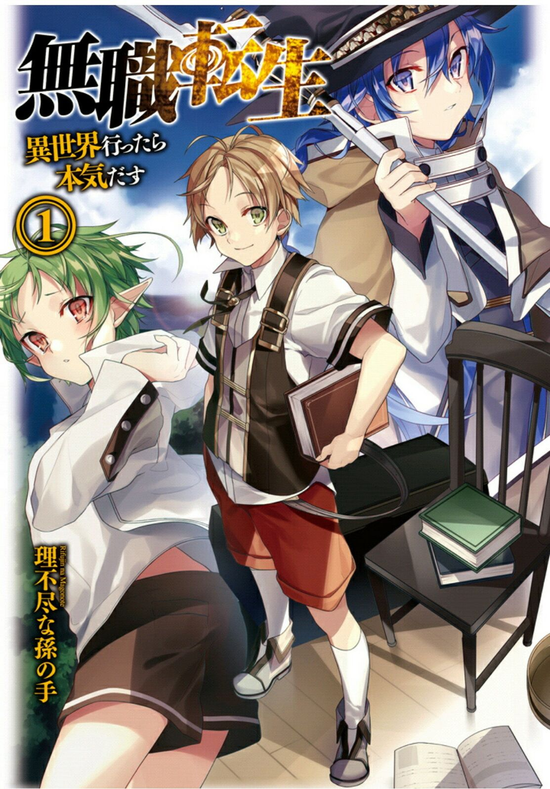
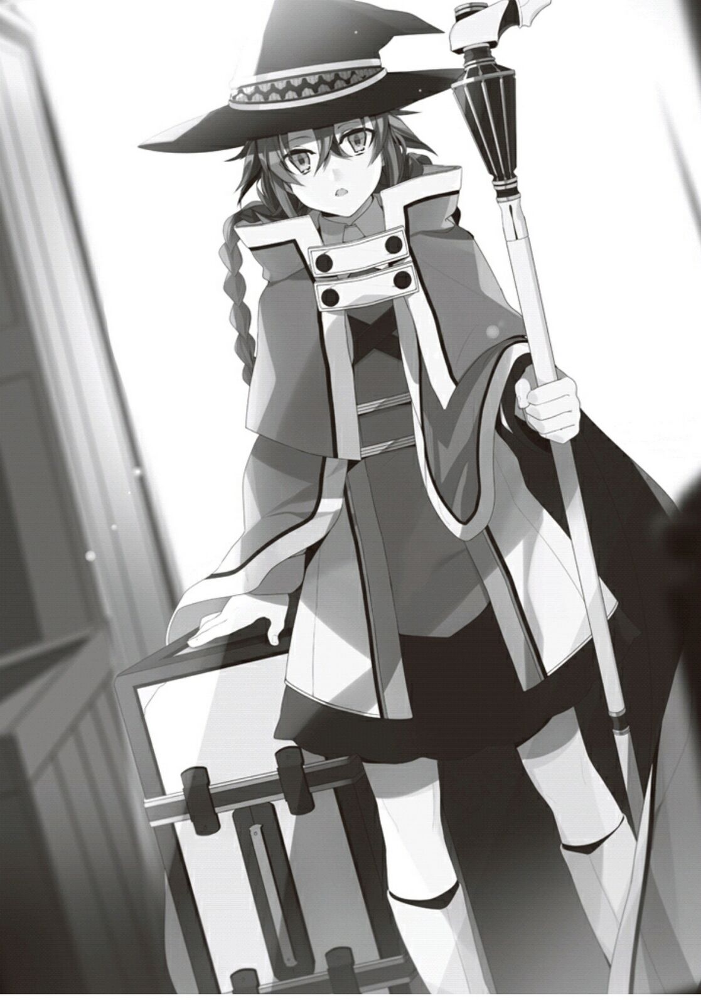
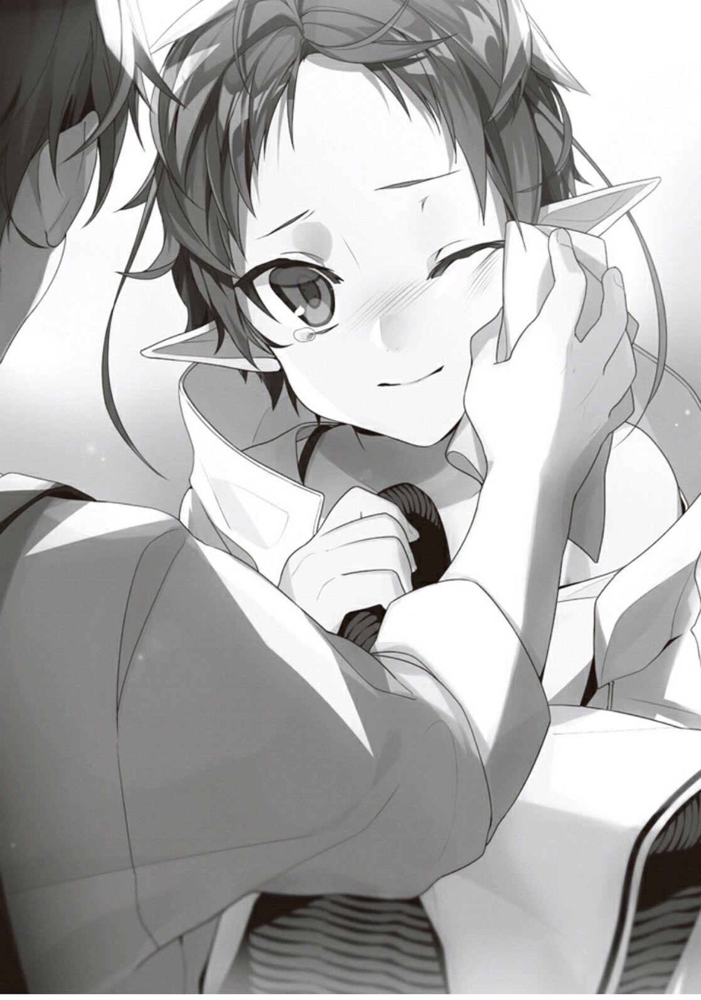

Volume 1
[]



Cover
I’m [1]a 34 year old homeless and jobless person.
I’m plump and ugly, a nice guy who regrets how he lived his life.
I wasn’t homeless three hours ago; I was a veteran NEET who hadn’t left my room for the past year.
However, my parents had passed away without me noticing.
As a NEET, I didn’t even attend the family meeting, let alone the funeral.
And in the end, I was chased out of the house.
I banged loudly on the walls and floor, flailing about as if no one was at home, for no one spoke up for me.
I was masturbating in my room on the funeral day when my siblings suddenly rushed in, dressed in mourning clothes, and declared that they were severing all relations with me.
I ignored them, and my younger brother took a wooden bat and destroyed the computer I valued more highly than my life.
Half-crazed, I lunged at them, but my older brother has a dan rank in karate, and I was viciously beaten in turn.
I sobbed and begged for forgiveness in an unsightly manner, but I was chased out the door, and didn’t even have time to change my clothes.
I endured the throbbing pain in my chest (most of my ribs were probably broken), and walked unsteadily on the streets.
My siblings’ rebukes from when I left the house resounded in my ears.
They were harsh insults that were difficult to take in.
My heart was completely broken.
What did I do wrong?
All I did was masturbate to a mosaic-less loli video during my parents’ funeral……[2]
What should I do next?
No, my mind does indeed know.
Find a job or part time job, then a place to live in, and buy some food.
How should I go about this?
I don’t know what I should do to find a job.
Hmm, I still know about going to “Hello”[3].
But though I’m not showing off that I have more than 10 years experience in staying indoors, how the heck should I know where Hello is? Furthermore, even if I go to Hello, I’d heard that it only introduces you to a job.
I’d have to bring a resume, go to the recommended place, and take an interview. I’d have to go for an interview in a dirty sweatsuit covered with sweat and blood.
Heck, if I can get employed, even I wouldn’t employ a fellow wearing something crazy like this. Maybe I would sympathize with him, but I definitely wouldn’t employ him.
Are there any shops that sell resume papers?.
Stationery stores? Convenience stores?
Maybe a convenience store might have them if I do go there, but I don’t have any money.
And then, what will I do if I settle all of that?
Assuming that I do get lucky, manage to borrow money from a financial institute, get a change of clothes, and buy some resume papers and stationery.
I’d heard that you can’t complete the resume if you don’t record your residence.
It’s over. Right at this moment, I finally found my life reaching its end.
…..Hah.
It started to rain.
It was the end of summer, when it starts to turn cold. The icy rain pierced through the clothes that I’d worn for I don’t know how many years, mercilessly stealing my body heat away.

…… If I could start over from the beginning.
I couldn’t help saying that.
I wasn’t born as such a rotten human.
I was born as the third son in a somewhat wealthy family. Two older brothers, one older sister, and one younger brother. The fourth in amongst the five siblings. In primary school, I was praised as clever despite my youth.
Even though I wasn’t considered great at studies, I was good at games, a brat who’s pretty good at sports. I was even once the center of attention in my class.
Then in junior high school I entered the computer club, consulted magazines, and saved enough money to assemble a computer. I stood out amongst my family, none of whom could write a single line of code.
The turning point in my life was high school…… no, it started in the third year of junior high. I was so busy tinkering with the computer that I neglected my studies. Thinking back on it now, that was where it all started.
I thought that learning stuff was useless for the future. I felt it couldn’t be used in real life.
In the end, I entered the most idiotic high school, considered the worst in the prefecture.
Even so, I thought it was nothing.
I felt I would succeed if I got serious, and that I was different from those other idiots. That was what I thought.
I still remember the incident back then.
While queuing up to buy lunch at the cafeteria, there was a fellow who cut the queue.
I grumbled a few sentences as if I was acting out of righteousness. That was due to my strange pride and the chuunibyou[4] personality I had.
Unfortunately, he was my senpai, and one of the two most dangerous people in the school.
I ended up being punched in the face until it was swollen, stripped naked, and tied in front of the school.
He took a lot of pictures, and easily distributed them all over the school. .
I fell to the bottom of the hierarchy in an instant, got laughed at by others, and even got the nickname of “Foreskin boy”‘.
I didn’t go to school for a month, and became a hikikomori. Upon seeing me like this, my father and brothers said irresponsible words to me like, Bring out your courage, do your best.
I hadn’t been the one at fault.
Nobody in that sort of situation would continue to attend school. There is no way.
Thus, no matter what anyone else said, I adamantly continued my shut-in lifestyle.
I felt that the peers who knew me were all looking at my pictures, mocking me.
Even if I didn’t go out, as long as I had the computer and internet, I could spend away my time. Due to the internet’s influence, I got interested in many things, and did a variety of stuff. Assembling plastic models, painting figurines, creating weblogs. My mother was willing to support me and it seemed she would come up with the money to help me out for as long as I requested it.
But I was sick of them all in less than a year.
I lost my motivation whenever I saw someone being better than me.
To others, I was merely fooling around. But as I was alone with so much time, hiding in my dark shell, I had nothing else to do.
No, even when I think back on it, that was merely an excuse.
At the very least, it would have been a better choice to become a mangaka and started publishing terrible web comics, or to become a web novelist and started posting novels.
Many people who shared similar circumstances did something like that.
I made fun of and slighted those people.
Mocking their creations, thinking myself as a critic, saying things like “It’s worse than shit”, criticizing them.
Even though I did nothing at all……
I want to go back.
If it’s possible, I want to go back to primary school, my life’s highest point, or back to the middle of junior high school. No, even if it’s one or two years ago. Even if it’s a little bit of time, I could still do something with it. Even though I gave up halfway through, I could start over no matter what.
If I put in my utmost effort, even if I didn’t become the best, I could at least be a pro.
“……”
Why didn’t I do anything up till now?
I once had a lot of time. Even though I didn’t leave my room during that time, I could have done a lot of things as long as I sat in front of the computer. Even if I couldn’t make it the top, I could have stayed somewhere in the middle and continued to put in effort.
Manga, novels, games, or even coding. If I had put in every effort, I should have been able to make small accomplishments. Even putting aside whether the accomplishments could be turned into money……
Ah, never mind. It’s useless.
I never worked hard before. Even if I went back to the past, I would probably trip in a similar place, and stop at a similar place. I ended up like this because I could never cross the hurdles a normal human could.
“Hm?”
Somewhere in the heavy rain, I heard people arguing.
What’s that commotion about?
It’s annoying. I don’t want to be involved. Even though I was thinking that, my feet wanted to head over to them.
“—- That’s why, you—-“
“You’re the one—–“
Entering my sight seemed to be three high school students having a lovers’ spat.
Two guys and one girl. They were dressed in the now uncommon collared student uniforms and a sailor uniform.
It seemed there was some sort of a harem war going on. The taller boy was quarreling with the girl, and the other boy was trying to mediate, but the two quarreling parties weren’t listening at all.
(Hmm, I had something like that before)
I once had a somewhat cute childhood friend in junior high. She might have been considered cute, maybe a four or five. She participated in the track and field club and had short hair. She had the kind of appearance that would cause two or three out of ten people to turn back. However, I was very passionate over a particular anime and felt that those in the track and field club should have a ponytail, so I thought she was an ugly girl.
However, her home was near mine and we frequently shared the same class during primary school, so we went home together more than once. We had plenty of chances to talk together, and also bickered at times. It’s a pity. In my current state, just listening to the words “junior high”, “childhood friend”, and “running club”, is enough for me to cum 3 times.
By the way, I heard that childhood friend got married seven years ago.
I overheard this rumor from the living room, where my siblings were talking.
Our relationship wasn’t bad. We were able to talk without reservations since we’d known each other from a young age.
I don’t think she liked me, but if I’d studied hard and entered the same high school, or if I’d joined the track and field club and entered the same school by recommendation, I might have raised a flag[5]. If I make a serious confession, we might even be dating each other..
I could have flirted and bickered with her like the trio, and we might even have done perverted things in an empty classroom after school.
Hah, what eroge is this?
(Come to think of it, these people are really damned riajuus. Just explode already…. Hm?)
Suddenly, in that instant, I realized.
A truck was charging towards the trio at a tremendous speed.
Also, the driver of the truck was lying prone on the wheel.
He was driving in a sleep-deprived state.
And the three still hadn’t noticed.
“D-d-d-Danger!!”
I tried to warn them by yelling, but I haven’t used my vocal cords fully for over ten years, and the cold rain and the pain in my ribs caused them to shrink further; The teeny-weeny, trembling voice I eked out vanished in the rain.
I must save them. I have to. At the same time, I thought: why do I need to save them?
I had a gut feeling that if I didn’t save them, I would regret it five seconds later. I would absolutely regret it if I saw those three people getting smashed into a bloody pulp by a truck.
Regret not saving them.
Therefore, I had to save them.
In any case, I thought I would probably starve to death by the roadside soon after. At least for that moment, I hoped to have some satisfaction.
I didn’t want to be left regretting at the very end.
–I ran and hobbled along towards them.
My legs were not moving as I wanted, as I had not moved them much for the past ten years. It was the first time in my life that I wish I had exercised more. The broken ribs were pulsing with excruciating pain, hindering my every step. It was the first time in my life that I wished I had taken more calcium.
It hurt. It hurt so much that I couldn’t run.
But I still ran. Ran.
I was running.
The arguing boy hugged the girl when he noticed the truck approaching in front of his eyes. The other boy had his back facing the truck and had not noticed, was merely surprised by his companion’s sudden action. I grabbed his collar without any hesitation and used all my strength to pull him back. The boy was pulled away and fell to the roadside, out of the truck’s path.
Good. Two more to go.
Just when I had this thought, the truck was already in front of me. I had just planned to pull them from a safe distance, but as I pulled them back, the recoil caused me to move forward.
It was to be expected, and it wouldn’t even have mattered if I weighed over 100kg. As a result of sprinting with my trembling legs, I got dragged forward by the momentum.
I felt a light behind me the moment I got hit by the truck.
Was that the rumored light of the flashback before death? I couldn’t see anything during that short instance. It was just too fast.
Did it mean that I did so little in my life?
I was sent flying onto a concrete wall by a truck 50 times heavier than I was.
“Puhh…..!”
The air in my lungs was pushed out. My lungs spasmed, demanding air after the hard running.
I couldn’t utter a sound. But I wasn’t dead yet. The accumulated fat was probably what saved me……
But once I thought that, the truck appeared in front of my eyes again.
I was flattened like a tomato between the concrete ground and truck.
When I woke up, the first thing I felt was my eyes being dazzled.
Light filled my vision, and I narrowed my eyes in discomfort.
Once my eyes adjusted to the brightness, I found a young blonde woman gazing at me.
A beautiful girl…… No, a beautiful woman would be more appropriate.
(Who is it?)
Beside her was a man of a similar young age with brown hair, giving me a stiff smile.
A strong and arrogant looking man. His muscles were amazing.
Brown hair, arrogant type. Looking at his DQN[6] appearance, I should have been repulsed. Strangely enough though, I did not feel he was unpleasant.
His hair was a pretty brown color, probably because it wasn’t dyed, I guess.
“—–XX—–XXXX”
The woman cracked a smile as she watched me and said something.
What is she saying? Feeling fuzzy, I could not hear clearly and didn’t understand it at all.
Could it be that it’s not Japanese?
“——XXXXX—-XXX,” the man replied with a gentle expression. Really, what did he just say? I couldn’t understand it at all.
“——XX—–XXX”
A third person’s voice came from somewhere.
I couldn’t see them.
I tried to sit up and ask them, “Where is this place, and who are you guys?”
Even if I was a hikikomori, I still wasn’t a complete failure at communication.
I could still do something like this.
“Ah, Ah——“
But I couldn’t tell if what came from my lips was a groan or just heavy breathing.
My body couldn’t move.
I felt sensations in my fingers and wrists, but I couldn’t move my upper body.
“XXX–XXXXX”
In the end, the man carried me up.
This is a joke, right? My body weighs over 100 kilograms, and he lifts it up so eas….
No, maybe I had been in a coma for dozens of days, and it caused my body weight to go down.
It was such a huge incident. There was a large possibility that I lost an arm or a leg.
(A fate worse than death, hah……)
On that day.
Those were my thoughts.
A month passed by.
It looked like I was reincarnated. I finally realized that fact.
I had become a baby.
I confirmed it when I was carried up with my head supported and my own body appeared in my sight.
I didn’t know why I still had my past memories, but there was nothing bad about retaining them.
Retaining memories upon reincarnation—–anyone would have entertained such delusions at least once.
But I didn’t think that such a delusion would become reality……
The first couple I had seen when I opened my eyes seemed to be my parents.
They were probably in the earlier half of their 20s.
Clearly, they were younger than me in my past life.
From the perspective of a 34-year-old, it was alright to call them young.
It really made me envious that they had children at that age.
I already noticed it from the start, but I didn’t seem to be in Japan.
The language was different, my parents’ faces didn’t appear to be Japanese, and their clothes even seemed to be that of a native village.
I couldn’t see anything resembling an electronic device (the person who wore a maid’s apron was cleaning with a cloth), and the utensils, bowls, and furniture were coarsely made from wood. It was probably not an advanced, developed country.
The light was not produced light bulbs, but from candles and lamps.
Of course, there was the possibility of them being very poor and unable to afford the electricity bills.
…..Maybe that possibility was very high?
I thought they surely had some money, as there was someone dressed like a maid.
But it wouldn’t be strange if it was a sister of one of my parents. It would be a normal thing for her to be cleaning.
I certainly wanted to start afresh, but living in a family that could not even afford to pay the bills made me very restless.
Half a year passed by.
Listening to my parents’ conversations during this last half-year, I had started to understand things bit by bit.
My English grades couldn’t have been considered good, but it seems true that learning it can be quite a slow thing when heavily influenced by a native language. Or could it be that this body’s mind was pretty good? Maybe it was because of my young age, but I could remember things quickly.
By this time, I was able to crawl.
Being able to move is a wonderful thing.
I had never felt such gratefulness for being able to move.
“He’ll run somewhere else when I move my eyes away from him.”
“Isn’t it good that he’s active? I was so worried when he didn’t cry at all when he was born.”
“Even now, he doesn’t cry.”
My parents had this discussion when they saw me crawling everywhere.
I was not at an age when I’d cry loudly when hungry, after all.
But even if I tried to hold it in, the stuff that comes from below would still leak out, so I just left things alone as they were.
Even though I could only crawl, once I did so, I understood a lot of things.
First of all, this family was relatively well off.
The building was a two-story wooden house, and there were over five rooms. They had one hired maid.
At first I thought the maid was my aunt or something, but her respectful attitude towards my parents made it seem she wasn’t family.
The place was a village.
From the scenery I could see from the windows, it was in a tranquil landscape of farming plots.
The other houses were scattered around, and on one side of the wheat fields I could see two, three families.
It was quite a rural place. I could not see any electric wires, lamps, or anything similar. Perhaps there wasn’t a generator nearby.
I had heard that foreign countries place their wires underground, but if that was the case, it was strange that this house did not have electricity.
It was too rural. It was painful for me who had been jostled by the wave of civilization.
Even if it was reincarnation, I still wanted to have a personal computer.
That way of thinking ended on a certain afternoon.
With nothing to do, I climbed up onto the chair as usual, intending to admire the field’s scenery. When I looked out the window, I was shocked.
Father was waving around a sword in the courtyard.
(Wha, huh? What is he doing?)
My dad is still waving that thing at his age? Chuunibyou?
(Ah, crap….)
Due to the shock, I fell down from the chair.
My undeveloped hands grabbed the chair, but they were unable to support my body and the heavier back of my head hit the ground first.
“Kyaa!”
I heard a scream just as I hit the floor.
My mother spotted me and dropped the washed laundry, her hands over her mouth, looking over me with a deathly pale face.
“Rudi! Are you okay!?”
My mother rushed over to me in a panic and carried me up.
She looked me in the eyes and placed her hand on her chest, looking relieved
“…..Phew, you seem fine.”
(Madam, it’s better not to move someone after their head just received a blow,) I reminded her in my heart.
From her anxious attitude, it seemed I had fallen in quite the dangerous manner.
It seemed possible that I might become an idiot due to the knock on my head. Not that that would be any different.
There was a throbbing pain on the back of my head. At least grabbing the chair with my hands had lowered my velocity.
As my mother’s reaction didn’t seem panicky I assumed there wasn’t any blood. It was probably just a swelling.
Mother took a careful look at my head.
Her expression seemed to say, if there’s an injury it’ll be serious.
Finally, she placed her hand on my head,
“To be safe……. Let the power of God be converted into a bountiful crop, and bestowed unto those who have lost the strength to stand once more, 『HEALING』”
I nearly burst out, “Hey, hey, is this this country’s [Pain, pain, go away quick]?”
Or was it that, along with my sword-wielding father, my mother was also a chuunibyou?
A warrior and cleric’s wedding?
Just when I was thinking that.
My mother’s hand emitted a dim light, and, in an instant, my pain disappeared.
(…… Eh?)
“See, it’s okay now. After all, your mum was a renowned adventurer, ” my mother said in a boastful manner.
I was instantly plunged into confusion.
Sword, warrior, adventurer, healing, chanting, cleric. All these terms echoed in my head.
What was that just now? What did she just do?
“What’s wrong?”
My father looked in the window from outside when he heard my mother’s scream.
His whole body was sweaty as he had just been swinging his sword.
“Listen to me, dear. Rudi actually climbed on top of a chair…..and nearly got gravely injured.”
“Well well, it’s not good if a boy isn’t active.”
A slightly worried mother, and a father who didn’t treat it like a big deal and placated her.
This is a commonly seen event.
But, my mother didn’t back off, perhaps because of the back of my head hitting the ground first.
“Just a moment, dear. This child isn’t even a year old. Would you worry a little more!”
“Despite that, a child is meant to grow up falling down to become sturdy. This way he will become healthy. Besides, even if he’s injured, can’t you just treat him?”
“But I’m really worried, I keep thinking of him getting heavily injured and me being unable to treat him……”
“He’ll be fine.”
My dad said that and embraced her tightly.
My mum’s face turned red.
“I was worried when he didn’t cry at all in the beginning, but if he’s so naughty, he will surely be fine……”
My dad kissed my mum.
Hey, hey, you’re showing this to me on purpose right? Both of you!
Later on the two of them put me in the next room to sleep, moved on to the second floor, and started in on the task of making me siblings.
Even if the two of you go to the second floor, I can still hear the nyan nyan noises, damn successful offline people…
(But, magic huh…..)
Later on, I started paying attention to the conversations between my parents and the maid.
And then I heard a lot of terms not in my vocabulary.
Especially the names of countries, districts, and various other locations.
Some proper nouns I had never heard before.
Maybe this place is…..
No, I was certain of it.
This wasn’t Earth, but some other world.
A different world that has swords and magic in it.
At this moment, I had a flash of inspiration.
…….If it’s this world, perhaps even I can achieve it.
If it’s a world of swords and magic, a world deviated from my previous life and what I know as common sense, perhaps I can do it.
To live like a normal person, to work hard like a normal person, to be able to climb back up if I fell down, to live my life fully.
I had been full of regret when I died in my previous life.
Dying full of burning restlessness over my impotence and the fact that I had accomplished nothing.
But the me who experienced all that,
Having retained the knowledge and experiences of my previous life, perhaps I could really do it.
–To live on seriously.(from a hikimori’s pov)
Lilia was once a guards-maid for Asura’s concubines.
A guards-maid is a maid who is also a guard.
Guards-maids will usually do a maid’s job, but if anything happens, they will take up a sword to protect their master.
Lilia faithfully accomplished her duty. As far as her work as a maid is concerned, there were no complaints.
But as a sword fighter, her ability is average, a dime a dozen.
And thus, she got careless in a battle against an assassin who targeted a newly-born princess, and she got injured in the leg by the enemy’s dagger.
The dagger was coated with poison that was specifically meant to kill royalty.
There was no detoxification or healing magic that was capable of treating such a calamitous poison.
The wound was immediately treated, and she survived thanks to her doctors trying a variety of methods to cure her, but there were side effects that lingered.
There was no problem caused to her everyday life, but she could never run or stomp again.
The kingdom then sacked her without hesitation.
It wasn’t an uncommon occurrence, and Lilia accepted this fate herself.
Having lost her abilities, it was a given that she’d lose her position.
Even though she wasn’t given compensation money, she considered it fortunate that she wasn’t secretly silenced because she served in the inner palace.
Lilia then left the capital.
The mastermind behind the assassination attempt wasn’t found.
Having understood the rules of the concubines’ staff, she knew there was a possibility she might become the next target.
Perhaps the palace let Lilia wander to leave to lure out the mastermind.
She always wondered why she, who had no significant background, had been accepted in the inner palace. It was now that she finally understood; they simply wanted to hire maids who could be used and discarded.
No matter the reason however, she had to leave the capital as quickly as possible, for her own safety.
Even though the kingdom treated her as bait, she had no obligation to stay as she was not ordered to in any way.
And she had no sense of duty to fulfill.
Lilia discreetly switched stagecoaches while traveling, and arrived at the Fedoa region, which had extensive agricultural lands and was located at the border.
It was a relaxing place of vast wheat fields, with the exception of the fortress city Roa, where the ruler lived.
Lilia intended to find work there.
But, as her leg was injured, she was unable to find a job that required physical strength.
She could resort to teaching swordsmanship, but it was best for her to be hired as a maid, because the salary was higher.
At this border, there were many who could wield a sword, and many who could teach swordsmanship, but a maid thoroughly versed in domestic affairs was relatively rare.
Since the supply was so little, the salary would be bigger.
However, it would be dangerous for her to be hired by the ruler of Fedoa, or any high class noblity of similar status…
Such people would surely have relations with the king.
If they knew she was a maid who once worked for the concubines palace, there was the possibility that she would be treated as a political tool.
And for that reason, Lilia stayed far away.
She didn’t want to experience a near-death situation again.
Even though it was a little unfair to the princess, Lilia hoped to stay far away from the royals’ contention for power.
But, if her salary was too low then there wouldn’t be enough money to send to her family.
Trying to find a safe job and a guaranteed salary sure wasn’t easy.
After running around everywhere for nearly a month, Lilia came across a recruitment note.
A lower class knight from Buina village, located in the Fedoa region, was looking to hire a maid.
On the top of that, the note said he would give special priority to someone with experience in taking care of children or who had knowledge of midwifery.
Buina was a tiny village on the edge of Fedoa.
A village among villages. An extremely rural village.
It was very inconvenient, but this was the place that she sought.
The employer being a lower class knight was also an unexpectedly fine find.
And most importantly, she recognized the prospective employer’s name.
Paul Greyrat.
He was Lilia’s protégé.
A noble’s profligate son, who on one day, suddenly barged into the dojo where Lilia was learning swordsmanship.
According to him, he had left home after a quarrel with his father, and had come to the dojo to learn swordsmanship.
Albeit a different style, he too did study swordsmanship at home, and soon after, surpassed Lilia.
Lilia was not amused by this fact, but she had since understood that she had no talent, and gave up.
Paul, who was utterly brimming with talent, was later banished from the dojo after making a mistake.
He only left Lilia a single sentence, “I’m becoming an adventurer.”
A man like a tempest.
It was 7 years since they went their separate ways.
At that time, he had actually become a knight and gotten married…
Though she didn’t know what sort of hurdles he had experienced in his life, Paul wasn’t a bad guy as far as Lilia could remember.
If she told him about her problems, she was sure that he would help her.
If that didn’t work out, then she would just mention some past events.
There were a few things she could use to negotiate.
Having contemplated all these factors, she headed to Buina.
Paul employed Lilia without any fuss.
It seemed he was really anxious as his wife Zenith was about to give birth.
Lilia had been taught extensively in midwifery for the princess’s birth. Moreover, she was someone that Paul was acquainted with and he knew her background.
Lilia was received with a warm welcome.
Her salary was also more than what she had expected, so her wish was achieved.
The child was born.
There weren’t any labor issues or anything. It went just as she was trained for in the inner palace.
There were no problems at all. It was very successful.
However, the child didn’t cry when he was born.
Lilia broke into a cold sweat.
The baby drew out amniotic fluids immediately after he was born, but he merely lifted his head up without any emotion, and made no sound.
The expressionless face was reminiscent of a stillborn child.
Lilia touched the baby, and he had a heartbeat. He was breathing too.
But he just wasn’t crying.
Lilia remembered the words of a senior guards-maid.
That babies who don’t cry at birth usually have complications.
The instant when she thought of this.
“Ah, ah.” The baby looked over to her, and mumbled something in his grogginess.
Lilia relaxed after hearing that.
Even though there was no evidence for it, she felt that there would be no problems.
The child’s name was to be Rudeus.
He was an uncanny child, never crying or fussing. At first, she assumed his body was slightly weaker, and that taking care of him wouldn’t require much effort.
But, such a notion only occurred at the beginning.
After Rudeus learned how to crawl, he started to move everywhere in the house.
Everywhere in the house. Kitchen, back door, storage, cleaning equipment place, fireplace…… etc.
He even climbed onto the second storey, though one couldn’t imagine how he did so.
Either way, he would disappear whenever nobody kept an eye on him.
But, he would always be found somewhere in the house.
Rudeus never left the house.
He would occasionally look outside the windows, but it seemed that he was still scared to go outdoors.
Lilia was instinctively afraid of this baby, and one had to wonder when it began.
It was probably the moments when she found him after his disappearances.
Most of the time, Rudeus would be smiling.
Sometimes he’d be looking at the vegetables, staring at the flickering candle flames, or just looking at panties that were yet to be washed.
Rudeus mumbled sounds and showed a smile that made people feel simply disgusted.
It was a smile that naturally disgusted people.
When Lilia was working in the inner palace, she’d had to go to the main palace for her missions, and the higher ranked officials nobles that she met there had similar smiles.
They were bald, had pudgy bellies, and were leering at her when they stared at her breasts. Very similar to a baby that was born not long ago.
It was exceptionally scary when she had to carry Rudeus.
His nostrils would flare, the corners of his mouth would rise, and his breathing hastens as he buried his face into her chest.
And then he would make strange noises, “Huuu” and “Orhhh”, seemingly laughing as he made these sounds.
At that instant, Lilia’s whole body was dominated by a terrible shivering cold.
And she has the urge to throw the baby and smash him into the ground.
This baby was not cute in any way. That smile caused fear in others.
It was the same smile the high ranking officials had when they bought many young female slaves.
He was supposed to be a baby who was just been born.
Lilia felt unbearable discomfort, and even experienced feelings of peril when she thought things over.
This baby was very strange. Could there be that there was something bad possessing it? Or perhaps it was something similar, like a curse.
Having thought this through, she started to feel extremely anxious.
She went to the item shop, and spent the pitiful amount of money that she had to buy some necessary things.
When the Greyrats went to sleep, she did her home’s ritual to chase evil away.
Of course, this was kept from Paul and his family.
The second day, after carrying Rudeus again, Lilia understood.
It was useless.
And he was still as disgusting as usual. It was eerie that a baby would show such an expression.
Zenith said, “When feeding this baby milk, he will lick…”
This had become just outrageous.
Paul had no restraint when it came to women, but never did he become disgusting to this extent.
This was too strange to be dismissed as hereditary.
Lilia remembered again.
She had heard of a story in the palace.
In the past, an Asuran prince was possessed by a demon. To revive that demon, he would crawl around on his limbs every night.
And when an unsuspecting maid hugged him, the prince stabbed her with a knife hidden behind him, killing her.
It was too scary.
Is Rudeus something like that?
There was no doubt. He was that kind of devil.
He’s still obedient for now, but one day he’ll awaken, and when everyone is asleep, one by one he’ll…….
Ahh…..It’s too early, too early to decide this. I shouldn’t have taken this job.
“I’ll get attacked sooner or later.
…….Lilia was a person who seriously believed in such superstition.
During the first year of her work, she was still afraid of him.
But she didn’t notice when Rudeus’ unpredictable movements started to change.
He didn’t disappear as and when he wanted, and usually stayed in Paul’s study on the second floor.
Speaking of the study, it was just a room with a few books.
Rudeus stayed there without leaving. Lilia secretly observed him, and found him mumbling to himself while reading a book.
It was a meaningless mumble.
Or was supposed to be, at least, for it wasn’t a commonly used language in the Central continents.
It was still too early for him to be learning how to talk. Of course, he had yet to be taught alphabets.
He was just an infant looking at a book and making random sounds.
Or else it would be just too strange.
Lilia always had the feeling that those sounds carried meaning and structure.
Rudeus seemed to understand the contents of the book.
It was too frightening…..Lilia always thought that, when she observed Rudeus from the gap in the door jamb.
However, she never felt disgusted with him for some inexplicable reason.
Come to think of it, that unknown source of discomfort gradually disappeared from the moment he confined himself to that room.
Though he occasionally showed his disgusting smile while she carried him, it didn’t feel unpleasant.
He wouldn’t bury his face into her chest, and he wouldn’t suddenly pant.
Why had she always found him scary?
Recently, she began to feel that he was sincere and hardworking, and didn’t want to disrupt him.
Zenith seemed to share her sentiments.
After that, Lilia felt that not to care for him was better.
It was an idea that went against common sense.
In fact, it was abnormal for human beings not to care for a child that was born not long ago.
But recently there were signs of knowledge in Rudeus’ eyes.
He showed only “chikan”[7] eyes a few months back, but at this point, there was a strong will and dazzling knowledge in them.
What should she do? Even though she had knowledge of taking care of children, the inexperienced Lilia found it hard to discern.
She couldn’t remember whether it was her guards-maid senpai or her mother back in her hometown who said this, that there was no one correct way to bring up a child.
At the very least, she no longer felt disgusted, uncomfortable, or frightened.
So she decided it was best not to disturb him, and let him revert back to how he was originally.
–Let’s just leave him as he is.
Lilia finally concluded.
About 2 years has passed since I was reincarnated.
My legs and waist were starting to become strong enough for me to walk on my feet.
And I was beginning to learn this world’s language.
Having decided to live on seriously, I started to consider what I could do.
What did I need in my life?
Studying, sports, and skill sets.
As a baby, there was little I could do. The most I could do was to bury my face into someone’s chest.
And when I did that to the maid, she made an unhappy expression.
That maid definitely hated kids.
Realizing that I can do sports a little later in life, I started searching for books in the house to learn words
It’s important to be literate.
There’s a near 100% literacy rate amongst Japanese, but many had poor English skills, so they balked at the idea of going overseas, and even treated foreign languages as a mere skill set. Therefore, learning this world’s words was my first assignment.
There were five books in this house.
Could it be that books in this world are expensive, or that Paul and Zenith don’t read books?
It was probably both these reasons. It was unbelievable to me, who owned thousands of books.
Though they’re all light novels.
There were only five books, but they were sufficient for me to learn to recognize words.
This world’s language was similar to Japanese, so it was easy for me to pick up.
Even though the letters were completely different, learning how to speak went very smoothly.
I’ll be fine as long as I memorize enough vocabulary. It’s beneficial to first understand how to speak.
Father read me the contents of the books many times , so learning the vocabulary went smoothly.
Perhaps it had something to do with this body’s ability to memorize well.
After being able to read the language, I found this book’s content very interesting.
In my past life, I never thought of learning as interesting. Thinking back about it, it was exactly the same as memorizing information from the internet. How can it not be interesting?
Nevertheless, did my father really think an infant would be able to understand the contents of that book?
It was fine for me, but any normal one-year-old kid would have frowned and started bawling.
These were the five books at home.
.<<Traveling Around the World>>
This is a guidebook that contains the name and unique characteristics of various countries in this world.
<<Fedoa’s Monsters, Ecology and Weaknesses>>
A book that described the monsters that appeared in the Fedoa region, and ways to handle them.
<<Guide to Magic>>
A guidebook that explained how to use magic attacks, from the elementary rank to the advanced rank.
<<Perugius’ Legend>>
A fairy tale about a summoner named Perugius, who traveled along with his companions, battling the demon gods, saving the world, punishing evil, and rewarding the good.
<<Three Swordsmen and the Labyrinth>>
It’s the adventure of three talented swordsmen of different sword styles who encountered each other, and entered the labyrinth.
Leaving aside the two battle novels, the other three let me learn a lot.
Especially the guidebook about magic.
To me, who came from a world without magic, the things recorded here got me really interested,
Reading through it, I understood a few basics.
1. First of all, magic can be broadly classified into three categories.
[[Attack Magic]] — Attacks a target[[Healing Magic]] — Heals a target[[Summoning Magic]] — Calls out something
Three types. Easy to understand.
There are various functions, but according to the guidebook, magic was originally developed for war. It still isn’t really used much besides battle and hunting.
2. To use magic, you must have mana.
Conversely, as long as you have mana, you could use magic.
There are two ways of using mana.
- [[Use the mana within your body]]
- [[Draw out mana from something that contains mana]]
It must be one of these two.
I can’t think of a good example. It’s probably something like a home generator for the former, and a battery for the latter.
A long time ago, people used only their mana to use magic; as generations passed, magic was researched into, the difficulty spiked, and the mana required increased exponentially as a result.
This was fine for the people who had a lot of mana, but those with lesser mana couldn’t use that sort of magic.
Thus, the magicians of the past thought of ways to draw out mana from elsewhere to fulfill the magic’s requirements.
3. There are two ways to activate magic.
- [[Incantation]]
- [[Magic Array]]
There’s really no need to explain here, right? To activate a spell, either to utter a chant through the mouth, or draw a magic array.
Magic arrays were the norm a very long time ago, but at incantation is currently the mainstream.
In the distant past, the simplest incantation required about one, two minutes.
It wasn’t very long, but this method was very difficult to use in battle.
In contrast, once a magic array was drawn, it could be used repeatedly.
There was a certain magician who successfully reduced the incantation time. Thus, incantation became the norm.
The simplest incantations took about five seconds, so basic magic attacks could be used with incantation.
But unless the situation was urgent, complicated magic spells are still cast with magic arrays.
4. A person’s mana is set when they are born.
A normal RPG increased your MP as you level up.
But this doesn’t look the case in this world.
Basically, everyone’s a Warrior by profession. Just saying that term makes me feel like there was something of a change……
What about me? Hmm.
Apparently, the amount of mana one possessed was hereditary.
The fact that my mother was capable of magic meant I could probably hope for certain amount of innate mana.
It’s a little worrying. Even if my parents are talented, I don’t think my genetic makeup is capable of that.
In any case, I began to try out the simplest magic.
The guidebook contained methods for both incantation and magic formation, but since incantation’s the norm, and there’s no place for me to draw magic arrays, I started with incantation.
It seems that the more complicated a spell was, the longer the incantation time would be. In fact, extremely complicated spells had to be chanted in conjunction with magic arrays; that’s not a problem in the beginning , however..
It seems a skilled magician can use magic without incantation.
Voiceless incantation, or reducing the chants; Something like that.
But why was it that a skilled person didn’t need incantation?
The amount of mana required to cast the technique doesn’t change, and even if you level up, your MP won’t increase either…..
Or was it the more skilled you are, the less mana you’d use?
No, even if that does decrease one’s mana usage, there’s no reason to skip steps.
‘………….Whatever, I’ll just try it out first.
I hold the guidebook in my left hand, stretched out my right, and read out the words.
“Bestow the protection of water on the place thee demandest, let thine crystal clear flow here, WATER BALL”
I felt the sensation of blood gathering in my right hand.
My blood feels as if it’s being squeezed out, and a water bullet the size of a fist appeared in front of my right hand.
“Whoa!!”
The moment I showed amazement, the water bullet fell onto the floor, dampening it.
The book said the water bullet should be shot out, but it had fallen instead.
Perhaps my concentration had been broken, causing the spell to fail.
Concentrate, concentrate……
The sensation of blood gathering in my right hand. This, this, this feeling …….Mmmm.
I once again raise my right hand, recall that feeling from before, and imagine it in my mind.
I don’t know how much mana I have, but it’s best not to think that I can do this many times.
Concentrate, and let every attempt be successful.
First, I had to imagine it, then repeat it over and over in my mind, then cast it in reality.
If it ended in failure, I’ll imagine it again in my mind. Until I can do it perfectly in my head.
This was how I practiced every move in fighting games in the past.
Because of that, I didn’t really fail when I tried to execute a combo.
I should have no problems if I practice using this method…… I hope.
“Brea….the…..”
A deep breath.
I send the blood flowing from my toes and top of my head into my right hand, using that feeling to gather power.
And then, have the feeling of firing it out from my palm…
Carefully, carefully. With every heartbeat, gathering it bit by bit…..
Water, Water, Water, Water Bullet, Water’s Ball, Water Ball, Water Ball Panties…..
Evil thoughts were mixed in to it. One more time.
Concentrate, squeezing out waterrrrrrr………
“HAH!”
I unconsciously shouted like a monk, and the water bullet came out.
“Eh, huh…..?”
Plop.
The moment I showed surprise, the water bullet fell way too quickly.
“………… Ah.”
Huh…I didn’t chant just now, right?
Why did……?
What I did was to recall the feeling of using that spell and imitating it in my mind.
But can it be that just redoing the flow of the magic made incantation unnecessary?
Was voiceless incantation that simple?
Wasn’t it supposed to be an upper class technique?
“If it’s that easy to succeed, what’s the use of incantation?”
Even a novice like me can cast magic using voiceless incantation.
Concentrating the mana in my fingertips, and determining the shape in my mind.
That was bascially it.
In that case, incantation was completely unnecessary. Everyone can just do this instead.
(………… Hm.)
Can it be that incantation’s the activation of magic?
There’s no need to replicate the feeling of gathering blood; I can just complete it if I let out my voice.
It might be something like that.
It’s just like an automatic car. One can actually change it to manual and it’ll still work.
“Incantation will automatically cast magic.”
There’ll be several advantages to using incantations.
Firstly, it’s easy.
Instead of explaining it as gathering the blood from the blood vessels in my body, everyone can simply recite it and succeed instead? Both teacher and student will have an easier time.
And after teaching this over and over again, it’ll become [[incantation is something quintessential]].
Secondly, It’s convenient to use.
Needless to say, attack magic’s meant to be used in combat.
Instead of closing your eyes and going “mmmmmmm” while concentrating, it’s faster to recite it quickly.
It’s a question of which is easier, to run with all of one’s strength while drawing a clear picture, or to run with all of one’s strength while chanting.
“It must be different for various people. Maybe there are those who would find it easier with the former…..”
I quickly flipped through the magic textbook, but I found nothing on voiceless incantations.
That’s weird. Based on my experience, it wasn’t that hard.
Maybe it’s a special talent I have, but others can’t use it at all.
Maybe I can think of it this way.
A magician typically starts out as a beginner and ends up as a veteran, and everyone uses the incantation method to cast.
After thousands of times, their bodies would be used to incantation.
And when it came to voiceless incantations, they didn’t know what to do.
Therefore, as it’s not disseminated, it’s not recorded in the guidebook.
“Whoaa, that explains it!”
Then that means I’m not an ordinary person.
That’s amazing, right?
It’s like I’m using a tip sheet.
“They used a Crime Catalyst without singing an Oratorio!?”
“But all I did was use this catalyst like normal and open the gate.”[8]
That kind of feeling?
Woohoo, I’m getting excited!
Ah, no no. Calm down, cool down.
The past me was deceived by this feeling.
Because I’m better at using the computer than the average person and got that feeling that I was some kind of chosen one, I became greedy and eventually ended up a failure.
I have to be humble. The most important thing is to not treat myself like someone superior to others.
I’m a novice. A novice.
A novice with beginner’s luck and managed to hit the bowling pins with a strike.
I just have beginner’s luck. I don’t think I’m a talented person with talent. I should be working hard on this.
Good. I needed to first rely on the chant to use a spell, then based on the feeling I experienced when casting I could practice the voiceless incantation repeatedly.
I would just use that format to learn.
“Then let’s do it again.”
But when I stretch out my right hand, I feel strangely sluggish.
It’s as if there’s something heavy on my shoulders.
The feeling of fatigue.
Is it because I’m concentrating too hard?
No, I was at least considered a pro at internet gaming(self-proclaimed). I was a man who could continue hunting for six full days without sleeping if I needed to.
My concentration wouldn’t vanish from just two attempts.
“That is to say, my MP depleted….?”
Goodness…if they say the mana amount is decided at birth, my mana’s only enough to fire two water bullets?
That’s just too little, right? Or is it because I’m a beginner, my efficiency when using mana properly is really low?
No, how can that be?
To be safe, I tried firing off the spell one more time, but in the end I fainted.
“Oh really, Rudeus, If you’re sleepy just go to the toilet and then sleep on the bed.”
When I woke up, I was treated as if I’d fallen asleep when reading the book, and wet the floor.
Damn. I got scolded for wetting the floor even when I’m so old…..
Damn it…… Damn it….. Eh, I’m only two, right? Wetting the bed is still forgivable.
But seriously, isn’t my mana’s too little?
Hah…… This made me feel really powerless…… Well, even if it’s 2 water bullets, the next thing is how to use it.
In any case, I should practice to the point where I can fire it right away……
Hah……
The next day, I was fine even after firing four water bullets.
I only felt tired after the fifth shot.
“Huuuh…?”
Based on my experience yesterday, I know I’ll faint if I fired another shot, and I decide to stop.
So I began to think.
My current maximum’s six shots. That’s two times more than yesterday’s.
I looked at the barrel’s-worth of five water bullets, and wonder,
The reason why the number of shots increased by 2 times from yesterday till today.
Was it because I was already tired yesterday, or was it because I consumed more MP yesterday?
I’m casting them all through voiceless incantation, but there shouldn’t be any difference between the two methods.
I don’t get it.
Maybe the number will continue to increase tomorrow.
It’s the next day.
The number of water bullets I could create had increased.
Eleven times.
It feels like I can increase the number of shots I can fire with the number of shots actually fired.
If my theory’s true, by tomorrow, I should be be able to use the spell 21 times.
Another day passed.
To confirm my guess, I casted the spell five times, and stopped.
Another day passed,
And my limit became 26 times.
My limit really is the same as the number of times I had cast the spell.
(You actually bluffed me………………………..!)
What do you mean a persons total mana is decided at birth?
You’re determining talent, an intangible thing you can’t even see with your own eyes.
A child’s potential isn’t what an adult can determine!!
“Well, this also means that I can’t just blindly trust something from a book.”
This book’s probably saying something like, “Human’s happiness has a limit.” That sort of thing.
Or was it referring to the results of training?
Did it mean that after rigorous training, there’s a mana cap?
No, it’s still too early to draw a conclusion. This is still just a hypothesis.
Something like….. Yeah, like, it’s based on how much you can grow, or something.
When casting magic during infancy, the maximum value will increase exponentially, or something like that.
Ah, I can’t ignore the possibility that maybe it’s due to my special body.
….. No, it’s not good to treat myself as special.
In my original world, it’s said that the athletic abilities does increase exponentially during puberty.
But the problem was that after puberty, no matter how hard one try, there’s not much progress.
Even in this world, for something like magic, a human’s body structure shouldn’t be any different.
It’s basically the same.
Then, there’s only one thing to do.
Train as hard as possible before puberty ends.
From the next day onwards, I depleted my mana to the fullest every day.
At the same time, the number of spells I could use increased.
As long as I can remember the feeling, it’s easy to use voiceless incantation.
Anyway, my short-term target’s to completely master elementary magic.
Elementary magic is just as the term implies. It had the lowest rank amongst all attack magic.
Water and flame bullets are considered the basics even amongst the elementary spells.
There are seven difficulty ranks to magic.
[[Elementary, Intermediate, Advanced, Saint, King, Emperor, God]]
I read that an ordinary educated magician can improve his specialized magic up to the advanced rank, while the typical uneducated is able to cast elementary to intermediate ranked spells.
If we’re going by the rank beyond Advanced, based on this system, those called a Fire-Saint or Water-Saint can be considered to be one of a kind.
The Saint rank.
I’m yearning that a little.
But that magic guidebook only has fire, water, wind, and earth systems, up to the Advanced rank.
‘Where can I learn spells ranked Saint and and above……?
No, it’s better not to think too far ahead.
It’s the same too for RPG Maker, If one started off by creating the strongest monster, there’s a high chance of being dejected.
One should start from the slime.
Though I didn’t even finish the slime even though I started from it.[9]
Now, the book contained the following elementary water spells.
Water bullet: A water bullet that can be shot. Water Ball.
Water shield: Water that rises from the ground to form a wall. Water shield.
Water arrow: A 20cm dart that’s fired. Water Arrow.
Ice strike: Creates a column of ice to smite an enemy. Ice Smash.
Ice weapon: Forms a sword of ice. Ice blade.
I tried out everything.
Even though each spell was elementary, the amount of mana it took to cast them varied.
Using the water bullet as my standard. A single cast expends two to twenty water bullets worth of mana based on the spell.
Basically, I practiced only water magic.
It would have been a problem if I’d tried the fire magic and caused a fire disaster.
Speaking of fire, it seems the amount of mana used is correlated to the temperature. The higher the rank, the colder the ice got.
While the book said certain spells should fly out of my hand, whether it water bullet or water arrow I could never get them to work properly.
But I’m unable to shoot anything, whether it’s the water bullet or the water arrow even though the book tells me so.
Why’s that so? Where have I gone wrong…..
Hmmm. I don’t get it.
The book had said something about a spell’s size and speed.
Can it be that after creating the bullet, I still need to control it using magic?
Let’s try it out then.
“Oh?”
The water bullet became bigger.
“Ohhhh!!”
Plop.
“Oh…..”
But it still fell onto the floor.
After that, I tried various means to change the bullet’s size.
I created two different bullets at the same time.
I changed the size of the bullets at the same time.
But even though it’s a new discovery, none of the bullets look like flying forward..
Fire and wind aren’t affected by gravity, and can float in the air. In the end though, they’ll still disappear after a certain amount of time.
I tried using wind to shoot a floating fireball, but it felt wrong somewhere.
Hmmm……
2 months later.
At the end of all the mistakes, I finally succeeded in making a water bullet fly.
By now, I’ve gotten a basic understanding of the concept behind incantation.
There are certain steps to incantations.
Creation >> Setting of size >> Setting of firing speed >> Activation.
Within this, the magic spell is done once the user determines the size and speed.
Which means after the chant,
1) The spell automatically takes shape.
2) After this, within a fixed time frame, increase the mana input to adjust the size.
3) After the size adjustment, during a fixed time frame with extra mana input, was the adjustment of the speed setting.
4) Once the preparation period’s over, the magic spell leaves the caster’s hand, and automatically flies towards its target.
This is the sequence of the entire thing.
This is most probably correct…I think.
The trick is that after chanting, I need to add more mana twice.
If there’s no adjustment to the size, the firing speed adjustment won’t occur.
It’s no wonder that when I tried to fire the bullet, the only thing that happened was the size changing, nothing else.
And to add on, when I’m doing voiceless incantation, I’ll have to process all of these by myself.
Even though it’s a hassle, it can reduce the time needed to change the size and firing speed.
It’s possible to be several times faster than an incantation.
Also, modifications can be done during the creation phase of a voiceless incantation.
For example, what the book didn’t record was how to freeze a water bullet to create an ice bullet.
If I practice this, I might be able to use the Kaiser Phoenix attack[10] (My face’s full of pride).
With different ideas, I can create a variety of effects.
This is becoming interesting!!
………… But the basics are definitely important.
I’ll have to wait until my overall mana increases before experimenting.
- [[Increase my mana capacity]]
- [[Use voiceless incantation until it’s as easy as breathing]]
These are my two assignments.
It’s easy to have setbacks if I suddenly have a large goal.
It’s best to start of with something small.
Alright, time to work hard.
And so, I kept practicing elementary magic until I nearly fainted.
3 years old.
Recently, I finally got to know my parents’ names.
My father’s name is Paul Greyrat.
And my mother’s name is Zenith Greyrat.
My name is Rudeus Greyrat.
The eldest son of the Greyrats.
Even though I’m named Rudeus, my parents always shortened each other’s names whenever they called each other, and shortened mine to Rudi. Thus, I only got to know my full name after a very long time.
“Oh, Rudi really likes books.”
As I’m always walking around with a book, Zenith lets out a laugh.
They never lectured me or tried to take the book away.
I always have a book tucked under my armpit even when I’m eating. However, I won’t read the magic textbook in front of my family
It’s not to hide my talent. It’s just that I don’t know how magic is viewed exactly in this world.
In my previous world, witches were prosecuted during the Middle Ages.
It was when any spellcasters were treated as heretics and burned.
There are practical books like this in this world, so the use of magic probably won’t be deemed as heresy, but it may not necessarily be viewed in a positive light.
Maybe the common understanding is that magic can only be used after becoming an adult.
Since it’s a dangerous act that would cause fainting after overexertion.
Some might think of it as being a detriment to growth.
And with that thought, I decided to keep my understanding of magic from my family.
Maybe that fact was already long revealed when I shot magic spells out of the window
And I had no choice then. I wanted to see how fast I could shoot them anyway.
The maid (I think her name’s Lilia) occasionally looked at me with a dangerous expression, but my parents continue to be happy-go-lucky, so I felt it’s still okay.
If I’m stopped here, I guess it can’t be helped, but I don’t wish to miss out the growth period.
Talent will rust if it’s not grown when it needs to be grown.
I have to make use of this period as much as I can.
However, I had to put this secret magic training to an end.
It was a certain afternoon.
My mana capacity had grown quite a lot, so I started to try some intermediate spells, reciting a water cannon spell with the mindset of simply trying it out.
Size: 1, Speed: 0.
Like usual, I just wanted to do it to fill up the barrel with water.
I just thought it would end up overflowing at most.
But unexpectedly, an absurd amount of water was released, smashing a big hole in the wall.
Left shocked, I was unable to think of what to do due to shock.
A hole opened in the wall is undoubted proof that I used magic.
And there’s nothing I can do about that.
I quickly gave up.
“What happened!? Whoa……..”
At first, it was Paul who rushed in.
And then he stared at the wall with his mouth agape.
“Wai-hey, what the………. Rudi, are you alright……?”
Paul’s really a nice guy.
No matter how anyone looked at it, I’m definitely the one who did this. However, he’s worried about my body.
“Monsters…? But in this vicinity?” Even now, he’s mumbling stuff like that, while looking around warily.
“Oh my…”
And Zenith followed him into the room.
She was calmer than Father.
After looking at the ruined wall and the puddles of water on the ground,
“Oh…?”
Her eyes sharpened as she stared at the page of the magic textbook where I had left it open.
After looking at me and the book, she crouched down in front of me, and stared at my eyes with a gentle expression.
Scary.
There’s no smile in her eyes.
And I continue to focus my faltering eyes on Zenith with all my might.
I learned something when I was a NEET. When you did something wrong, a stubborn attitude will only make things worse.
Therefore, I can’t avoid her eyes.
This is a moment when a sincere attitude is needed.
I can’t avert from the person’s eyes, and I have to meet them face on. This alone will make me look more sincere.
It doesn’t matter what one think. The main aim is to appear sincere.
“Rudi, did you read out loud what is written on this book?”
“I’m sorry.”
I nodded, and apologized.
When something wrong was done, it’s best to simply apologize.
After all, only I, nobody else, could have done this.
If I’m to come up with a shoddy lie, my trustworthiness will decrease.
I lied as much as I wanted in the past, and became untrustworthy as a result.
I will not make the same mistake again.
“No, wait, this is an intermediate……”
“Kyaa! Did you hear that, darling!? Our child’s a genius after all!!”
Paul’s words were overpowered by Zenith’s scream.
She grabbed Paul’s hands and jumped around in exhilaration.
How energetic.
Was my apology ignored?
“No, you, erm, I haven’t taught him any words anyway!”
“Let’s hire a home tutor right now!! This child will become a remarkable magician in the future!!”
Paul was still perturbed, while Zenith was completely delighted.
It looks like Zenith’s exuberant over the fact that I used magic.
And maybe I was worrying too much, thinking that on children shouldn’t be using magic.
Lilia remained calm as she quietly cleaned the room.
This maid probably knew that I was using magic for quite some time, or she already had a feeling that I was somehow doing it.
Perhaps she didn’t think it was a bad thing, so she didn’t take it to heart.
Or maybe she just wanted to see the happy faces of my parents.
“Hey dear, go out to Roa tomorrow and put up a job request!! This talent must be properly trained!!”
Zenith was getting excited by herself, making a ruckus about genius, talent.
Am I considered a genius for being able to suddenly cast magic?
Is it my parents’ doting on me too much? Or that using intermediate magic spells is considered amazing? I’m unable to tell.
No, perhaps it’s really my parents doting on me.
I never used magic in front of Zenith before
“I guess it’s true.” But since she did say those words, maybe she already thought I was a genius.
It’s baseless…….
Ah, no.
I suddenly remembered.
Because I was always alone.
When I was reading, I would occasionally read or repeat phrases that I liked.
And ever since I came to this world, I would mumble to myself while reading books.
At first it was Japanese, but after I learned how to talk, I would subconsciously use this world’s language.
And then, when I mumbled to myself, “Rudi, that is—–” Zenith would teaching me the meanings of those words.
Because of that, I remembered quite a lot about the fixed terms of this world. Well, never mind about that.
I never said anything to anyone, but I learned the letters of this world by myself.
My parents didn’t even teach me how to talk.
From my parents’ viewpoint, it’ll seem that “Our child can read words we never taught him, and read out loud the contents of a book.
That’s definitely a genius.
If it’s my child, I’ll also think that he’s a genius.
In the past, the same thing happened when my younger brother was born.
He grew up fast, and did everything faster than me and my older brother.
Saying words out, walking on his own feet.
My parents were also optimistic; whenever their kids did something, even if it’s nothing too big, they’ll go “That kid’s definitely a genius”
Well, I’m a damned NEET who dropped out in High School, and my mental age is more than 30 years old.
Without that much experience, I’ll be a miserable wretch.
That’s 10 times! 10 times!
“Darling, get a tutor!! We’ll definitely find a good magic teacher in Roa!!”
And then, when they find someone with talent, the one thing all parents would do would be to get the best education for him.
In my previous life, my parents praised my younger brother’s talent, and let him learn all kinds of things.
And so, Zenith suggested to hire a magician to be the home tutor.
But Paul objected to this idea.
“Wait, didn’t we decide that if he’s a boy, we’ll make him a swordsman instead?”
If it’s a guy, he’ll take up a sword. If it’s a girl, she’ll learn magic.
It seemed that was decided before I was born.
“But he can activate intermediate spells at this age!! If he starts training now, he will become an amazing magician!!”
“But a promise is a promise, right!?”
“What promise!? Don’t you always break your promises!?”
“My matters have nothing to do with this now, right!?”
And so, a couple’s quarrel began at that moment.
Lilia calmly cleaned up the room.
“Let him learn magic in the morning, and learn swordsmanship in the afternoon. Isn’t that fine?”
After the quarrel persisted for a while, Lilia finished up her cleaning, sighed, and suggested that, ending the argument.
And so, the idiot parents subjected me to study while ignoring what their kid wanted.
Oh well. I guess it’s good since I decided to live on seriously.
And because of those reasons, our household decided to hire a tutor.
It seems the income as a tutor, for a noble child, is rather good.
Paul’s one of the few knights in this area, and still had the status as a lower-class noble. Thus, he’s able to provide a salary befitting of his status.
But this is a village area far away from the capital.
Thus, as befitting of the border, it’s rare to get outstanding talents here, let alone magicians.
Would they be able to hire someone just by sending a request to the Magic guild and the Adventurer guild?
Even though I had such worries, the unexpected thing was that we quickly found a tutor, and that tutor will come in tomorrow.
This village had no inn, so the job offer includes accommodation too.
According to my parents’ guess, the one arriving is probably a retired adventurer.
Young people won’t come to the countryside, and a court magician can easily find work at the capital.
In this world, only magicians ranked advanced and above are qualified to become a magic tutor.
An consequently, an adventurer’s rank is probably above intermediate.
The one coming is probably a middle-aged or old man who spent his life devoted to researching on magic.
That person probably has a beard, giving the impression of a sage.
“I am Roxy. Please give me your guidance.”
But contrary to my expectations, a young girl came along instead.
She’s probably of similar age to a Middle School student.
She’s dressed in a brown magician’s robe, her light blue hair in braids, and her compact body felt just right.
The white skin, devoid of any suntan, was accompanied with sleepy half-opened eyes. She had curt-looking lips, and though she’s not bespectacled,, she does give the image of a studious girl always working in the library.
She’s holding a bag in one hand, the other hand holding a staff a magician would use.
And thus, she met with the 3 of us in this house.
“……”
“……”
My parents were speechless as they look at her.
That’s to be expected.
It was beyond what we expected.
We imagined the tutor to be someone who had weathered many years.
But the person who came was a little fellow like this.
To me, who had played a lot of games, a loli-like magician wasn’t something out of the ordinary for me.
Loli, half opened eyes, brusque.
With these 3 qualities, she’s perfect.
Please be my wife.
“Ah-ah, you’re, that, home tutor?”
“Ah, that’s, really—“
With my parents stuttering, I quickly added,
“You’re really small.”
“I don’t want to hear that from you.”
I was immediately refuted.
Maybe she has a complex about it.
Even though I wasn’t referring to the chest.
Roxy sighed.
“Hah. Anyway, which one’s the student I’m supposed to teach?”
She looked around as she asked,
“Ah, it’s this child.”
Zenith introduced me, who was in her arms.
I gave her a wink. [11]
And she immediately widen her eyes, letting out a sigh,
“Haaa. I guess it happens from time to time, huh, that there are idiot parents who think their child has talent after growing slightly…”
She quietly grumbled.
I heard that!! Miss Roxy!!
Well, I couldn’t agree more with that.
“What is it?”
“It’s nothing. However, I think that child of yours doesn’t understand the concept of magic, right?”
“It’s fine. Our Rudi here is very talented!!”
Zenith said something any stupid parent would say.
Roxy sighed again.
“Haa, I understand. I’ll try my best.”
She probably assumed it’s useless to say anything else.
And with that, it’s decided that in the morning, it’ll be Roxy’s lessons, and in the afternoon, it’ll be swordsmanship studies under Paul.
“Well, let’s start from the magic textbook…… No, before that, let’s test how much magic you can use, Rudi.”
For the first lesson, Roxy brought me into the courtyard.
The magic lessons are mostly done outdoors.
She too understands what’ll happen if magic is used in the house.
And she won’t break the wall like I did.
“Let me demonstrate. Bestow the protection of water to the place where thou demands, let the crystal clear stream appear here, 『Water ball.』”
When Roxy recited the spell, a basketball-sized water bullet was formed in her hand.
It flew towards one of the trees at high speed.
Crash.
The branches snapped easily, and the fence got soaked.
Size 3, speed 4. Around there, I guess.
“How’s that?”
“Yes. That tree’s one Mother raised with such care. I guess Mother will be angry.”
“Eh!? Really?”
“No doubt.”
There was that one time when Paul swung his sword and cut the branches. The fury Zenith had wasn’t just the ordinary level of terror.
“Isn’t this bad? Got to think of something…..!!”
Roxy frantically ran to the tree, and picked up the fallen branches.
And with her face red, she took the branches.
“Uu…. let the power of God be converted into a bountiful crop, and bestowed into one’s who had lost their strength to stand up once again, 『Healing』”
It’s another chant.
And the branches are back to how they were before.
“Phew.”
Wow. Amazing.
Anyway, got to praise her.
“Phew.”
“Teacher, you know how to use healing magic!!?”
“Eh, yeah. I have no problems up to the intermediate rank.”
“Amazing!! That’s amazing!!”
“No, if you train properly anyone can do things to that extent.”
But though her response was somewhat curt, the corners on her lips showed otherwise by curling upwards, and her nose seemed to twitch slightly, proudly. She’s happy.
I only shouted “amazing” twice, and she’s already this happy. That’s too easy.
“Now then, Rudi. Try that.”
“Okay.”
I raise my hand…….
Oops, I haven’t used a water bullet chant for almost a year. Now I can’t remember it.
Let’s try out what Roxy just said, Erm, erm,
“Erm, how do you say that again?”
“Bestow the protection of water to the place where thou demands, let the crystal clear flow appear towards here.”
Roxy replied indifferently. Maybe this is within her expectations.
But even if you replied so indifferently, I can’t remember it in one try.
“Bestow the protection of water to the place where thou demands……. water ball”
I really can’t remember it, so I simply shortened it.
I make it a little smaller and slower compared to the water bullet Roxy made.
If I make it larger than hers, she might end up pouting.
I’m very generous when it comes to younger girls.
The basketball-sized water bullet flew out with great force and a whoosh.
And the tree falls over with a loud crack.
Roxy looked at me with a complicated face.
“You shortened the chant?”
“Yes.”
Is that bad?
Come to think of it, voiceless incantation was never recorded in the magic textbook.
I’ve been using it quite casually, but maybe I touched upon something taboo, I guess?
Or is she angry because it’s 10 years too early for me to be using voiceless incantation……
Under that scenario, is it better for me to refute by saying , So what about it, who’ll want to use such a lame chant?
“Do you usually shorten your chant?”
“Usually…… I don’t chant.”
I didn’t know how to answer that question, so I just told the truth.
It’ll be revealed either way when I attend her lessons from now on.
“Voiceless incantation!?”
Roxy widened her eyes, staring at me with a skeptical look.
“……I see. So you usually use voiceless incantation. I see. Do you feel tired?”
However, she immediately reverted to her prim expression.
“Yes. I’m fine here.”
“Is that so? No complains about the size and strength of the water bullet here.”
“Thank you very much.”
Roxy finally gave a smile.
A large grin in fact.
And she muttered,
“…… Looks like there’s some worth teaching him, huh?”
Like I said, I heard what you just said.
“Now then, let’s hurry to the next spell…”
Roxy looked rather excited, and just when she’s about to open the magic textbook,
“AHHHH!!!”
A scream rang behind me.
It’s Zenith, who came to check on us.
The drinks on the tray she’s holding falls onto the ground, her hands covering her mouth as she stared at the snapped tree.
A sorrowful expression.
Replaced with the color of fury the next instance.
Ah, this is bad.
Zenith stormed over and approached Roxy.
“Miss Roxy!! Will you please not treat our home as an experiment platform!!”
“Ehh!! But this was done by Rudi……”
“Even if Rudi did this, you’re the one who allowed him, right!?”
Roxy looked thunderstruck, completely shocked, her eyes blank white as she lowered her head.
Well, you can’t push the blame onto a 3 year-old kid.
“Yes…… You’re right.”
“I hope this won’t happens again!!!”
“Yes, I’m very sorry, madam……”
And that, Zenith cast healing magic to splendidly repair the tree, and return back into the house.
“To think I made a mistake so quickly……”
“Teacher…”
“Haha, I might be fired tomorrow.”
Roxy sat on the ground and began to draw [[の]].
She really can’t take any setbacks.
I patted her shoulder.
“………”
“Rudi?”
Even though I patted her shoulder, I don’t know what to say to console her, since I haven’t communicated properly with anyone for almost 20 years.
Sorry, I really have no idea what should I say at this time…
No, calm down.
Think about it carefully. How will a protagonist in an ero-game try to console her in such a situation.
Hmm, I’m sure it’s something like this.
“You didn’t fail just now, teacher.”
“Ru-Rudi…?”
“You’re accumulating experience.”
Roxy stared at me in surprise.
“Th-that’s true. Thank you.”
“Yes. Please continue with the lesson.”
And so, from the first day onward, I managed to get along with Roxy.
The afternoon’s about training with Paul.
There’s no wooden sword fitting my body size, so training’s basically physical here.
Jogging, push-ups, sit-ups, and so on.
Anyway, it seems Paul’s plan is based around getting me to move first.
On days when Paul’s unable to train me due to work, it could be said that basic body training was something that cannot be missed every single day.
That’s the same no matter which world it is.
I’ll try my best.
As a child, my physical body can’t endure the training for an the entire afternoon, so swordsmanship will end in the early afternoon.
Because of that, I’ll expend my mana till dinner.
Magic spells expend different amounts of mana depending on the ‘changes to the size’.
For example, if the default is 1 for voiceless incantations, additional mana will be expended the more I expand the spell and increase the speed.
The law of conservation of mass at work.
But in contrast, for some reason, the smaller I make it to be, the more mana I have to use up.
I really don’t understand the logic.
Creating a single droplet of water requires me to use much more mana than creating a fist-sized water bullet.
It’s really strange.
I asked Roxy this question I always had, but the only answer I got was “That’s just the case”.
It looks like it’s still unsolved.
I still don’t understand the reason.
But this isn’t a bad method for my training.
My mana capacity has increased quite a bit recently. If I don’t use some large spells, I won’t be able to expend it all.
If I simply want to wear out my mana supply, I just need to use maximum output until it runs out.
But now it’s time to try training my dexterity.
Thus, I decided to do some very delicate works.
Using magic to do small, refined and delicate work.
For example, the creation of an ice statue, lighting a fire on my fingertip, or writing words on the board.
I tried splitting the soil I obtain from the courtyard into parts…
And even things like hanging a key in front of the knob.
Earth magic does affect metals and minerals to some extent.
But the more metallic the item was, the more mana I had to expend.
I guess it’s really hard to change things that are sturdier.
The smaller the control target, the more delicate, complicated the task was, and the more accurate and efficient it is, the more mana that had to be expended.
Throwing a baseball with all my strength.
Slowly leading a thread through the hole of a needle.
The amount of mana required for these two actions was roughly the same.
Also, I tried using various types of magic at the same time.
I needed to use at least 3 times more mana.
So if I use 2 different systems of magic at the same time, and cast them gently, precisely, swiftly at the same time, I can easily deplete all my mana.
And after continuing such training everyday——
I end up unable to deplete all my mana even after casting spells for half a day or more.
I guess this should be enough. My heart started to waver.
My lazy bones are starting to tell me that this should be enough already, right?
Each time, I yelled and scolded myself.
Muscles grow numb if one slacks off in training.
Surely mana works the same way. I can’t neglect my training just because I had some increase in capacity.
While casting magic in the middle of the night, I could hear some irritating yelping noises.
Where are they coming from? Of course it was from Paul and Zenith’s room.
Busy working.
Maybe in the not-so-distant future, my younger brother or sister will be born, I guess.
I think it’s good to have a little sister.
Yup, I don’t want a younger brother.
The image of my younger brother smashing my computer with a bat with all his strength still remained.
I don’t want a younger brother.
A cute sister is better.
“Goodness gracious…”
In my past life, if I heard something that annoying, I would immediately slam the wall and floor to shut them up.
Because of that, my older sister never brought a guy back home again.
Such nostalgia.
At that time, I always thought the people who did that were the malice that painted my world.
I always thought those bullies were mocking me from a place I could not reach out to. Thus, I always had some rage within me that I couldn’t vent.
The ones who pushed me into the dark, unpleasant space however were looking down at me, saying. Why are you still in that place?
There’s nothing more humiliating. than that.
But recently, I changed my thinking.
I’m not sure if it’s because my body became that of a kid, because of my parents, or because I’m working hard for my future myself.
But I’m about to eavesdrop on their actions with a magnanimous, supporting attitude.
Hmph, I’m an adult too……
I can more or less guess what’s going on just from listening to the noises.
It seems that Paul’s very good at this.
As for Zenith, she’ll be knocked down after a while, being all breathless and such, but Paul would say something like “It’s still early~”, and keep on attacking.
Just like a protagonist in some sexual humiliation ero-game.
An unspeakable amount of stamina…..
Hah, since I’m Paul’s son here, maybe I too have that kind of energy!?
Awaken.
For the Heroines!!
Grant me the pink colored development!!
Well, that initial enthusiasm’s wilted recently though, and I’m able to calmly head towards the toilet while passing through that creaking corridor.
Just so you know, the creaking would stop whenever I pass by their room. It’s really interesting.
That day, I walked to the toilet to indicate my presence, this son of theirs who’s able to walk.
Well then, shall I greet them today?
Papa, mama, what are you doing naked? That’s what I’ll ask.
I’m looking forward to their excuses. Kukuku…
With that thought, I quietly head out of the room.
But another guest was there already.
The blue-haired girl’s squatting in the dark corridor, peeking into the room through the door’s gap.
Her face’s flushed and she was holding in her quickened breath, but her eyes glued into the inner rooms.
I can see her hand reaching beneath her robes, doing some inviting movements.
I quietly return back to my room.
Roxy’s a lady at an appropriate age.
I’m generous enough to pretend not to notice her in indulging in this kind of thing.
……Just kidding.
Well, I saw something good.
4 months have passed.
And I’m able to use all the intermediate spells.
And so, I started taking night classes from Roxy.
Oops, there’s nothing erotic being taught during these night classes.
The content of the studies are mostly miscellaneous knowledge.
Roxy’s a good teacher.
She doesn’t stick too much to the curriculum.
She’s teaching me progressively according to my understanding.
She’s highly adaptable to the understanding of the students.
She picks a question from the prepared textbook to test me; if I’m able to get it correct, she’ll move on to her next one.
If I don’t understand, she’ll teach me patiently.
And this alone makes me feel like my view of the world has broadened.
In my past life, there was a time where a home tutor was hired, when my older brother was taking his exams.
There was once when I felt interested, and listened in on the lesson.
However, it wasn’t any different from what was taught in school.
Compared to that, Roxy’s classes are easier to understand, and interesting.
A class where I’m certain to get answers for my questions.
Moreover, it’s a teacher at the age of a junior high school student teaching me, budding with regards to sex.
That scenario’s the best for me.
If it’s the past me, that delusion alone will cause me to masturbate 3 times.
“Teacher, why’s magic only used in combat?”
“Actually, you can’t say it’s just used for combat only…”
Roxy will always answer any of my sudden questions seriously.
“Hmm, indeed, where shall I begin……? First of all, magic is said to have come from the ancient long-eared raceHigh Elves.”
WHOA, elves!!
Do they really exist!?
Golden hair, green clothes, wielding bow, and always getting bound by tentacles!!
Oops, calm down.
They’re probably different from what I know……
Though as the word imply, they have long ears……
“What are the long earsElves ?”
“Hmm, long earsElves are a race living North of the Millis continent .”
According to Roxy’s words,
A very long time ago, before the war between humans and demons broke out, the world was still in chaos, and wars arose everywhere. During that time, ancient long-eared raceHigh Elves were able to communicate with the forest spirits, manipulating the earth and winds to fight off the invaders. It’s said that was the world’s oldest magic.
“Heh? It’s recorded down in history too?”
“Of course.”
Roxy nods away at my mocking words.
“The magic now is derived from the human race imitating the ancient long-eared raceHigh Elves’ magic during the wars back then, and evolving it. Humans are especially good at such things.”
“The human race is very good at such things?”
“Yes, the human race is always the one creating new things.”
It seems the human race loves to invent.
“The reason why magic is used only in combat is because it’s basically only used in those situations. Even if magic’s not relied on, there are things around us we can use to do what we want.”
“The things around us refer to?”
“For example, if you need a light, you can use a candle or lantern, right?”
I see, that’s something very common.
Compared to using magic, a tool is definitely simpler.
That’s kind of logical.
Though if it’s voiceless incantation, it’s even simpler than using a tool.
“Also, not every type of magic is suited for combat. For example, with summoning magic, you can call out a similarly ranked magic beast or spirit.”
“Summoning magic!! Can you teach me someday?”
“No, I have not used it either. Also, among the tools, there are magic items as well.”
Magic items.
I can basically imagine it from the wording.
“Magic items are?”
“Items that contain special effects. The inner portion are inscribed with a magic formation, so one can use it even if he’s not a magician. However, these magic items require expending a lot of mana.”
“I see.”
Basically as I imagined.
Come to think of it, it’s a pity that Roxy can’t use summoning magic.
Attack magic and healing magic concepts could still be understood, but I have no idea how summoning magic worked.
Also, there was a lot of vocabulary that suddenly appeared.
The human-demon war, familiars, spirits……
“Sensei, what’s the difference between magic beasts and magic creatures?”
“Not much difference.”
Basically magic creatures are creatures that experienced some changes.
And once magical creatures increased in number by chance and become a race, after generations they would possess a certain amount of intelligence and become magical beasts.
It’s just that even if they possessed intelligence, they were still called magical creatures if they attacked the human race.
In retrospect, regarding magical beasts that became vicious over generations, there were examples where they reverted back to magical creatures.
There are no clear lines.
Magical creatures = Attack humans.[12]
Magical beasts = Don’t attack humans.
This line of thinking should be fine.
“That is to say, the demon races evolved from monsters?”
“Not at all. The demon races had been named that long ago during the human-demon war.”
“It’s that human-demon war that was just mentioned?”
“Yes. The first war was about 7000 years ago.”
“That is certainly a very long time ago.”
This world’s history was actually that long.
“That’s not considered very long. Humans were still fighting up until 400 years ago. From 7000 years ago, the human race and the demon races continued to fight each other.”
I thought 400 years was considered a long time, but it actually persisted for nearly 7000 years.
Was the relationship that bad?
“Hah, I see. So in conclusion, what does the demon races point to?”
“To define the demon races is quite troublesome……
If it’s really necessary, ‘The races that stood on the side of the demon races during the previous war’ should be the easiest to understand.
Of course, there are some exceptions.”
“Ah, to add on, I’m also from a demon race.”
“Oh, I see.”
A demon was here as a home tutor.
Did it mean that there was no ongoing war now?
It’s best when we are at peace.
“Yes. To formally put it, it’s the Migurd race from the Bigoya area in the demon continent. Didn’t Rudi’s parents look shocked when they saw me?”
“I thought the reason was that Sensei looked small.”
“I’m not small.”
Roxy rebutted me. She looked like she took this thing very seriously.
“They became shocked when they saw my hair.”
“Hair?”
I thought it was pretty blue[13] hair.
“The typical rumor is that the closer the demon race’s hair is to green, the more violent and dangerous it is. Especially when my hair looks like it’s green under different lighting…..”
Green.
Was that this world’s warning color.
Roxy’s hair was a pretty green that made people eyes wake up.
She played with her fringe as she explained.
Her actions were really cute.
If there were blue hair in Japan, it must be a punk or an oba-chan[14].
No matter which type it was, that unnatural feel made me feel disgusted.
But Roxy’s hair didn’t have that unnatural feeling and it didn’t make me feel any disgust.
It could be said that it suited Roxy’s sleepy expressions.
If she was a female lead in an ero-game, she was definitely very suited to be conquered first.
“Your hair is really pretty.”
“…… Thank you for the compliment, but you should leave that kind of talk for a girl you like in the future.”
“But I like Sensei.”
I said without hesitation.
I’m not a person who hesitates.
I’ll express my love to all the cute girls.
“Right. If you haven’t changed your thoughts 10+ years later, we will talk about it again.”
“Okay, Sensei.”
Even though it was reflected lightly, I didn’t miss Roxy’s slightly happy expression.
Even though I didn’t know how much a good guy’s training in ero-games could be used in this different world.
But it can’t be said to be completely meaningless.
Something like this dokidoki[15] line might be a clichéd joke in Japan, but it might be a fiery trail to a romantic love.
Yup, what the heck am I talking about?
Roxy’s cute and H. If I can just raise a flag.
But the age difference is quite big.
What’s going to happen in the future?
“Going back to that topic, ‘the brighter it is, the more dangerous it is’ is complete superstition.”
“Ah, it’s all superstition.”
I really thought it was a warning color.
“Yes, the Superd race from the Babinos area is a green-haired race, and they committed a lot of atrocities during the war 400 years ago. That is why they have this rumor, so it really has nothing to do with hair color.”
“Many atrocities?”
“Yes. During the 10+ years war, their crimes made both parties feel fear and hatred. Their race is very dangerous, and after the war, they were prosecuted and chased out of the demon continent.”
Chased out after the war ended?
That’s amazing.
“Are they really that hated…..”
“It is simply so.”
“What did they do?”
“Well this, I only roughly…… it’s just that, I only heard this in my childhood. I heard they attacked a friendly location on the demon races’ side and killed all the women and children, or they annihilated every single enemy and then killed their allies. There are also stories about how if you don’t sleep at night, a Superd will eat you up, and things like that.”
Shimaachau oji-san?[16]
“The Migurd race is one that’s similar to the Superd race, so they were also implicated in the past. Even though your parents will tell you this sooner or later……..”
“Remember this.”
Roxy emphasized.
“If you see someone that has emerald hair and a ruby-like stone on their forehead, don’t approach them. If you have no choice but to talk to them, you must not anger them.”
Emerald hair, ruby stone on the forehead.
This seemed to be the Superd race’s special trait.
“What happens if you anger them?”
“He might kill your entire family.”
“Emerald colored hair and ruby stone on the forehead, right?”
“Yes, the thing on their forehead can see the movements of mana. It’s their 3rd eye.”
“It can’t be that there are only women in the Superd race?”
“Eh? No? There are men too?”
“Will the stone change blue after doing something?”
“Huh? N-no? At least I have never heard of that before.”
What the heck are you saying? Roxy tilted her head, confused.
I just wanted to ask for my own satisfaction.[17]
“But that kind of trait is easily recognized right?”
“Yes. If you see them, immediately fake something like “I need to go right now” and avoid them. Suddenly running away might anger them.”
Like running away from some delinquent will only make them chase after you.
I had such an experience.
“Based on the things you told me, it will be fine if you respect them?”
“I think it’s fine if you don’t insult them openly. It’s just that since there are many differences between the human race and the demon races’ common sense, you might make them angry over some stuff. It’s best not to use snide remarks.”
Hm.
They seemed to be easily provoked.
But rather than saying we’re being hurt, it’s better to say that we’re afraid.
That feeling of, “oh that guy is going to be scary when he’s angry, it’s best to avoid him.” Something like that.
Scary, scary.
I don’t think I can reincarnate after being killed again.
Best to avoid them with everything I have.
The Superd race, don’t mess with them.
I carved it into my heart.
The magic classes progressed smoothly.
Recently I could use all the advanced magic.
Of course it’s using voiceless incantations.
Compared to the usual training I had, it’s as easy as picking my nose when using the advanced magic.
Though the advanced magic are mostly AOE, so using them felt very restrictive.
Rain over a large area – what could I do with it?
I actually had this thought, but it seemed that Roxy produced rain when she came here and received praise for it.
I heard this from Paul when I stayed at home.
Besides that, Roxy received multiple requests from the villagers and used magic to solve various problems.
“I found a large rock when I was turning the soil, please help me Rokaemon!” [18]
“Leave it to me, Dan*rako.”
“What magic is that?”
“This magic wets the soil around the rock, and then I’ll change it to mud with earth magic, making it combination magic.”
“Woah, that’s incredible, the rock is sinking!!!”
“Hmphhhh.”
That kind of feeling!! (probably)
“As expected of Sensei. You’re helping others.”
“Helping others? No, this is earning pocket money.”
“You’re charging?”
“Of course.”
What a cheapskate!
Even though I was thinking that, it seemed normal to the villagers.
Because no one else could do this in the village, they kept praising Roxy.
Give and take.
It’s my perception that’s wrong.
Helping others without compensation is a must.
This is the feeling of a Japanese person.
The norm was to charge money for it.
This was the norm (to charge money). Common sense.
Well, because I’m a NEET who didn’t even talk about helping other less fortunate people, I’m treated as a troubled person by my family.
Hahaha.
One random day, I asked.
“Should I call Sensei Shishou[19]?”
In the end, Roxy showed a look of disgust.
“No, you will most likely easily surpass me. It’s best not to call me that.”
It seemed like I had the potential to surpass Roxy.
I felt a little embarrassed when I got praised like that.
“You wouldn’t call someone who’s weaker than you Shishou, right?”
“Not at all.”
“I hate it. Someone who’s better than me calling me Shishou – isn’t that embarrassing yourself?”
Is that the case?
“Is it because Sensei is stronger than Sensei’s teacher that you say this?”
“Listen to me, Rudi. Shishou, this thing, is someone who can’t teach you anything more but still expects things from you —– This troublesome existence.”
“But Roxy won’t do that, right?”
“Perhaps I will.”
“Even if that’s the case, I will still respect you.”
Even if it’s Roxy who takes up an attitude of asking me to do things.
I will still smile and respect her.
“No, I might be jealous of my student’s potential and say something ugly.”
“Such as?”
“A mere dirty demon, or something like that, shouldn’t go to that village, etc.”
Were you criticized like that?
Poor thing.
Discrimination is a bad thing.
But the superior-subordinate relationship had always been this way.
“That’s okay, it’s just a little thing.”
“Just because a person is a little bit older doesn’t mean it’s totally okay!! A teacher-student relationship without a certain strength will make each other unhappy!!”
I was cut off.
It seemed that her relationship with her teacher was far worse than I imagined.
Because of that, I never called Roxy Shishou.
But I decided to always call her that in my heart.
This girl who still retained a little childishness taught me many things that a book could not.
I’m 5 years old now.
On my birthday, my house held a small party.
This country didn’t have the custom of celebrating birthdays every year. However, the norm was that after you reach certain ages, your family members would give you some gifts.
Those certain age points are 5, 10, and 15 years old.
It’s easy to understand this norm since you become an adult when you turn 15 years old.
To celebrate that, Paul gave me a pair of swords.
Two swords.
One is a real sword that’s too heavy for a 5 year old child. The other is a short wooden sword.
The real sword was forged and sharpened.
It’s not meant for a child to use it.
“In a boy’s heart, there must be a sword to protect the people important to him—–“
I grin lightly while ignoring his long speech.
Even though Paul is very passionate about his speech, he was cut off by Zenith with a “Too long” at the end.
Thus, he had to end it with “Therefore, you need to put this away carefully and use it only in times of need.”
Paul probably wanted me to have the resolution and self-awareness to use a sword.
I received a book from Zenith.
“Because Rudeus seems to like books.”
The book that was given to me is a plant encyclopedia.
I couldn’t resist letting out a “Woah.”
In this world, books are expensive. Even though there is a technique to make paper, there isn’t any way to print on them, so most books are hand written.
The encyclopedia is very thick, and there are also illustrations accompanied with it to make it easy to understand.
I can’t tell how much was spent on this.
“Thanks, mum. I always wanted this.”
And I got hugged tightly after saying that.
I received a staff from Roxy.
A rod around 30 cm in height with a small ruby-colored stone adorned in front of it. The overall appearance is very modest.
“I created this a few days ago. I forgot about it because Rudeus knew how to use magic from the very beginning. Usually, the teacher will make the staff personally to allow students to use elementary rank magic. I’m terribly sorry about it.”
There seems to be such a standard.
Roxy hates to be called Shishou, but she didn’t want to ignore this standard.
“Yes, Shishou, I will take good care of it.”
Roxy shows a bitter expression after hearing what I said.
The second day, I started practicing real sword techniques.
Basically, the primary training is to swing the sword and have a proper stance.
Examples include practicing the form and striking the wooden dummies in the courtyard or having dad as the opponent while learning footwork and shifting my body weight properly.
It is a pleasant feeling to start from the basics.
In this world, sword techniques are highly viewed.
Even in books, heroes are primarily seen using swords as weapons. Though they also used axes and maces, these people belonged to the rare parties.
Nobody uses a spear because the previously mentioned Supard race uses tridents. Spears are weapons of the evil demons, a common knowledge. Even the books have evil demons appearing there as a indiscriminate monster who kills off and devours both parties, regardless of friend or foe.
Because of such a background, the sword techniques are much more involved here than in the previous world.
If you become an expert, you can break boulders with a swing of the sword and even strike down opponents far off in the distance with a sword flash.
In fact, Paul could break boulders.
I continued to praise him constantly to try and understand how the logic works, letting him demonstrate repeatedly. Paul looked delighted when his young, but capable of advanced ranked magic, son is happily applauding and praising him.
Except no matter the times I saw it, I couldn’t understand the logic behind it.
Since I didn’t understand it, I requested him to explain it……
“Bam on the ground and swoosh one time!! That sort of feeling.”
“Like this!?”
“You silly fool! You’re booming the ground and kablaming one time, right!! You must bam on the ground and swoosh one time! Do it more gently!”
That kind of feeling.
Based on my conjecture, this world’s sword techniques contain mana.
Compared to magic spells which could be seen with the eyes, sword techniques are specialized to enhance the physical body, and the metallic components in the sword itself reinforces this aspect. Otherwise, how do you cut the boulder before you even finish that high speed movement? Is that even possible?
But Paul isn’t conscious of using mana.
So he can’t explain it to me.
But if it can be replicated, perhaps it can be used as boost magic for physical body reinforcement.
I’ll work hard.
In this world, there are 3 mainstream styles of sword techniques.
——— One of them is the Sword-God style.
The sword technique acts like offense is the greatest defense. It is a style that places emphasis on striking faster than the opponent.
A certain kill that’s swifter than swift.
If you fail to hit the opponent, then just “hit away” until you do.
If you compare it with the original world, it’s like the style from the Satsuma prefecture.[20]
————- The second is the Water-God style.
This style is the complete opposite of the Sword-God style.
A defensive style that builds its foundation upon parrying and countering.
As the style primarily focuses on defense, moments where one takes the initiative to attack are rare.
When you reach the saint rank, you can counter any kind of attack.
Any kind of attack —— Including magic and projectiles.
It is a necessary style for classes like the palace knights or nobles, where the goal is to protect someone.
————— The third one is the North-God style.
Rather than saying the style uses sword techniques, it is better to describe it as a way of fighting.
No special techniques. Merely react based on the situation.
According to Paul, even though it’s based on reactions, it also relies on feints and usage of one’s surroundings.
This really is something fantastical.
It gives off Jackie Chan[21] vibes.
The North-God style also includes the healing of wounds and being able to battle when afflicted with disabilities. Therefore, it is popular among mercenaries and adventurers.
These 3 styles are called the 3 Major Styles, and there are people in this world who use all 3 styles.
A swordsman who hopes to become an expert in every style and swing the sword until death.
But that type is rarely seen.
If you want to quickly become strong, it is common to just start off with the strong points of each style.
Paul primarily uses the Sword-God style, but he’s also capable of using the Water-God and the North-God style.
If you only rely on the Sword-God Style or the Water-God style, you will find it to be insufficient when you roam the outside world.
Just to add on, the sword techniques are also ranked.
Elementary, Intermediate, Advanced, Saint, King, Emperor, God.
And each style already has “God” in their names.
Even if a elementary ranked Water-God style swordsman can also use Water-God ranked magic.
Also, you usually call a swordsman “Water-God” or “Water-Saint.” For a magician, you need to add that it’s ranked, like “Water-God ranked” or “Water-Saint ranked”.
For example, Roxy is a [Water-Saint ranked magician.]
I have to learn 2 styles: the Sword-God style and the Water-God style.
The offensive Sword-God and the defensive Water-God.
“But dad, based on what you said, isn’t the North-God style the most balanced?”
“Don’t be foolish. That’s just using a sword to fight. It’s not a technique.”
“I see.”
The treatment is that bad for the North-God style?
Or is it just that Paul detests it?
Well, even though he hates it, Paul still has an advanced rank in the North-God style.
“Rudeus, you have the talent for magic, but there are no drawbacks in learning sword techniques. Become a magician who can avoid the Sword-God style’s attacks.”
“Like a….. magic swordsman?”
“Hm? A magic swordsman is a swordsman who uses magic. In your case, it’s the opposite right?”
What’s the difference?
Even if it’s based on a warrior or magician profession, a magic swordsman is still a magic swordsman.
No matter what, learning the sword techniques well can be applied to magic itself.
The problem is that Paul unconsciously strengthens his body, so he can’t teach me.
Looks like I need to learn it myself, but can I really learn it just by training the body alone?
“………….. Actually, you do hate the sword techniques right?”
Paul asks me with an unsettled expression as I lapse into deep thought.
Because I am praised as gifted with magic after all.
Paul is agonizing over whether I’m willing to learn sword techniques.
But don’t get me wrong. I don’t hate learning sword techniques. I just like learning from Roxy more than having two stinking males in the courtyard drenched in perspiration.
I’m an indoor type.
Even though this isn’t a question that I like.
Since I already decided to live in this world seriously, I’ll put my effort in whether its sword techniques or magic.
“No, I hope to have sword skills on the same level as my magic.”
Paul becomes moved by my words, nods happily, and picks up the wooden sword.
“Good, then we will start right now. Attack me!!”
He’s such a straightforward guy.
Magic techniques or sword techniques. I’m not sure what I should have as my primary focus in the end.
Honestly it doesn’t matter.
“Yes, dad!!”
But it’s good to be filial to my parents early.
Back in the past, I was still bothering my parents when they died.
If I treated my parents better, my siblings wouldn’t have chased me out of the house.
So I need to treat them with importance.
As I take my first step into sword techniques, my magic lessons have progressed into practical uses.
“If you activate Water Fall, Heat Island, and Icicle Field in this order, what will happen?”
“You will create fog.”
“Indeed. Then how do you dispel the fog?”
“Well, reheat the earth again.”
“Correct answer. Then go ahead and try again.”
Creating the current situation with various magic spells in a specific order.
This is called [Melded Magic].
Although how to summon rain is recorded in the textbook, there aren’t any notes on how to create fog.
Therefore, a magician will use different magic systems in a specific order. In doing so, one can replicate a natural phenomenon.
There are no microscopes in this world.
Natural phenomenons are not explained.
Melded magic contains the past magicians’ creativity and hard work.
Well, I don’t need to do something so troublesome.
As long as you produce clouds and make it rain near the ground, it will suffice.
But a man-made phenomenon allows one to understand it easily.
If you ponder on things, you can do a lot.
It might be too difficult on my mind though.
“Magic can really do anything.”
“It can’t do everything, don’t put your trust into it so much. Please calmly do what you can possibly achieve.”
Even though Roxy refutes me, my mind has stuff like railguns and cloaking devices popping up.
“Also, if you brag and say that you can do everything, people will push impossible tasks onto you.”
“Is that Sensei’s experience?”
“Yes.”
I see. I should take note of this.
It would be troublesome if I were forced.
“But are there people who force things on magicians?”
“Yes, because there aren’t many advanced ranked magicians.”
Out of every 20 people, only 1 can take up combat.
Out of every 20 of these people, only 1 is a magician.
Something like that.
A magician is 1 out of 400?
Even though it’s not rare to be a magician.
“And a human graduating from a magic school…… As an advanced ranked magician, it’s about 1 in 100.”Advanced ranked magicians, 1 in 40000.
With the ability to use intermediate and advanced ranked magic to make melded magic, the number of things that can be done will increase immensely.
Therefore, they are prodigies who are highly sought after by every faction.
This country’s home tutor must also possess advanced magic and above.
It is a powerful effect for one’s position.
“There are magic schools?”
“Yes. Only big countries will have magic schools.”
Come to think of it, I always felt there would be something like a magic school.
Is it about to start? The school arc.
“But, the biggest is probably still the university in Ranoa.”
Oh, there’s a university, too.
“What’s the difference between this university and other schools?”
“There are very good facilities and teachers. Compared to other locations, you can receive higher quality lessons.”
“Did Sensei come from there too?”
“Yes. Well, magic schools are usually places that require high social standing. As a demon race, I can only enter magic universities…..”
As nobles go to Ranoa’s magic school, it isn’t a place where non-human races can enter.
Even though discrimination against the demon races is dwindling, the way of doing things haven’t changed completely.
“Ranoa’s university doesn’t require high social standing or pride. Even if you have some crazy theories, you will not be rejected as long as the logic is correct. Also, due to the acceptance of various races, there is also research done on magic unique to specific races. If Rudeus wants to start on the road of magic, I would suggest entering the magic university.”
Is it because it was her Alma Mater? Roxy keeps praising the university.
Well, that’s something for the future.
I might get bullied if I enter at the age of 5.
“It’s still too early to make a decision…….”
“That’s true. I think following Paul’s direction, becoming a swordsman or knight, isn’t bad. There are also people who are knights and study in the magic university. Please don’t think that you have to only choose the sword or magic path. You can also choose the route of a magic swordsman.”
“Yes.”
It seems that she is the opposite of Paul. Roxy isn’t unsettled by whether I hate magic or not.
Recently my mana capacity has increased, and I’m starting to understand the principles.
Due to that, my attention during classes is starting to wane.
Moreover, I started taking magic lessons when I was only 3 years old.
I’m starting to get sick of it.
Maybe I am being misunderstood.
Paul saw my talent for magic.
Roxy saw my passion for the sword.
2 people with their different reasons pointed the middle road out for me.
“But this is something very far away.”
“To Rudeus, it is indeed.”
Roxy smiles with a hint of loneliness.
“But I am almost out of things to teach you. When you are nearing graduation, this matter should be discussed.”
……….. Graduate?
Ever since I came to this world, I have not left the house.
I am conscious of the fact that I have never left.
I am truly afraid.
If I walk out of the courtyard and see the scenery outside, my past memories will quickly awaken.
The memories of that day. The pain on the side of my stomach. The piercing cold from the rain. Regret. Despair. The pain from being run over by the truck.
All these memories will return to me, as if it had just happened yesterday.
My legs are shivering.
I can look outside from my window or walk to the courtyard with my own legs.
But I am unable to take another step.
Because I know.
That peaceful scenery of the fields might instantly turn into hell. The seemingly peaceful sights are unable to accept me.
In my past life, I had countless delusions when I was unable to sleep.
What if Japan suddenly went to war. What if a bishoujo suddenly appeared and became my neighbor.
If that happened, I would definitely be able to work hard.
I kept deluding myself so as to escape from reality.
I dreamt of it countless times.
In my dream I’m not Superman, and I still possess the same level as an average person. And like an average person, I was able to do what my limits allowed me to do. I could live by relying on myself.
But I’m going to wake up from this dream.
If I take a step outside this house, I may possibly wake up from this dream.
And when I wake up, I will return to that moment of despair.
That instant when I was drowned by regret…….
No, this isn’t a dream.
How can there be such a realistic dream like this.
If you tell me that this is a VRMMORPG, I might still accept it.
This is reality.
I keep convincing myself.
This reality is not a dream.
Even though I understand that it is a fact, I am unable to take a step outside.
No matter how much effort I put into my heart.
I swore to live on earnestly with my lips.
But my body is unable to keep up.
I really want to cry.
The graduation test is to be held outside the village.
When Roxy told me that, I let out a weak groan of resistance.
“Outside?”
“Yes, outside the village. The horses have been prepared.”
“Can’t it be done at home?”
“No.”
“It can’t be done……?”
I am completely lost.
My heart knows it. That I have to take a step outside the house gates.
How can I be a hikikomori in this world.
But my body is refusing it. It still distinctly remembers that past event.
On that fateful day in my past life, I was beaten and bruised all over by delinquents, viciously mocked by them, and my heart was left with huge psychological damage.
That fateful day when I had no choice, but to shut myself indoors.
“What’s wrong?”
“No….. that….. there might be some monsters outside.”
“In this area, it’s almost impossible to run into monsters if you don’t approach the forests. Also, even if we do run into them, I can handle it by myself since they are weak. In fact, even Rudei can handle them.”
Roxy shows a surprised expression when I keep finding all sorts of excuses up till now.
“Ah, I think I had heard of it before. Rudei, have you never left the house?”
“Mmmm… yes.”
“Are you afraid of it? The horse.”
“I-I’m not afraid of horses or things like that.”
Actually I sort of like it.
I also played <<Debi* horse racing>>[22].
“Haha. I’m relieved. You have areas that match your age.”
Roxy got the wrong idea.
But I can’t say that I’m afraid of going out.
That is something much more embarrassing than being afraid of horses.
I still have my pride.
A pure scintilla of pride.
I don’t want to be looked down by this young girl.
“Oh well, it can’t be helped. Here.”
Seeing that I am unwilling to move, Roxy suddenly carries me on her shoulders.
“Wha!?”
“If you just sit on it, you soon won’t be afraid.”
I don’t struggle.
My heart is wavering as well, and I’m thinking of just leaving it to her.
Roxy throws me onto the back of the horse.
Then she also climbs up and takes hold of the reins.
The horse patters forward.
I simply leave the house in that manner.
This is my first time outside the courtyard after coming to this world.
Roxy is slowly moving forward in the village.
From time to time, the villagers will throw us unreserved gazes.
No way.
My body is tensing up.
I am still afraid of being looked at.
Especially those mocking and unrestrained gazes.
Surely they wouldn’t court trouble with us with mocking words.
They probably wouldn’t.
They don’t recognize me.
In this world, only the people in that small house know me.
Why are you looking at me.
Stop looking, go back to work……
…….No.
It’s not me.
They are looking at Roxy.
Some of them are greeting Roxy.
Ah, that’s right.
She has already established her position in this village.
Even though the discrimination against the demon races is quite severe in this country.
And in this rural area, this contrast is even more apparent.
Within a short period of 2 years, she has become a figure who everyone is willing to greet.
When I think of this point, Roxy’s back looks so reliable.
She knows where to go, and they mutually know her.
If I receive any unwanted comments, she will definitely defend me.
Haah, I can’t believe that I find this young girl, who peeked at the events in the master bedroom, to be so reliable.
Thus, my body’s tension fades away.
“Kalajav’s mood is pretty good. It’s feeling happy that Rudei is riding it.”
Kalajav is the horse’s name.
Of course, I can’t read a horse’s mood.
“Is that so.”
I replied nonchalantly as I leaned backwards, the back of my head hitting Roxy’s flat chest.
How comfortable.
What exactly am I afraid of.
This is such a peaceful village. Who will bully me?
“Are you still scared?”
She asks and I shake my head.
I am not afraid of other people’s gazes anymore.
“No, I’m fine already.”
“See, it’s just like I said.”
My heart has more breathing space.
The surroundings enter my eyes.
Fields and houses, like stars in the sky, stretch out into the distance.
The feeling of a village.
I can see a considerable number of people within this huge radius. If they are more packed up, it might possibly turn into a small town.
If there were windmills, it might possibly let people think of Switzerland.
Ah, there are water mills.
After relaxing, I become conscious of the silence for a while. I have never experienced this kind of silence when I was with Roxy in the past.
I have never tried to stick so closely to her. Even though it’s not unbearable, it is embarrassing.
So I decide to strike up a conversation.
“Sensei, what does this field grow?”
“It’s mainly Asura’s wheat, the component for bread. There are also small amounts of green vegetables and Bardius flowers. Bardius flowers can be refined into spices in the capital. The rest are ingredients for the dining table.”
“Ah, that’s green chili. Sensei is unable to eat that.”
“N-not unable to eat it. I’m just not used to it.”
I ask question after question.
Today, Roxy said that this is the last test.
That is to say, her working as a home tutor is about to end.
Roxy is an impatient person. Since today is the final day, it is possible that she will leave this house tomorrow.
Today is the last day. Let’s talk a bit more.
But I can’t find anything interesting to talk about. I can only keep asking things about the village.
Based on Roxy’s descriptions, this village’s name is Buina, and it is part of the northern Asuran Kingdom’s Fedoa region.
There are about 30 families here, mainly farmers.
My father Paul, is the delegated knight of this village.
His duty is to observe the farmers’ situation, to be the mediator for the village’s quarrels, and to defend the village from monsters. Such is his job.
In other words, a recognized bodyguard of the kingdom.
But even if that’s the case, this village has a rotation of youths in charge of security.
So when Paul finishes his rounds in the morning, he stays at home in the afternoon.
It’s basically a peaceful village, so there’s nothing much to do.
As we finished these topics, the fields around us gradually thinned.
I didn’t have anything more to ask, and the silence went on for a period of time.
Approximately another hour passed.
There aren’t any fields surrounding us anymore. We have arrived in a completely untouched grassland area.
This is the kind of grassland that stretches towards the horizon.
No, at the furthest one can barely see some hints of a mountainous area.
At least this scenery can’t be seen in Japan.
It gives me a feeling that there is a place like this in a textbook, like the Mongolian grasslands.
“It should be fine if we are here.”
Roxy directs the horse to a lone tree and ties the reins onto it.
Then she carries me down from the horse.
We are finally face-to-face.
“I’m going to use the saint ranked water attack magic, Cumulonimbus. This technique is a magic that creates lightning strikes with violent rain.”
“Yes.”
“Please copy what I do.”
Using a saint ranked water magic.
So it is this. The content of the final test.
Roxy is about to use her biggest spell. If I’m capable of learning it, she will not have anything more to teach me.
“Because I’m only demonstrating, I’ll just maintain the spell for a minute before dismissing it, and then…… You pass if you can make the rain last for an hour.”
“Is it because it’s a secret technique that you only did it in a deserted location?”
“No, I’m worried that people will get hurt or the farmers’ crops get damaged.”
Oh.
It’s rain at a natural disaster level?
That’s quite amazing.
“I’m starting.”
Roxy raises her hands to the skies.
“Oh great water spirit, the son of the lightning emperor who ascended to the skies!! Fulfill my wishes, rain down your ferocious blessings, and show me your strength to this tiny existence! Let your godly hammer strike the anvil, and demonstrate your authority, and devour the earth with water!! Ah, the rain!! Destroy and wash everything away!!『Cumulonimbus!!』”
She chants every word out like an aria.
It lasts over a minute.
The surroundings turn dark immediately when the chanting ends.
A few seconds later….. heavy rain falls from the sky.
Violent winds spring up around us as lightning appeared in the midst of the dark clouds.
Among the sounds of the waterfall-like rain, streaks of purple lightning ran through the clouds, causing loud booms.
The electricity in the clouds slowly becomes stronger.
The lightning continues to grow, as if to make the light become stronger.
……It strikes the earth.
Krash!!
And it strikes the tree.
My eardrums are buzzing and my eyes are in spirals.
I almost fainted.
“Ah!!”
This is the sound Roxy utters when she makes a mistake.
The clouds disperse in an instant.
The lightning and rain stop.
“Uwawa……..”
Roxy face turns green as she ran towards the tree.
I look over in her direction. The horse that we brought has collapsed with smoke rising from it.
Roxy brings her hand over to the horse and begins chanting.
“Oh merciful mother of gods, please heal this one’s wounds, and let him recover with a healthy body 『EXHealing』.”
Roxy uses the intermediate ranked healing magic in a panic, and after a while, the horse wakes up.
Looks like it’s not dead.
Intermediate ranked healing magic cannot bring the dead back to life.
The horse shows a frightened expression, and Roxy’s forehead breaks out cold sweat.
“Phew, phew…….. That was dangerous.”
This horse is the only horse our family has.
Paul takes great care of it everyday, and would sometimes ride it outside far away with a smile…
Even though it’s not a famous breed, it is Paul’s long-time companion. One might even say that his love for the horse is just below his love for Zenith. Such is the importance of this horse.
Of course, Roxy, who has lived with us for 2 years, knows it.
I also know that Roxy witnessed Paul being in a trance while clinging onto the horse’s back and was surprised by it.
“Please, keep this a secret?”
Roxy says in a half-crying voice.
She’s a little clumsy.
But she works hard. I also know that she stays up late into the night to prepare my lessons.
I also know that she doesn’t want to be looked down on because of her young age, and always tries to present herself with dignity.
I really like that appearance.
If there wasn’t such a large difference in age, I would like to marry her.
“Don’t worry, I won’t tell father.”
“Uuuu…… Please do so.”
If only we met at the same age.
“Uuu……”
Even though Roxy is in a half-crying state, she quickly shakes her head, slaps her cheek, looks at me with a solemn expression.
“Then, please go ahead and try. I will take care of Kalajav.”
The horse still shows an afraid expression and is ready to run away at any time now, but Roxy clings to it tightly with her body and reins it in.
Even though I feel that she is unable to restrain it, the horse slowly calms down. Roxy maintains her position and starts chanting something.
And then the the two of them are covered by earthen walls.
A fortress made of earth is completed quickly.
This is the advanced ranked earth magic, Earth Fortress.
With this, it should be fine even if they receive lightning strikes.
Alright, time to start.
Let me think what the chant is…….
“Oh great water spirit, the son of the lightning emperor who ascended to the skies!! Fulfill my wishes, rain down your ferocious blessings, and show me your strength to this tiny existence! Let your godly hammer strike the anvil, and demonstrate your authority, and devour the earth with water!! Ah, the rain!! Destroy and wash everything away!!『Cumulonimbus!!』”
I say it all in one shot.
The clouds start to gather.
At the same time, I understood 『Cumulonimbus』.
Creating clouds somewhere in the middle stratosphere along with complex movements to form storm clouds. It’s probably something like that.
If mana isn’t poured into the formation, the clouds will stop forming and dissipate.
(Never mind about the mana, it’s too tiring to raise your hands for 1 hour…..)
No, wait.
A magician requires a spirit of creativity and research.
Do you really need to maintain the posture like collecting Genki[23] for an hour?
That’s right, this is a test.
It isn’t about maintaining the same position, but about using melded magic after creating the clouds to sustain them.
I almost fail to think of it. The things I’ve learned are about to be used.
“Let me think. I saw it before on television. The process of how clouds form…..”
There are still some of the clouds that Roxy made earlier.
It’s something about how water evaporation spirals up. To create a certain rising air flow, you need to let the bottom part become warm, or something like that.
And I need to ensure that the upper section can be quickly cooled down….
When I try to do this, half of my mana is actually taken away.
But if it’s done this way, then it should be able to maintain itself for more than an hour.
While looking at the rainstorm, I enter the fortress made by Roxy with satisfaction.
Roxy is sitting in the dark corner, her hands holding onto the horse’s reins.
She sees me and nods.
“This fortress will disappear after an hour, so you can stop the magic before then.”
“Okay.”
“Don’t worry. Kalajav is fine.”
“Okay.”
“Don’t keep saying okay. You need to control the clouds outside seriously for an hour.”
Hm?
“Do I need to control it?”
“Hm? Did I say something strange?”
“But is there a need to control it?”
“Of course. saint ranked water magic is also magic. If you don’t sustain it with mana, the wind will blow it away.”
“But I already made it so that it can’t be blown away…..?”
“Huh? What…….!?”
Roxy, who seems to have noticed something, runs out of the fortress.
The fortress immediately falls apart.
Hey hey, aren’t you going to continue controlling it?
The horse will get buried alive.
“Arara.”
I quickly take over and walk outside.
Roxy stares blankly at the skies.
“…….Is that so, the spiraling tornado will bring the clouds upwards….!!”
The skies are filled with the ever-growing clouds that I created.
I think I did a pretty good job.
I watched a random show in the past that used science to explain the process behind huge tornadoes.
Even though I can’t really remember its contents.
I just tried it relying on my instinct, and in the end I seem to have done it pretty well.
“Rudei. You pass.”
“Eh? But it hasn’t been an hour?”
“There’s no need to wait. It’s enough if you did this much. But can you make it disappear?”
“Ah, yes. Although I need a bit of time.”
I lower the temperature at the bottom part of the storm while increasing the temperature of the top. Then I create an air flow towards the ground before finally using wind magic to forcibly blow the clouds away.
Roxy and I are completely soaked by the time I’m done with it.
“Congratulations. The you right now is at the Water-Saint ranked.”
The bishoujo in front of me with water dripping from her fringe announces it to me with a rarely seen smile.

The me who had never achieved anything in life has finally accomplished something.
A strange sensation seems to spread across my abdomen.
I know this feeling.
It’s a sense of fulfillment.
I finally feel it in this moment, that this is my [First step] after coming to this world.
On the second day, Roxy, who hasn’t changed in the past 2 years, packs up her luggage and stands in front of the gates.
My parents didn’t change too much either since Roxy came.
I am the only one who has grown taller.
“Roxy, it’s fine if you want to continue staying in our home. There are many things I haven’t cooked for you….”
“That’s right. Even if your job as a home tutor is over, you have done many things for us last year. The people from the village will definitely welcome you.”
My parents are trying to keep Roxy.
Somewhere along the way, Roxy and my parents have become close.
Well, she’s always free from the afternoon to the evening. If she did something every day, she should be able to get a lot of contacts.
A thing unlike a protagonist who has to do a lot of things, otherwise their stats won’t change.
“No. Thank you for saying this, but this situation has let me realize my weakness. I will tour the world and polish up my magic skills.”
She seems to have received a shock after I caught up with her in rank.
She told me in the past how she hated students surpassing the teacher.
“Is that so. Here, what can I say. My apologies, it seems our son has made you lose confidence.”
Paul, what the heck are you saying.
“No, this event has made me learned not to be too full of myself. I’m actually grateful for this.”
“It’s okay to be proud of yourself if you can use saint ranked water magic.”
“I understand that even if you don’t rely on that, if you base it on creativity, then you can come up with even stronger magic.”
Roxy smiles bitterly while stroking my head.
“Rudei. Even though I tried my best, I am unable to teach you at my current level.”
“This isn’t true. Sensei gave me many things.”
“I’m satisfied if you say that….. Ah, right.”
Roxy searches her mantle with her hand and pulls out something tied with a ribbon.
“Congrats on your graduation. Because I didn’t have time to prepare, take this and bear with it.”
“This is……?”
“Migurd’s protection amulet. If you ever come across a hostile demon, you can present this with my name. You might come to an understanding….. probably.”
“I will treat it with care.”
“It’s only a possibility. Don’t believe in it too much.”
Roxy smiles at the very end and sets off.
I don’t know when my tears started flowing.
She really gave me a lot.
Knowledge, experience, technique…….
If I didn’t meet up with her, I might still be studying inefficiently with my hand holding onto the magic textbook.
And most importantly, she brought me out.
To the outside world.
Merely that.
Roxy brought me out.
This event carries an important meaning.
Roxy only came to this village for 2 years.
Roxy, who didn’t know how to communicate well with others.
As a person from a demon race, Roxy couldn’t have been treated well by the villagers.
It wasn’t Paul or Zenith, but Roxy who brought me out to the world. This important meaning.
She only brought me outside of the village.
But the thought of just taking a step outside the gate was definitely a shadow within my heart.
And she cured it.
Just passing through the village.
My heart has been released and freed from the darkness.
She didn’t have the intention to make me become a better person.
But it is undeniable that she dispelled my heart’s shadow.
I took another step outside the gates yesterday when we got drenched.
There is only the ground.
The normal ground.
I’m not shivering.
I can finally walk outside.
She did something no one else had done.
Not even my parents or siblings did it in my past life.
She did it.
Taking on the responsibility to give me courage without any rebuke.
She did not do it consciously.
I understand that.
She did it for herself.
I know that.
But I still respect her.
I respect the small girl.
I swear it in my heart to respect her until her figure disappears.
My hands are holding onto the staff and amulet that Roxy gave me.
As well as the various knowledge she taught me.
I suddenly remember.
The panties that hadn’t been washed and were stolen from Roxy are still in my room.
I’m sorry.
I decided to try going out.
It wasn’t easy for Roxy to bring me out. This shouldn’t be wasted.
“Dad. Can I go out to play?”
On a particular day, I asked Paul while carrying a botanical encyclopedia.
Kids around this age will run off to unknown places in the blink of an eye.
Even though I won’t go very far away, not telling someone will make my parents worry.
“Outside? To play? Not in the courtyard?”
“Yes.”
“O-ohh. Of course.”
He easily agrees.
“Come to think of it, there wasn’t really any personal time given to you. We made arbitrary decisions to let you learn magic and sword techniques at the same time, but playing is also important for a child.”
“I’m grateful to have met a great teacher.”
I actually thought Paul was a very strict person in regards to education, but in reality he has a tender side to his thinking.
I even considered the possibility of being requested to train my sword techniques for the entire day. What a waste of my efforts.
Even though he’s a person who belongs to the instinctive side, he’s not the “if there’s a will, there’s a way” type.
“Come to think of it, you actually want to go outside, hm. I always felt your body was weak in the past. Time passes by really quickly.”
“Did you consider my body to be weak?”
This is the first time I’ve heard of it. I haven’t caught any illnesses.
“Because you didn’t cry at all when you were young.”
“Is that so. Well, isn’t it good there’s nothing wrong? You raised a cute and robust kid, heh.”
I show a funny face to Paul, and he smiles wryly at me.
“You’re actually making me worry when you’re not acting like a kid.”
“Which part are you unsatisfied with when your eldest son is reliable?”
“No, nothing really.”
“It’s okay if you educated me with an unsatisfied expression to become a worthy successor to the Greyrat family.”
“I can say without pride that your dad is a wild child who only thinks of flipping girls’ skirts all day long.”
“Flipping skirts hmm?”
This world also has it?
This guy, actually saying that he’s a wild child.
“If you want to be worthy of the Greyrat’s name, bring a girlfriend back.”
What? We’re that type of family?
Aren’t we protecting the borders? Aren’t we lower ranked nobility?
There aren’t any formalities or anything? No, in any case we’re only lower ranked. Then let it be that way.
“I got it. Then, I’ll go to the village to find a place where I can flip skirts.”
“Ah, you must treat girls nicely. Also, don’t be haughty because you’re strong and capable of using magic. The strength of a male doesn’t exist for the purpose of putting on airs.”
Oh, that was well said.
Indeed, indeed, I really want to let my past brothers listen to that too.
That’s right, just using brute force to do things is pointless.
Paul said it very well. I’m also a logical person.
“I understand Dad. The purpose of being strong is to act cool in front of girls!”
“……… No, it’s not like that.”
Eh? The topic isn’t going towards that direction?
Oops. Hehe.
“I’m just kidding. It exists to protect the weak right?”
“Mmmm, that’s right.”
As we finish talking about this, I place the botanical encyclopedia under my arm and stick the rod Roxy gave to me on my waist. As I prepare to depart, I suddenly remember something and turn my head.
“Ahh, that’s right. Dad, I will go out from time to time in the future, but I’ll tell someone if I go out and I won’t miss my daily sword and magic practice. I’ll come back before dusk and I won’t go to dangerous places.”
“Ah……. Hoh.”
I’ll make things clear just in case.
Paul suddenly becomes speechless.
Actually, these are supposed to be your lines right?
“Well, I’m heading out.”
“……………Be careful on the road.”
Just like that, I walk out of the gate.
After a few days.
The outside isn’t scary. It’s smooth. I even manage to cheerfully greet the people who pass by.
Everyone knows me too. Paul and Zenith’s kid. Roxy’s disciple.
I’ll introduce myself to the people I meet for the first time. I’ll say hello to the people I meet the second time. Everyone replies to me with a smile on their face too.
It has been such a long time since I felt so relaxed.
More than half of the reason for this is due to Paul and Zenith’s fame. The rest is thanks to Roxy.
These are basically Roxy’s efforts.
I’ll take good care of the divine artifact (panties).
Well now,.
The goal of going out is to rely on my own feet (including my foot between my legs) and memorize the surroundings’ geography.
If I memorize it, I won’t be lost even if I suddenly get chased out from home to chase after skirts.
At the same time, I wanted to investigate the plants.
Incidentally, I have the botanical encyclopedia and I can identify what’s edible and what’s not, as well as differentiate between medicinal and poisonous plants…… It’s good to identify them when you’re horny.
That way, even if I’m chased out from home I won’t get hungry.
Roxy just gave me a rough idea about the village plants, wheat, vegetables, and ingredients for creating perfume.
The ingredient for creating the perfume are flowers from the plant named Bardius, which resembles lavender.
A faint purplish color, and also edible.
With emphasis on eye-catching plants, I compare the plants I see with the botanical encyclopedia.
But the village isn’t very big, so there aren’t many varieties of plants.
After a few days, my routes have become broader, and I started moving in the direction to the forest.
There are many types of plants in the forest.
“Based on rumors, it is more dangerous inside the forest because mana tends to gather there easily.”
The areas where mana tends to gather easily will have a higher chance of creating monsters.
This is because creatures will undergo sudden changes due to the mana.
Though I don’t know why mana gathers inside the forest easily.
But this area has very few monsters here since the village will hunt them periodically, making it safer.
Monster Hunting is exactly as the words mean.
Every month, knights, hunters, and the self-patrolling team of men will go out in full force to enter the forest and clear them out.
But it is said that deep inside the forest, there might be the possibility of a fearsome monster.
Even though I know magic and have some form of fighting strength, I’m still a NEET who has never fought before.
I can’t be arrogant.
I don’t have actual combat experience. It would be terrible if I made a mistake because of complacency.
I have seen a lot of people dying like that……………. in manga.
Also, I’m not a hot-blooded person. I feel that avoiding fights is the best.
If I see any creature, I’ll run to Paul and report it.
I’ll do just that.
I climb up a small hill as I think.
There’s a huge solitary tree that stands high above.
It’s the biggest tree around here.
I am planning to check out what sort of trees here are the biggest.
And at this moment.
“Demons shouldn’t stay here!”
The voice carries along with the wind.
It reminds me of a hated memory.
The kind that made stay home as a NEET.
As well as the nightmarish time when I had the nickname, “Uncircumcised Dong”.
And this voice greatly resembles the voice that used to call me that.
Clearly distinct voices belonging to bullies.
“Get lost!!”
“Eat this!”
“I managed to hit!”
I take a look over and find the field that turned into a marsh-like area from the recent rainy days.
In the field, I see 3 mud-covered kids throwing mud at a small boy.
“You get 10 points if you hit the head!”
“Okay!”
“I got it! I got it!”
Woah. This is really irritating. Bullies spotted. These delinquents feel that it’s fine to do anything to the lower ranked people in society. Buying air guns and shooting at them. It’s clearly stated that you can’t shoot at humans. They don’t even treat them as humans.
You can’t treat them as humans.
And talking about that small boy, it would be fine if he runs away quickly, but I don’t understand why he’s taking his sweet time.
I take another look at him, and finally realize that he’s carrying something like a basket in front of his chest, hugging it to protect it from the mud.
Thus, he’s unable to avoid the attacks from the bullies.
“He’s carrying something!!”
“The demon’s treasure!!”
“He must have stolen it from somewhere!!”
“Hitting it gets 100 points!!”
“Steal the treasure!!”
As I run towards the bullying boys, I create a mud ball using magic. The instant I’m within firing distance, I throw it with all my strength.
“Wah!”
“What’s wrong!?”
I hit the face of the one who looks like the leader.
“Ouch, it went into my eyes.”
“What are you doing!!”
“Get lost if it doesn’t concern you!!”
“Are you trying to become the ally of the demon races!!”
The target changed to me in an instant.
This is the same no matter what world it is.
“I’m not the ally of the demon races. I’m the ally of the weak.”
I said with pride, but the young boys feel they are standing on justice’s side.
“What the heck are you acting cool for!!”
“You’re the kid from that knight, right!!”
“The nobles’ ‘young master,’ hah!!”
Arara, this is bad. My identity has been divulged.
“Do you really think it’s good for a knight’s kid to do this!!”
“I’ll tell other people the knights have become allies with the demon races!!”
“Tell our brothers to come now!!”
“Brother!! There’s a strange person here!!”
The kids use Call For Allies!
But it isn’t effective at all.
However, my legs are trembling!
Gosh, even though it’s 3 people on the other side, the fact that my legs went weak because of the kids’ shouting is really too embarrassing.
Is this the result of being bullied into a NEET…….
“S-shut up! You’re the worst for bullying 1 person when you have 3!”
They showed a Huh~? expression.
A-annoying.
“You’re the one who’s annoying, what are you shouting for, idiot!!”
Because I’m angry, I throw a ball at them. It misses.
“Idiot!!”
“Where did this guy pick up mud from!!”
“Who cares, just throw back at him!!”
I’m treated with thrice the retaliation. I rely on what Paul had taught and use my magic to avoid them all elegantly.
“I c-can’t hit him!!”
“Why are you evading!!”
Hahaha, it’s nothing special if you can’t hit me!
They keep throwing for a while, but after realizing they can’t hit me, they stop as if they were finding it boring.
“Ah~ahh! This is boring!!”
“Let’s go!!”
“I’ll tell others that the knight’s kid has become an ally of the demon races!!”
We didn’t lose. We only got tired of playing.
Leaving this line of argument behind, the 3 brats walk to the other side of the wheat field.
Success! I won against bullies for the first time in my life!
W-well, it’s nothing much to be proud of.
Well, come to think of it, I’m still not good at fighting. It’s great that it didn’t turn into a fight.
“Hey, are you alright? Are your things fine?”
In any case, I turn my head back to look at the young boy who was thrown at……
“Wooah…..”
There’s a bishounen who makes people think he’s not of the same age.
Hair slightly too long for a child, sculpted-like nose, small cute lips, pointed chin. His porcelain-like skin —– along with an expression like a frightened rabbit, creates an indescribable aesthetic beauty to him.
Damn. If Paul was more of a bishounen, then maybe I would also……….
No, Paul isn’t bad. Zenith is also very good-looking.
This face has no problems.
Compared to the previous face that was full of fat cellulose, there’s absolutely no problem.
Definitely, yup.
“Um…… Um…. I’m f-fine….”
The young boy shows me a weak expression.
He’s almost like a small animal, making people feel like there’s a need to protect it.
This is an instant hook to any shotacon onee-san if they saw him.
But he’s dirtied by mud everywhere now.
Mud is everywhere on his clothes. Half of his face is covered with mud, and his hair has been turned into the color of mud too.
It is a miracle that he managed to protect the basket.
There’s no choice.
“Put the things down and kneel beside the drain over there for a while.”
“Eh…..? Eh……?”
Even though he is bewildered, I don’t know why he still followed the order.
As if he is unable to go against any orders.
Well, if he was able to go against orders, he would have retaliated just now.
The young boy goes down on all fours and faces toward the drain.
If any shotacon onii-chan saw that, he would have definitely done something that is illegal..
“Close your eyes.”
I adjust the temperature of the water to appropriate level with fire magic.
I create warm water at around 40 degrees.
And pour it over the young boy.
“Waah!!”
I grab the panicking young boy’s neck and wash clean the mud from his hair.
Even though he resisted at the start, after he got used to the temperature, he quietens down.
His clothes…… Well, it’s better to wash it at home.
“Alright, this should be enough.”
After washing the mud off, I use fire magic to create a hot wind like a hair-dryer as I use a handkerchief to carefully wipe the young boy’s face.
Along with Elf-like long ears, his emerald-colored hair also appear before me.
The moment I saw the color, I remember Roxy’s words.
“Absolutely do not approach the race with emerald-colored hair.”
Erm?
No, there’s something slightly different.
I remember it’s…….
“To those with emerald colored hair with a ruby-colored stone on their forehead, do not approach them.”
Yup, that’s right.

The race that has a ruby-colored stone on their forehead.
The young boy has a big forehead with a beautiful white color.
OK, it’s safe.
He’s not from the dangerous Superd race.
“T…. Thanks…..”
I come back to my senses after he thanks me.
Hey, hey, that made me jump a little.
I give conceited advice to him with the slight intent of venting my embarrassment.
“Hey you. If you don’t fight back they will always come after you.”
“I can’t win……”
“The most important thing is to have the will to fight back.”
“But they are always bigger kids…… I’m scared of pain……”
I see.
If he resists, they will call other people to completely force him into submission?
This is certainly the same in any world.
Because of Roxy’s efforts, the adults accept the demon races, but children are different.
Sometimes they are incredibly cruel.
If anyone is slightly different, they will reject them.
“It must be hard on you. Because your hair color resembles that of the Superd race, you got bullied.”
“Are y-you fine with it…..?”
“It’s because my teacher is also from a demon race. What race are you from?”
Roxy said the Migurd race is close to the Superd race.
Perhaps he is also something like that.
I ask him with this line of thought, but the young boy shakes his head.
“…..I don’t know.”
Hmm, you don’t know?
Perhaps it’s because of his age?
“What’s your father’s race?”
“…… He’s half-human, half-elf.”
“How about your mother?”
“Human, but she has a little of a beast race lineage……”
Half elf and 1/4 of a beast race lineage?
That is why he has this kind of hair…..?
When I am thinking it through, the young boy’s eyes fill with tears.
“……So, even though my father says…… I’m not from a demon race…… but, my hair color, is different from my father and mother’s….”
I comfort him by stroking his head.
But it’s also a big problem if the hair color is different.
There’s the possibility of his mother committing adultery with another guy.
“The only difference is the hair color?”
“…… My ears, are longer than father’s…..”
“I see….”
Green haired, long-ear magical races……. it could be possible that anywhere has that.
Hmm, even though I don’t want to ask too much about another person’s home, I’m also a bullied child, so it’s best to help him. It’s too sad if he gets bullied just because of his hair color.
The fact I got bullied is partly my fault.
But this young boy is different. Reincarnating and then relying on himself is impossible.
He has been pelted with mud because his hair color is slightly green since birth.
Uuuu….. just thinking of that makes me frightened enough to pee.
“Is your father nice to you?”
“…….. Yes. Even though he’s scary when he’s angry, he won’t get angry if I listen to him.”
“Is that so. How about your mother?”
“She’s very gentle.”
Hoh. From his voice, his parents are very loving toward him.
No, you can’t really be clear about these things.
“Alright, let’s go.”
“…..Go, go where?”
“I’ll follow you.”
Following the kid will allow me to see his parents. It’s super logical.
“…….W-why do you want to follow me?”
“Well you see, those guys might come back. Let me escort you. Are you going back? Or do you want to send this basket somewhere?”
“I’m sending food….. to father….”
His father is half-elf?
When it comes to elves in story books, they are long-lived, solitary, and arrogant to other races. They are well-versed in archery and magic, especially water and wind magic. With bona fide long ears.
According to Roxy, “Basically the description fits, but they aren’t really a race that’s closed off.”
Just as expected, are the elves beautiful in appearance? No, elves being beautiful is merely Japanese imagination. In Western games, they are frail-looking and don’t really look that pretty. There are some cultural differences in our countries.
Although, from looking at this boy, one would know that his parents must be a striking combination of charm.
“May I ask……. why are you protecting me?”
The young boy stutters, with his actions seemingly raising a desire to protect him.
“Because my father says it’s a must to be an ally of the weak.”
“But…… you will get shunned by others.”
That’s true.
If I help bullied people, I’ll get bullied too —- A common thing.
“Then how about you play with me. From today onward, we’re friends.”
“Eh!?”
So let’s form a tag-team, yeah.
Chain bullying usually happens after the helped party betrays its benefactor. The person who got help should take up responsibility and be grateful to the person who helped. Although the circumstances around this boy are different, there’s a more deep-rooted reason to his bullying. I doubt he will betray me and join in the bullying.
“Ah, do you need to help with housework?”
“N-no.”
I also need to listen to his opinions, but he shakes his head with a weak expression.
His expression is just too amazing. He will absolutely hook onee-chans with shotacon tendencies.
Well this idea is pretty good.
He will definitely be very popular among the girls with his face. Then, if I’m with him, anyone who’s left over might take notice of me. Even though my face isn’t anything special, if we two guys stand together, we will look like a quality catch.
Any girls who are not so confident will change their target to me.
I prefer them over the girls brimming with confidence.
It should work. Girls will move together with uglier ones to accentuate their beauty. I’m the opposite.
“Syl…ph—–“
He quietly whispers, but I didn’t really hear the latter half of it. Sylph, huh.
“It’s a great name. Just like the spirit of the wind.”
As I say it, Sylph blushes and nods.
Sylph’s dad is also a bishounen.
Long pointed ears, shining golden hair, and a little body without muscles. He doesn’t stain the reputation of a “Half-elf” in the slightest, and as a male he inherited the good points of the elves and the human race.
He’s standing on the top of the watch tower, his hand holding a bow while overseeing the forest.
“Dad, this, bento……”
“Ah, I’m always troubling you, Luffy. You didn’t get bullied today?”
“No, someone helped me.”
Introduced by his eyes, I make a simple greeting.
Luffy[24] is his nickname huh. Why is there a feeling that he will suddenly extend his limbs?
If Sylph was so optimistic, he might not have been bullied.
“I’m pleased to meet you. My name is Rudeus Greyrat.”
“Greyrat….. You’re Paul’s family?”
“Yes. Paul is my father.”
“Ohh, I heard of you. You’re really a polite child. Oh, my apologies. I’m Rawls. I’m usually hunting in the forest.”
According to him, this watch tower is meant to observe if any monsters come from the forest. It is manned 24 hours a day, patrolled by the men of the village. Paul also takes the shift, so Rawls has met up with him before, and the two of them have discussed their children with each other.
“Our child appears this way because she resembles our ancestors a little. Please get along well with this child.”
“Of course. Even if Sylph is from the Supard race, my attitude will not change. I swear upon my father’s name.”
After hearing that, Rawls utters a voice of admiration.
“You understand about honor at such a young age……. I’m envious of Paul having such an excellent child.”
“Being excellent when one is young does not mean that one will continue to be excellent. It’s not too late if you want to be envious. You can wait until Sylph grows up.”
I also comfort Sylph at the same time.
“I see….. You’re exactly as Paul described.”
“…….What did father say?”
“He says he loses confidence as a father when he converses with you.”
“Is that so. Well, I will do some wrong things from now on so he can give me a sermon.”
The corner of my sleeves is pulled as I’m talking about this. When I look back, I see that Sylph is lowering his head while pulling on my sleeves. Is it too boring for a child when adults are talking?
“Rawls-san. Can we play for a little while?”
“Ah, of course. But don’t approach the forest.”
It isn’t really necessary for this point to be said……
But it’s probably insufficient.
“There’s a really big tree up on the hill when we came here. We will play over there, and I’ll bring Sylph back before the sun sets. But if you don’t see us when you return home, then the possibility of us being in some form of trouble is very high, so please search for us then.”
“Ah…… Hah.”
Well this is a world without handphones. Reports, communications and discussions must be held up.
There is no possible way to completely avoid accidents. It is imperative to immediately take corrective actions.
Even though there is good national security in this country, one wouldn’t know what sort of dangers are lurking.
Amidst Rawls’ stunned gaze, we walk towards the big tree in the hills.
“Well what should we play?”
“D-don’t know…… I never played with f-friends before……”
Sylph seems to be hesitating about the “friends” issue. He probably didn’t have any friends before.
How sad. Even though I don’t have friends now either.
“Hmm. Come to think of it, I’m also one who has stayed indoors until now. What shall we play?”
Sylph fidgets with his hands and looks up to me by raising his head.
I’m about the same height as he is, but he’s bending his body while raising his head to look at me.
“Erm, why do you change between I (BOKU) and I (ORE) from time to time?”
“Hm? Ahh. It’s impolite if you don’t change your speech accordingly to match the person’s position. It’s necessary to use polite speech towards someone with a higher position.”
“Polite speech?”[25]
“It is what I did earlier.”
“Hrm?”
He doesn’t seem to understand, but this is something that one will slowly learn.
This is how one becomes an adult.
“Instead of this, about that earlier, teach me.”
“That earlier?”
Sylph blinks and uses his hands to explain.
“The hot water that gushes out from your hands, and the hot wind that blows. That.”
“Ah–. That.”
The magic that I used to wash off the mud from him.
“Is it hard?”
“Even though it’s hard, if you practice, anyone can do it….. probably.”
The recent capacity of mana has increased so much that I don’t know how much I have. Plus I’m not sure about the average mana capacity of the people here.
Although, it is just using fire magic to heat up water. If it’s not using voiceless incantations to create instant hot water, then anyone is probably able to replicate it using melded magic. So it should be fine. Probably.
“Alright. From today onward we will have special training!!”
Sylph and I played like this until dark.
When I reach home, I find Paul in a bad mood.
He’s showing off an angry expression. Both of his hands are on his waist as he’s standing in the veranda.
Hm, did I screw something up? If I think about it, there’s only the divine artifact that I carefully kept (panties) but had been discovered…….
“Dad, I’m home.”
“Do you know why I’m angry?”
“No.”
Pretend that I don’t know. If the pa….. divine artifact isn’t actually discovered, then I’m digging my own grave.
“Just earlier, Mrs. Ada came to look for me. It seems that you hit her kid Somar.”
Ada, Somar. Who?
I begin to think of the names that I have never heard before.
Basically, I only greeted others in this village.
Announce my own name and the other people will say theirs too. Are there any among them who’s named Ada? Feels like yes and no……
Hm? Wait.
“Is it about today?”
“Yes.”
I met Sylph, Rawls, and the 3 brats today.
That means Somar is one of the 3 brats?
“I didn’t hit him. I only threw mud.”
“Do you remember what I said earlier?”
“Being strong isn’t for the purpose of being cool?”
“That’s right.”
Oh hoh.
I see. Come to think of it, those guys said they would announce that I had become the ally of the demon races.
I’m not sure what sort of lies they hit me with, but in any case, they’re directed at me.
“I’m not sure what sort of rumors dad heard…..”
“No!! If you did something wrong, you must first apologize!!”
I get scolded hard.
I’m not sure what he heard, but he doesn’t seem to suspect it.
What a pain. In this situation, even if I say that I helped Sylph because they were bullying him, it will sound a lie.
But I can only start from the beginning.
“Actually, I was walking on my way…..”
“Don’t find excuses!!”
Paul’s getting more and more impatient. Never mind lies, even my explanations won’t get through.
Even though it’s okay to say sorry first, I don’t think it’s good for Paul.
I don’t want my younger brother or sister to meet such unfair treatment either.
This style of education is not okay.
“…….”
“What’s the matter, why are you being quiet?”
“Because anything I say is an excuse for you to scold me.”
“What did you say!?”
Paul looks at me in fury.
“Getting angry and forcing a child to apologize before saying anything, it really makes me envious that the adults’ methods are so convenient and easy.”
“Rudi!!”
Paa, my face receives a fiery strike.
I got hit.
But that is to be expected. Provoking someone will certainly mean getting hit. Of course it will happen.
So I stood firmly. I haven’t been hit for nearly 20 years……
No, I was beaten all over when I left the house, so that’s 5 years.
“Father, I have done everything I can to be a good child. I have never betrayed my parents’ lessons, and I have accomplished things with all my efforts.”
“That has nothing to do with today, right?”
Paul didn’t expect to hit me.
He’s obviously in confusion.
Well, that’s good.
“No, it has everything to do with it. I have worked hard to gain father’s trust and to have a peace of mind, yet father doesn’t listen to any of my explanations, trusts someone whom I have never met blindly, and then yells at me before finally hitting me.”
“But that kid Somar really did get hurt……”
He did?
That isn’t something I did. Did he do it to himself?
He might have done an accident faker stunt…….
But in any case, it’s such a pity. I’m the one with justice on my side.
It isn’t a lie about falling down by accident.
“Even if he got hurt because of me, I will not apologize. Since I have not betrayed Father’s lessons, I can even raise my chest up to say that it was done by me.”
“……Wait, what exactly happened?”
Oh, are you finally interested? Well, that’s your decision to not listen.
“Didn’t you refuse to hear any excuses?”
As I counter with my question, Paul displays a pained expression. It seems he needs another push.
“Don’t worry father. I will act as if I didn’t see 3 people hitting a defenseless person. I might as well join them to make it 4 versus 1. I will even announce everywhere that bullying the weak is Greyrat’s proud lessons. Then when I grow up, I’ll leave home and not call myself a Greyrat anymore. Disregarding that kind of violence in both verbal and physical abuse, and continuing to allow it to happen, makes me feel ashamed to call myself a Greyrat.”
Paul becomes speechless.
His face turns green and then red, as if he is very conflicted.
Is he angry? Or does he need another push?
Give it up Paul. I’m a 20+ year old guy who has constantly found excuses to situations one couldn’t win. If there’s the slightest opening, I can debate things to a draw.
Plus I’m completely in the right.
You simply don’t have any chance of winning.
“……… I’m sorry. It’s father’s mistake. Tell me about it.”
Paul lowers his head to me.
That’s right. Pointless insistence will only make both parties unhappy.
If you’re wrong, just apologize. This is for the best.
As my mood lightens up, I state things in detail to explain the incident.
I heard voices as I climbed up the hill. 3 kids were throwing mud from the wheat field. After I threw mud at them twice and quarreled with them, they left after insulting us with a few lines. After that, I used magic to wash the kid clean and played with him.
Something like that.
“Then if there’s a need to apologize, Somar should do it to Sylph first. It’s easy for the wounds on a body to heal quickly, but it isn’t for something done to the mind.”
“…..You’re right. It’s father’s fault. I’m sorry.”
Paul lowers his shoulders in defeat.
I remember what Rawls said earlier today when I see him this way.
“He seems to lose his confidence as a father when he converses with you.”
It might be possible that Paul is trying to teach me a lesson to show his side as a father.
Well, he only fails this once.
“There’s no need to apologize. If you feel that I did something wrong, please scold me without reservations, but please listen to my explanations. Even if it doesn’t explain enough or sounds like an excuse, I would have something that I want to say. Please try to understand my thoughts.”
“Aah. I will take notice of it, but I don’t think that you will actually make mistakes…..”
“Then treat it as an educational experience and use it on my future siblings.”
“……Let’s do that.”
Paul’s expression is completely full of defeat and self-mockery.
Did I overdo it? Losing to a 5 years old kid. Mmm. I would be shocked too if it was me.
This guy is still very young for a father.
“Come to think of it, father, how old are you?”
“Hm? 24 years old, what’s the matter?”
“I see.”
Having me at 19 years old?
Even though I don’t know the average marrying age, if he’s commonly having to face monsters or wars, it’s kind of appropriate to marry at 19?
A guy who’s younger than me, marrying someone, and having to worry about his child’s education. Honestly, which part of the 34 year-old me who’s jobless, homeless, achievement-less, actually wins compared to him……
Oh forget it.
“Father, can I bring Sylph here to play next time?”
“Eh? Ahh, of course.”
I enter the house as I’m satisfied with his reply.
It is good that Paul doesn’t discriminate against the demon races.
–Paul’s point of view–
My son got angry.
He, who has never expressed himself much before, has a quiet fury within him now.
How did things end up like this?
The incident happened this afternoon when Mrs. Ada came to our home to make a huge fuss.
She brought her child Somar, who has been touted as a horrible brat by others, and the corners of his eyes are bruised. As a swordsman, I had enough experience to see that it was the sign of being beaten.
Mrs. Ada wasn’t very clear, but in any case my son has hit Somar.
Hearing this, I am actually relieved.
It was probably Rudi wanting to join Somar and company to play.
But my son is different from other children. He’s a Water-Saint ranked magician at his young age.
He must have arrogantly said something and got into a fight after being rebutted.
Although my son is honest and smart, he still resembles a child in some areas.
Mrs. Ada makes it seem like a great deal, but that’s just a kids’ quarrel. Based on what I see, that injury wouldn’t leave a scar.
I’ll finish things with a few lines of scolding.
Children will surely quarrel, but Rudi is more powerful than any other child. Besides being a disciple of the young Water-Saint ranked magician Roxy, he’s also taught by me and trained his body since he was 3 years old.
It would have been a one-sided affair.
It should be okay if it’s only today, but if he gets too emotional, he might overdo things.
Plus, Rudi’s so smart that he should be able to solve things without hitting Somar.
I must teach him that fighting is a lack of thinking things through, and he needs to consider the aftermath before acting.
I need to be stricter here.
But things didn’t turn out the way I envisioned.
My son didn’t intend to apologize at all.
Never mind about him apologizing, he’s even looking at me like he’s looking at a bug.
Maybe from my son’s point of view, it’s a fight against numbers, but he needs to realize that the stronger you are, the more you need to be conscious of your own strength.
Furthermore, he even injured someone. In any case, I’ll let him apologize. He’s really clever. Maybe he can’t accept it for now, but he will find an answer by himself sooner or later.
While I thought of that and used a harder tone to scold him, he refuted me with a few sarcastic remarks.
I lost my temper to his provocation and hit him.
Even though I wanted to teach him that the strong need to be conscious of their own strength and not use violence against the weak.
I actually did it first.
I was wrong earlier, but I am on the side as an educator so I can’t apologize.
Teaching someone not to do what I just did – this argument simply doesn’t hold water.
While I’m incoherent, my son went on to state he has done nothing wrong and said if it’s not okay, he will leave this home.
I nearly said the words, “then get lost”, but I restrained myself.
I have to restrain myself at this moment.
I was the one who originally couldn’t bear my home’s formal rules and my strict father’s rebukes, before finally having a huge quarrel and leaving home.
I inherited my father’s blood. Inherited that stubborn, rigid father’s blood.
Rudeus is the same.
Looking at this stubborn part, Rudeus is indeed my child.
That day, when I was told to leave immediately, I couldn’t find a way out and really left home. Rudeus would probably leave too. Even though he said he will only leave after growing up, if I told him to leave, he would definitely leave immediately. We are alike in this aspect.
It seems that father fell sick not long after I left and died. I heard that he terribly regretted that day’s quarrel.
And to this incident, I blamed myself.
No, to be clear about this, I was drowning in regret.
And right now, if I told Rudeus to leave, he would surely do so, and I would regret this.
Both of us would regret this.
Endure it. I must learn from experience.
Also, didn’t I decide it then? I won’t become like my father.
“……….I’m sorry. It’s father’s fault. Please tell me.”
I naturally apologized.
And Rudeus’s expression also relaxes, and he explains it lightly.
Based on what he said, he incidentally saw Rawls’ kid being bullied, so he helped that kid.
There wasn’t any beating. He only threw mud, and there wasn’t a fight at all.
If what he said is true, then what Rudeus did is indeed something for him to be proud of. But instead of praising him, I didn’t listen to his explanations and hit him.
Ahh, I remember now.
I had experiences like this when I was young. Father didn’t listen to me and only pointed at my weakness. I was unhappy every time over this.
What a failure. What’s with, “It’s a must to educate him”?
Hah……..
Rudeus didn’t blame me, and even consoled me at the end. What an amazing son. Is this really my son……… No, even among the people who Zenith might have had an affair with, there wasn’t anyone who was so brilliant.
Uuu, is my seed that good……
Rather than saying I’m proud, I think my stomach is hurting.
“Father, can I bring Sylph over?”
“Ah? Ahh, sure.”
But I think I should be happy over my son’s first friend.
I’m 6 years old now.
There isn’t much change in my lifestyle.
I practice sword techniques in the morning. If I’m free in the afternoon, I’ll investigate my surroundings or practice magic techniques on the hill where the huge tree is at.
Blasting wind to increase the speed of the sword, creating a shockwave to let my body sharply reverse in direction, forming quicksand to hinder the enemy’s footsteps……..
Some people might think that sword techniques will not improve if they keep thinking of using dirty tricks.
But I do not think of it that way.
There are two ways to become good at fighting games.
The first is to consider ways in which the weak can beat the strong.
The second is to raise my abilities and train.
Right now I’m thinking of the former.
My goal is to beat Paul.
Paul is very strong. Even though he’s not mature enough as a father, he’s first class as a swordsman.
If I prioritize the 2nd method and wholeheartedly train my body, it’s indeed possible to win sooner or later.
I’m 6. After 10 years, I will be 16 and Paul will be 35.
And after another 5 years, I will be 21 and Paul will be 40.
There is no meaning if I win “sooner or later” in this fashion.
If I beat an opponent past his prime, he would just give an excuse like “Hah, if I was still in active duty…”
There is only meaning if I beat the opponent at his peak condition.
Paul is 25 years old right now.
Even though he has left active duty, his body is in peak condition. I hope to win at least once in the next 5 years.
It will be in sword techniques if possible. Otherwise, I’ll mix it up with magic spells and fight in close combat.
While I think about it, I train against Paul’s image in my mind again today.
If I go to the huge tree on the hill, I have a high chance of meeting Sylph.
“Sorry, did you wait very long?”
“No, I just arrived too.”
After saying lines that are similar to those when a couple meet up, we start to play together.
In the beginning, the Somar kid from earlier and the other brats would come running to us. In the midst of it, there were even upper grade primary school kids joining in, but they were all driven back. Every time, Somar’s mother would come running to our home to make a huge fuss.
I finally understood why. Even though Somar’s mother claims to be talking about the kids’ incidents, the truth is that she likes Paul. The kids’ quarrels are just an excuse for her to come running to see him. What a silly thing.
Somar probably feels very irritated as well every time he receives a graze and brought over to us. Looks like he’s not trying to be an accident faker. It’s quite embarrassing to suspect him of doing that.
They have been driven back 5 times.
They finally didn’t come after one abrupt day as a checkpoint. They occasionally watch us play from afar, but they don’t talk to us if we come across each other.
They seem to have decided to completely ignore us.
With this, the incident appears to be resolved, and the huge tree on the hill has become our territory.
I began to teach him magic under the guise of playing.
If he can control magic, then he should be able to fend off the brats by himself.
In the beginning, Sylph could only release elementary ranked magic 5 or 6 times before running out of breath, but in the span of 1 year, his mana capacity has grown considerably. Even if he practiced magic for half a day, he would have no problems with it.
“There’s a limit to mana capacity.”
There’s very little truth to this line.
But magic spells are a different thing.
He is extremely weak in fire magic. He’s very skillful in wind and water magic, but he’s no good when it comes to fire magic.
Why? Is it because of the Elven blood within him?
No.
I learned during Roxy’s classes about the [specialized system] and [weak system].
If it’s based on these words, everyone has their own specialized and weak systems.
I once asked him, “Sylph, are you scared of fire?”
Even though he replied with a “No.”, when he showed me his palm, there was an ugly burn on it.
When he was 3 years old and both of his parents were not paying attention, he grabbed a metal rod that was in the fireplace with his hand.
“But I’m not scared of it anymore.”
Even though he says that, he might fear it subconsciously.
This experience might affect his weak system.
If you consider the dwarves, there are many who have water as their weak system.
The dwarves typically stay near the mountainous areas, playing and having earth as their companion. When they grow up, they learn smithing from their fathers and live by digging mineral rocks as a livelihood, so their affinity is with fire and earth. However, their activities on the mountain will frequently be met with sudden hot springs, or floods caused by huge rainfall, so they are especially weak with water.
It’s probably something like this, and not directly related to race.
Just to add on, I don’t have any weak systems.
That’s because I was raised up comfortably.
You don’t really need to use fire to create warm winds and water.
But teaching him such concepts are troublesome, so I just let him learn fire magic. There’s no disadvantage in being able to use fire anytime. Salmonella will be destroyed if you heat things up. One doesn’t want to be poisoned to death from food, so they need to thoroughly cook it.
If you use elementary magic to cure poison, most of the poisons can be neutralized.
Even though Sylph struggles with it, he doesn’t complain and keeps on training.
That’s because he’s the one who asked for it.
Sylph, who’s furrowing his forehead as he’s using my rod (the one Roxy gave me) and my magic textbook (taken from home), looks really beautiful.
Even a male like myself thinks that way. He will definitely be very popular in the future.
(A jealous heart is a father’s heart.)[26]
A voice like that suddenly rings in my mind. I quickly shake my head.
No, no. Jealousy has no meaning. Plus, it should always be this strategy.
Ikemen’s fishing bait strategy.
With Sylph as the big ikemen and me as the regular dude, women will flock to me, lalala.
“Hey, Rudi. How do you read this?”
As I sing in my mind, Sylph uses his finger to point at the opened page, looking up at me.
That gaze is too powerful. Emergency. It makes people want to hug and kiss him.
Resist!
“That’s 『Snow avalanche』.”
“What does it mean?”
“It refers to a huge quantity of snow that has been gathered on a slope. When the slope is unable to sustain its own weight, it collapses. During the winter, there’s snow that occasionally drops from the rooftop right? This is the bigger sized version.”
“Is that so……. Amazing. Have you seen it before?”
“Snow Avalanche? Of course…… not.”
I only saw it on television.
I let Sylph study the text book. At the same time, I can teach him how to read the book and write letters. Studying the language doesn’t have any bad points.
Even though I don’t know what the literacy rate is in this world, it definitely wouldn’t be like Japan’s near 100% literacy rate.
There is no magic spell that allows people to understand words in this world.
The lower the literacy rate, the more important it is to know it.
“I got it!!”
Sylph makes a triumphant shout. I watch him succeed at casting the the intermediate ranked magic, 『Ice pillar』. A large ice pillar grew out from the earth, glowing under the sunlight.
“You’re very familiar with it now, hmm.”
“Yup!! ……But this book doesn’t have what Rudi used?”
Sylph tilts his head and asks.
“Hm?”
I remember as he talks about the spell that I used. It’s about the incident with the hot water.
I flip the magic textbook and point at two places.
“It’s written in here. Waterfall and Heat Hands.”
“…….?”
“Use them together.”
“…….?”
He still tilts his head.
“How do you chant both at the same time?”
Crap. I said it based on my instincts. That’s right, it didn’t describe how to chant two different words at the same time…….
Now I can’t laugh at Paul for being an instinctive type.
I demonstrated the voiceless incantations while casting 2 magic spells at the same time.
Sylph’s eyes widen. Voiceless incantations is certainly classified as a higher ranked skill in this world. Roxy is unable to do it, and it’s also said that only 1 teacher in the magic university is able to do it.
So I shouldn’t teach voiceless incantation, but Roxy’s melded magic spells.
I personally don’t think it’s too difficult, but achieving similar results should be enough.
“Teach me that.”
“‘That’ refers to?”
“The one where you don’t need to speak.”
But Sylph doesn’t think it that way.
Of course, it appears that using 2 different magic spells at the same time is better than casting a single spell.
Hmm…… Well, if I really can’t teach him, then he will choose melded magic by himself.
“Hmm, sure. Well, just use the same feeling when you’re casting a magic spell. Gather the mana from your body to your finger tips and try casting the spell with chanting to replicate the feeling. Once you gather the mana, try to remember what spell you’re using and squeeze it out from your hands. Try doing that. Start with water bullet.”
Did I teach him well?
I can’t explain it to him very well.
Sylph closes his eyes while uttering a hmmm sound, twisting his body like he’s doing a funny dance.
Trying to do something based on feeling is difficult.
Voiceless incantation is processed in the mind, meaning that different people will have their own methods of doing it.
I felt that foundations were important, so I let Sylph use incantations to cast magic for the whole year.
As expected, it should be harder to use voiceless incantations the more you use chanting. It’s like using your right hand to do things till now and then changing to your left. It’s an extremely difficult task to suddenly change.
“I succeeded! I succeeded Rudi!!”
But things didn’t go the way I imagined.
Sylph happily shouts and casts the water bullet spell repeatedly.
Though he kept using chanting, perhaps it was only for one year. Just like removing the training wheels from a bicycle. The sensitivity of a youth. Or was it Sylph’s innate talent?
“Good. Well then, let’s try all the magic that you have learned using voiceless incantation once.”
“Yeah!!”
Well in any case, it will be easier for me to teach if he knows how to use voiceless incantations.
That’s because I’m letting him do what I do.
“Hm?”
Suddenly, rain started to drizzle down.
I turn my head upwards. The skies have already been covered with dark clouds.
The next moment, heavy rain starts to fall.
Usually I pay close attention to the weather to ensure that we could reach home before it rains, but I was careless when Sylph managed to use voiceless incantation.
“Ah—- ah, this rain is really heavy.”
“Rudi, you can make rain, so can’t you stop it?”
“Even though I can do that, we’re already wet. Besides, the crops won’t grow if they don’t receive rainwater. I won’t interfere with the weather unless there are complaints about the weather being terrible.”
We run towards the Greyrat household while we talk.
It’s because Sylph’s home is very far away.
“I’m back”
“S-sorry for disturbing…..”
As I enter the gate, I see the maid Lilia with a big towel standing at the door.
“Welcome back, Master Rudeus…… and your friend. Hot water has been prepared. Before you catch a cold, please go up to the 2nd floor and dry your bodies. Master and Madam will be back soon, and I need to help them prepare. Are you fine by yourself?”
“No problem.”
Lilia probably predicted that we would come back wet from the heavy rain. Even though she doesn’t speak much, especially towards me, she’s definitely a capable maid. Even if I don’t tell her, she still takes another big towel out as she sees Sylph.
We take off our shoes and walk barefooted, drying our hair and feet while climbing to the 2nd floor.
As soon as I enter the room, I see a huge barrel containing hot water. In this world, never mind showers, there isn’t even the culture of bathtubs, only using this to rub and wash the body.
According to Roxy, there seem to be hot springs.
Well, for me, who doesn’t like to shower, this is enough.
“Hm?”
As I strip naked, Sylph seems to be fidgeting around while blushing.
“What’s wrong? If you don’t take off your clothes, you will catch a cold, right?”
“EH? Mmm, mm…….”
But Sylph still doesn’t move. Is he shy when taking his clothes off in front of others…….
Or does he not know how to take off his clothes by himself? It can’t be helped since he’s only 6 years old.
“Here, raise up your hands.”
“But……. Erm…….”
I let Sylph raise both of his hands and take his shirt off.
His white skin without any muscle tone is revealed before me. When I try taking his pants off, he grabs my hands.
“N-no……”
Is he feeling bashful of being seen by others?
I was the same when I was young. During kindergarten, I felt really embarrassed being seen by other kids of the same age when showering naked after swimming lessons.
But Sylph’s hands are cold. If this drags on, he will really catch a cold.
I forcefully take hold and pull on his pants.
“S……Stop……”
As I reach for his underwear, he hits me on the head.
Sylph glares at me in tears as I look up.
“I won’t laugh at you…”
“N-not about that…… N-NO…..,!!”
He is refusing earnestly. This is the first time I have seen him rejecting so much.
I feel a little shocked.
Is it something like that, a rule where elves cannot be seen naked?
If it’s something like that, then it’s not good to forcefully strip him…..
“I got it, I got it. Then you must promise. You need to change afterwards. Wet underwear is really uncomfortable, and if you get too cold, you might hurt your stomach.”
“Okay……”
I let my hand go, and Sylph nods in tears.
He’s really cute. I really want to be in good terms with this cute kid.
Suddenly, I feel like playing a prank on him in my heart.
Isn’t it unfair that I’m completely nude?
“An opening!”
I pull down his underwear in one stroke.
Go!! The naked pendulum!
“E………..i. Nooo!”
“………….. Eh?”
Sylph screams.
The next instant, he covers his body.
At that moment, what entered into my eyes wasn’t the commonly seen pure short sword.
Of course, it’s not some ominously patterned dark blade.
What was there,
No, what wasn’t there is ———-
………………… That’s right. Nothing.
There isn’t the thing that should be there.
I have seen it countless time in my past.
Sometimes there’s mosaic, and sometimes there’s none. That one day I would want to taste the real thing and let a black last white cannon paper handkerchief meet one day ———– that is something that I just saw.[27]
Sylph is.

He…… is a she.
My mind goes blank.
Did I just do something that I can’t laugh away……?
“Rudeus, what are you doing…….”
I vigorously snap my head back. Paul’s standing there. When did he come back? Did he run after he heard the scream?
I don’t move a muscle. Paul doesn’t move either.
Sylph collapses into a heap at the side, completely naked.
And my hands are holding onto her underwear.
My cute baby boy is exerting its ferocious youth. I have already gone into a situation beyond justification.
The underwear from my hand drops onto the floor.
There’s heavy rain outside, but I can only hear the underwear quietly falling.
–Paul’s POV–
When I finished my job and reached home, I saw my son attacking his childhood friend, a young girl.
I nearly scolded him without thinking it through, but I became cautious. Perhaps there was a hidden reason for this too. The previous failure cannot be repeated. In any case, I handed the sobbing girl over to my wife and maid, and use the hot water and cloth to wipe my son’s body.
“Why did you do that?”
“I’m sorry.”
One year ago when I tried to teach him a lesson, he showed a will to never apologize, but he readily did so now. His attitude is quite strange too, like vegetables pickled in salt.
“I want to know the reason.”
“We got drenched. I was thinking the clothes should be taken off…..”
“But she didn’t want to?”
“Yes…….”
“Father has said before that you must be gentle to girls, right?”
Rudeus doesn’t have any explanations. What did I do when I was around his age?
I think there were words like “But” and “Except that”.
I was a kid who always found excuses. My son really is splendid.
“Well, a kid like you will have some form of interest, but forcing is a no.”
“………………. Yes, I’m sorry. I won’t do it again.”
I felt a little sorry after looking at my son, who looked like he received a shock.
Being fond of women is definitely within my blood. I was so full of vigor and energy that once I see a cute girl, I would definitely try and go after them. Even though I have settled down now, I didn’t know the meaning of “restraint” in the past.
This is probably hereditary.
It’s perfectly logical that my son, who’s full of reason, is probably agonizing over his instinct.
Why didn’t I notice this before…… No, this isn’t the time to sympathize with him.
I need to teach him with my experience.
“You shouldn’t apologize to Father. You need to apologize to Sylph. Got it?”
“Sylph, erm…… Will she forgive me……”
My son falls into greater despair after saying that.
Come to think of it, my son has been very attached to that kid. The incident one year ago was also meant to protect her. In the end, he even got hit by his dad.
From then onward, he played with her everyday and protected her from other children. He never put down his sword techniques and magic spells, but he still spared time for her. And when he got close to her, he even gave his own treasured rod and magic textbook as gifts.
I can understand why he would feel down when he considers the possibility of getting hated by that kid.
I’m the same too. I will feel down if I get hated.
But don’t you worry son. Based on my experience, there’s a huge chance to turn this around.[28]
“Don’t worry, it’s fine. You have never done anything mean to her up until now. If you apologize with sincerity, she will definitely forgive you.”
My son’s face brightens up a bit.
My son’s so smart. Even if he commits this mistake, I’m sure he will definitely rescue this relationship.
Furthermore, he might even make use of this failure to capture her heart.
Such reliability and scariness.
After my son finished the bath, his first line to Sylph was:
“I’m sorry Sylph. Because your hair is very short, I always thought you were a boy!!”
I thought my son was such a perfect person, but he is surprisingly super dense in some areas.
This is the first time I thought that.
–Rudeus’s POV–
I apologized, consoled, and praised her, before I was finally forgiven.
Because Sylph is a girl, I’ll call her Sylphy from now on.
Her full name seems to be Sylphiette.
I actually mistook such a cute girl for a boy. It looked like Paul was completely speechless over my discernment of things.[29]
I didn’t think that a “you’re actually a girl?!!” incident would actually happen.
What choice did I have? Her hair was even shorter than mine when we met. Even though her short hair isn’t a trendy haircut like in the modern world, her hair isn’t as short as a monk’s. She has never dressed once like a girl. Light brown shirt and pants. That’s all. If she wore a dress, I wouldn’t mistake it either.
No…… Think rationally.
She gets bullied because of her hair color, so she definitely wanted to cut her hair short so it wouldn’t be as visible. Because of the bullying, she definitely wanted to run too, so instead of a dress, pants would have been more convenient. Sylphy isn’t very rich, so after making pants, there wouldn’t be enough to make a skirt.
If we met 3 years later, I wouldn’t make this mistake either.
I was completely into the idea that she’s a cute guy, but actually there weren’t any actions that seemed particularly androgynous.
If she……. Bleh, forget it.
Whatever I say is an excuse.
Since I know she’s a girl, my attitude must change accordingly as well.
Whenever I see the tomboyish Sylphy, I always feel a little strange.
“Sy-Sylphy looks really cute. Isn’t it better if your hair is longer?”
“Eh……?”
Perhaps if her appearance completely changes, my feelings can change too.
So I suggested that.
Even though Sylphy doesn’t like her hair, her emerald hair shines underneath the sun. I really wish she keeps her hair long. It would be best if it’s in a ponytail or twin tails.
“I don’t want…….”
But from that day onwards, Sylphy grew wary of me.
She openly avoids it, especially when it concerns any physical contact.
I really felt a little shocked since she was so obedient in the past.
“Is that so. Then let’s practice voiceless incantation magic today.”
“Okay.”
I straightened out my expression and hid my emotions. Sylphy only has me as her friend, so she can only play with me. Even though she has some reservations about me, she’s still willing to play with me.
So I’ll just let it be today.
Right now, my capabilities in this world are basically like this:
『Sword Techniques』
Sword-God style： Elementary ranked
Water-God style ： Elementary ranked
『Attack Magic』
Fire system: Advanced ranked
Water system: Saint ranked
Wind system: Advanced ranked
Earth system: Advanced ranked
『Healing Magic』
Healing system： Intermediate ranked
Detoxification system： Elementary ranked.
Healing Magic is categorized into 7 ranks as expected, and it comprises of 4 systems: Healing, Barrier, Detoxification, and Divine Attack.
But unlike Attack Magic, there are no cool names like a Fire-Saint or a Water-Saint.
But there is something like a saint ranked Magic Healer or a saint ranked Detoxification Healer.
Healing is just as it sounds: a magic spell that heals wounds. At first you can only heal scratches, but if you get to the emperor rank, it seems like you can even regenerate missing limbs. However, even if you get to the god rank, you can’t revive dead things.
Detoxification is also the same as it sounds: curing poison or sickness. At higher stages, you can even create poison or medicine to cure poisons. Status affliction related magic seems to be saint ranked and above, and very difficult to learn.
Barrier magic is magic that raises one’s defense, creating a defensive wall. In simple terms, it’s support magic. Even though I’m not very clear about the details, I roughly know that it can increase the speed of cell regeneration to treat light wounds, or create excess chemicals in the brain to lessen the feeling of pain. Roxy doesn’t know how to use it.
The divine attack system seems to be magic that’s effective against spirits or evil races, but it is kept secret by the Divine Priest Fighters. The magic university doesn’t teach it either, so Roxy isn’t very clear about it.
Even though I have never seen spirits before, it seems they are really ghosts in this world.
If you don’t understand the logic, then you can’t use voiceless incantation. It’s really inconvenient.
Plus, even though there’s a logic to Attack Magic, I don’t know if the other magics also have their own set of logic. Although I know magic is something that seems to be able to do everything, I have no idea what I can change to achieve this.
For example, making something float up or sucking it into my hand, using my mental abilities to control it.
I feel like it can be replicated, but I’m not someone with telekinesis, so I don’t know how to do it.
Just to add on, I am very hazy over the process of healing wounds. That is why I am unable to use voiceless incantation with Healing Magic. If I had the knowledge of a doctor, I might be able to use voiceless incantation with it.
The other types are also possible to replicate with magic if you know the relevant details.
Or perhaps if I participated in sports, my sword techniques can advance a step further.
When I think of it, I feel my previous life had wasted a lot of time meaninglessly.
No.
It’s not a waste.
It’s true that I didn’t work or go to school, but I wasn’t always hibernating, and I had many interests and played many games when others were busy working and studying.
The game’s knowledge, experience, and way of thinking can be used here in this world.
It should be……!!
Though, it’s not of any use now.
This is an incident that happened during Paul’s training.
“Haaaah…….”
I let out a sigh.
I thought my open sighing would make Paul angry, but he’s grinning from ear to ear.
“Haha. Let me guess, Rudi. Are you feeling sad that you’re being hated by Sylphiette?”
I didn’t sigh because of that reason.
But even if that’s not the reason, the incident with Sylphy is part of my troubles.
“That’s right. My sword techniques aren’t improving and I’m hated by Sylphy. Of course I feel like sighing.”
Paul smiles like a Cheshire cat and sticks the wooden sword into the ground. He leans on it and looks down at me.
It can’t be that this guy is trying to treat me like a joke right.
“Father can help you think of an idea~”
He said something unexpected.
My mind starts moving like clockwork.
Father = Paul = Very popular. Zenith can be said to be a beautiful woman, and there’s the incident with Mrs. Ada. Even Lilia, who got touched on the butt, was happy. Is there some sort of secret to not get hated by a girl?
The way of offline life?
Well, because he belongs to the instinctive type, I might not be able to understand it, but perhaps I can consider his suggestion.
“If you would please.”
“Hm, should I say it, hmmm~”
“Should I lick your boots?”
“No, hey, why are you so subservient suddenly?”
“If you don’t tell me, I’ll tell mother about you ogling Lilia.”
“This time it’s high handedness…… Wait, what!? Did you see that!! Okay, I got it. It’s my bad for putting on airs.”
I’m just baiting you with the ogling of Lilia……
Could it be —– Adultery?
Ah well. I already said that this guy is super popular. Let me listen to the popular guy’s lecture.
“Listen well, Rudeus. Women-“
“Yes.”
“Sometimes like men to be strong, but they like the weak parts about them too.”
“Oh.”
I heard something like this before. Motherly instinct?
“You have only shown your strength to Sylphiette, right?”
“Is that so? I didn’t realize it myself.”
“Think about it carefully. If you’re being compelled by someone who’s apparently stronger and shows off their desire, what will happen?”
“I’d feel scared.”
“Right?”
He’s talking about that day. When he became a she.
“So you also need to show off your weakness. Protect someone with your strong points while you let your weaknesses be protected by the other person. You must build that kind of relationship.”
“Oh!!”
That was easy to understand! It makes people feel like Paul isn’t the instinctive type!
Just being strong isn’t okay. Just being weak isn’t right either. You must be both to get popular!!
“But how do you show off your weakness?”
“That’s easy. Aren’t you being troubled now?”
“Yes.”
“Just tell your bottled up troubles to Sylphiette and it will be done. Tell her that you’re feeling low and very troubled because she has been avoiding you.”
“Then what will happen next?”
Paul laughs.
A malicious smile.
“If it goes smoothly, she will approach you on her own. She might even console you. Then you will be revived. No one will be unhappy when you get your spirits up.”
“!!”
So that’s the answer. Using my attitude to control someone’s feelings……[30]
Incredible. But the plan might not succeed right?
“B-but if it doesn’t work?”
“Find me again. I’ll teach you the next step.”
There’s actually a 2nd trick. Schemer. This guy really is a schemer!![31]
“I see. Then, I’m going off!!”
“Go ahead.”
Paul shoos me with his hand. I run off burning with anxiety.
“What did you teach to my 6 year old son……”
A voice seems to come from behind.
I reached the huge tree too early. Sylphy’s not here yet.
I usually bring a wooden sword along with me and wipe my body before I come here, but I’m full of sweat right now. What should I do? I have no choice. I should start practicing in my mind. I swing my wooden sword in my mind, doing combat. First I should show off my strength. Then my weakness. Weakness. How should I do that? That’s right, I need to make myself look despondent. Then, what next? The timing, hm. Should I do it all of a sudden? That would be too abrupt. Maybe I should adjust accordingly to the flow of the conversation. Can I do it? No, I must do it.
I swing the sword as I think in confusion. I don’t know when my grip suddenly turned weak. The sword slips out of my hand.
“Guuh…..”
The sword lands where Sylphy is at. My mind turns blank.
W-what should I do? What should I say?
“W-what’s wrong Rudeus……?”
Sylphy looks at me, her eyes wild. What, asking me why I came here?
“Erm, Haa…… haa, I’m just feeling it’s regrettable or something if I can’t see Sylphy’s cute expressions.”
“N-no, I’m not talking about that. Your sweat.”
“Haa…… Haaaa…. Ah, sweat? What…..?”
I pant and approach her, but she shows a frightened expression and retreats. Just like before, she doesn’t want me to approach her and backs off.
Even though I’m so smitten by you in this way, you pull back in this way.
I’m just kidding.
“…….”
I wipe the perspiration off my forehead. My breathing’s becoming stable. Good.
I display an expression full of stricken grief, place my hand on the tree, and make a figure of self-reflection. My shoulders drop down, and I sigh heavily.
“Hah…… Recently, Sylphy is really cold……”
Silence persists for a while.
Is that enough? Is that enough Paul? Should I have been weaker, or was it too fake?
“!!”
My hand gets gripped tightly from behind. I feel the soft and gentle warmth. I turn back, and Sylphy is right there.
W-Woahhh!
So close. Sylphy hasn’t been so close for a very long time. Paul-san! I made it!!
“Because, recently Rudeus, is a little strange…….”
Mmm. I am aware of that point.
Needless to say, I didn’t treat her the same way recently.
From Sylphy’s point of view, perhaps my attitude has changed a lot. Like knowing that the opposite person is a wealthy woman searching for a marrying partner.[32]
She will definitely feel uncomfortable. But what sort of attitude should I use?
I can’t do it if it was in the past. I’m with such a cute girl, how can I not be tense?
The same age and a cute young girl. I really don’t know how to get along with her.
If I’m at the adult standpoint, maybe if Sylphy was older, I might be able to use some knowledge from Eroge and handle it. If she was a boy, I could use the experience when I was with my younger brother.
But she’s the osananajimi, and she’s a girl. Of course, I played games that get along with girls in H ways, but that’s nothing more than a delusion. Also, I simply don’t want to have a relationship with her in that manner. Sylphy’s just too young.
She’s not in my AT field of defense. [33]
It’s temporarily something like that. But I’m looking forward to the future!!
Let’s throw that all away first. She’s a kid who’s being bullied. Nobody stood on my side when I was bullied, so I hope to become her companion. Regardless of a boy or girl, this is the only thing that will not change. But it’s difficult if I want to treat her the same way as before. I’m also a boy, and hope to build a good relationship with girls.
For tomorrow!!
Urgh….. I don’t understand. What should I do? If I had just asked Paul about these matters.
“…….Sorry, but I don’t actually hate Rudeus.”
“S-Sylphy……”
After I show off an expression of uselessness, Sylphy strokes my head.
And she smiles at me with relief. A gentle smile.
My heart skips a beat.
Even though it’s apparently my fault, she apologizes to me.
I grab her hand tightly.
Sylphy looks up at me, blushing.
“So, can we be like before?”
The effect from asking this sentence when she looks up at me is powerful.
Enough to make my heart determined.
I am determined.
That’s right, she hopes for the usual.
To maintain the same as before, I need to treat her just like before, as much as before.
To let her not be afraid and awkward, I need to hide the fact that I’m a guy to get along with her.
It can only be that. I should only be that.
Let’s do it.
A donkan[34] protagonist.
Zenith has been diagnosed as pregnant. My brother or sister is going to be born.
The family members have increased. Yowzer Rudi-chan!!
Zenith has been troubled all these years.
In the past, she would sigh and suspect whether she was unable to have any more children, but about 1 month ago, she started to feel a change in her. She was getting tired easily, getting nausea, vomiting, etc. These are the common signs of pregnancy. Since she still remembered those feelings, she went to a doctor and was diagnosed as pregnant. Basically, it wasn’t wrong.
The Greyrat family was overjoyed with the report.
If it’s a boy, he will be named this. If it’s a girl, she will be named that. There’s the room too, along with how the kid can use Rudi’s old clothes.
The topics were endless.
The laughter kept coming in on that bustling day. I was frankly quite happy, and made my opinion that a younger sister is better. That’s because my younger brother destroyed the most important thing to me (using a baseball bat).
And then.
A month later, there was another problem that sprang out.
The maid Lilia is discovered to be pregnant.
“I’m sorry, I’m pregnant.”
Lilia plainly announces the fact that she is pregnant when the family gathered.
At that instant, the Greyrat family freezes.
(Who did it……?)
No one tries asking in this atmosphere.
Everyone faintly feels it. Lilia’s a hardworking maid. She sends almost all of her salary back home. To solve the village’s problem, she frequently goes out with Paul, and is different from Zenith who stays in the village to help out with the clinic. She almost doesn’t leave the house except for work. There were no news that Lilia is especially close to someone either.
Could it be that she did it with a stranger……
But I know one thing.
After Zenith became pregnant, Paul was forced to stop having sexual activities, and when he couldn’t find relief for it, he snuck into Lilia’s room at night.
If I was a straight child, I might even have thought that they were playing poker.
Unfortunately, I knew. The two of them did it not during father’s absence, but mother’s absence.
I really wish they would be more careful. Didn’t 2 random people say this before?
“Ye laddies!! ‘Ye can do it if you try.’ are very good words. They teach us the importance of contraception!!”[35]
I really want to let Paul, whose face has turned green, know those lines.
Well, I don’t really know if there is the usage of contraception.
Of course, I don’t intend to divulge this matter and cause a family break up.
If it’s the usual, I would not forgive anyone who lays his hands on the maid.
But I have received much favor from Paul about Sylphy’s matter. I’ll forgive him this once.
A popular guy has it hard. That is why if he gets suspected, I’ll cover for him. I can even be his alibi. After I set my determination down, I make eye signals towards Paul to tell him to be at peace.
But at the same time, Zenith looks at Paul, full of suspicion.
And coincidentally, both of us have our lines of sight on Paul.
“S-sorry. I-it’s probably, mine…….”
This fellow gives up all too easily.
How pathetic……. No, honest men should be praised. He always likes to gather the family members and act noble by teaching me:
“Be honest” something like that,
“Be manly” something like that,
“Protect girls” something like that,
“Don’t do dishonest things” something like that.
So he probably can’t tell anything but the truth.
Isn’t that good? I don’t dislike that part about you.
(But the situation has become pretty bad…..)
I think that as I look at Zenith. A Hannya mask is appearing behind her.[36]
Just like that, including Lilia, we start an emergency family meeting.
The first to break the silence is Zenith.
She leads the initiative.
“Well, what are you going to do now?”
From how I look at it, Zenith is exceedingly composed.
She only gave her husband who committed adultery, a mere slap without falling into hysteria.
Paul’s face still has a red handprint.
“Please allow me to quit this job after helping Madam give birth.”
The one who replied is Lilia. She is also exceedingly calm. Perhaps in this world this is a very common thing. The owner and the maid with an affair. Once it becomes a problem, she leaves the house.
Hm.
If it’s the usual, I will be interested in such a tragic story. But this atmosphere is making me unable to even twitch. After all I have restraint. Unlike Paul.
Just so you know, Paul is curling up in one corner.
A father’s dignity? The heck is that?
“What about the child?”
“I plan to raise him in my hometown after I give birth in Fedoa.”
“Your hometown is in the south right?”
“Yes.”
“You will be exhausted after giving birth, and you probably can’t take the long journey right?”
“………Perhaps, but I don’t have anywhere else to go to.”
Fedoa is placed at Asura’s northern section.
From my knowledge, the cities at the southern side of the Asuran Kingdom require a full month’s journey even on horse carriages. Even if it’s only a month, Asura’s kingdom security and weather is quite good. If you take a carriage the journey isn’t very harsh.
But that’s only for ordinary travelers.
Lilia doesn’t have money. If she doesn’t have the money, she can only walk.
Even if the Greyrat family gives her the fees for traveling, the danger doesn’t change even if she takes a carriage.
A mother who just gave birth setting off alone to journey. If I’m a bad guy, what will I do if I meet her?
Of course I’ll attack her, that’s a golden goose right there. It’s asking others to “please attack me”. Taking the child as a hostage and then imprisoning the mother. Stealing all her money and belongings first. And there seems to be some form of slavery system, it will be a done deal if the mother and child get sold too.
Even if Asura is the most secure place in this world, it doesn’t mean there are no bad people out there. She probably has a high chance to get attacked.
Zenith is right. Physical strength is a problem. Even if Lilia manages to endure it, what about the child?
Can the child last a full month’s journey?
Impossible right?
Of course if Lilia collapses, the child will also accompany her. If they fall sick, they also don’t have the resources to look for a doctor, and at the end they will go down.
My eyes can already visualize the scenery of Lilia carrying her baby collapsing in the snowstorm.
I don’t want Lilia to die in that manner.
“But honey, that’s really…….”
“Shut up!!”
Paul tries to argue by stammering, but after Zenith’s flat rejection, he curls up like a child in the corner.
In this matter, he has no speaking power. Hmm. Looks like Paul has already been eliminated out of the equation.
“…………”
Zenith bites her fingernails in pain. Looks like she’s hesitating.
She doesn’t hate Lilia to the point of killing her.
Actually, the relationship between the two is very good. They have been maintaining the household for 6 years together, one can even see them as good friends.
If the child in Lilia isn’t Paul’s.
If Lilia got raped in an alley and got pregnant because of that, Zenith will definitely allow……. no, she will forcefully protect her, and let her child be raised here. From the flow of the conversation, this world doesn’t have the concept of aborting a child.
I think there are two conflicting feelings in Zenith’s heart.
The feeling of her fondness for Lilia and the feeling that she has been betrayed.
I think Zenith is plenty admirable that she’s not leaning to the latter emotion. If it’s me, I will surely be jealous enough to chase her out.
The fact that Zenith is able to keep her cool has something to do with Lilia’s attitude. Lilia isn’t finding an excuse for herself, and only plans to take responsibility. Taking all the responsibility towards the family she has betrayed, that she has always served.
But the one who should take responsibility in my opinion, should be Paul. It isn’t right for Lilia to take all the responsibility.
This farewell cannot happen in such a terrible way.
I decided to help Lilia. I have received plenty of care from her. Even though we didn’t have much interaction and she rarely speaks to me, but she has taken very good care of me.
Every time when I am soaked with perspiration from practicing sword techniques, she will have prepared a towel for me. If I got drenched from the rain, she will also prepare hot water. During the cold nights she brings me a blanket. When I forget to pack the books back to the shelves, she will pack them fastidiously.
And most importantly.
The most important, and that is of most importance.
She knows the existence of the Divine Artifact, but she kept it a secret.[37]
That’s right, Lilia knows.
Back then when I still thought Sylphy was a boy.
It was raining then. I was studying the botanical encyclopedia in my room with complicated feelings. It was then when Lilia entered and began cleaning. I was absorbed in reading the book and I didn’t notice Lilia cleaning near the hiding place of the Divine Artifact. When I noticed her, it was already past redemption. Lilia’s hand was holding on to the Divine Artifact.
I was utterly shocked. It’s true that the 20 years of my neet life, that my room was completely messy without caring if there’s anyone beside me. There’s even a folder on the computer’s desktop with the file name [Erotic pictures]. That is perhaps why my hiding techniques have grown rusty. But I didn’t expect it at all that it was found so easily. I even tried earnestly to hide it……. Is this the living thing called a “Maid”?
Something in my heart starts to crumble, and the blood starts to leave my brain.
The witch hunt had begun.
Lilia said: “What’s that?”
I said: “Wwwwwwwwwhat’s that, ttttttthat.”
Lilia said: “There’s a smell to it.”
I said: “Ses– That may or may not be the smell of sesame oil?”
Lilia said: “Whose is this?”
I said: “…………..Sorry, it’s Roxy’s.”
Lilia said: “It’s better to wash it.”
I said: “How can that be washed!!”
Lilia puts the Divine Artifact back to the Divine Holding Place (the hiding place).
And she left the me who was trembling, and left the room.
On that night I was prepared to face a family meeting.
But nothing happened.
I was shivering the entire night. But when it turned to the 2nd morning, nothing happened at all.
She didn’t tell anyone.
I’ll repay this favor.
“Mother, I can get two siblings at the same time, why is the atmosphere so heavy?”
I must be like a child.
Lilia’s pregnant. That’s great, there are even more family members. Why are you getting angry?
I try to cut in based on this type of feeling.
“That’s because she and your father had done something that’s not allowed.”
Zenith replies with a sigh. Bottomless fury creeps into her voice. But, that fury isn’t pointed at Lilia. Zenith knows it clearly herself.
Who has the most fault?
“Is that so. But can Lilia resist father?”
“What?”
So, even if it’s unfair to Paul, he has dug this grave himself. Please bear all the blame.
I’m sorry, the repayment for Sylphy has to wait.
“I know. Father’s holding on to Lilia’s weakness.”
“Eh? Is that true!?”
Zenith seems to believe my random lies, looking back at Lilia in surprise.
Lilia is expressionless as usual, but she seems to have an idea about this and her eyebrow moves a little. Is it really true that she had some weakness. But from how it looks, the one whose weakness has been caught is actually Paul…….
Whatever. That’s just as well.
“Earlier, when I went to the toilet and passed by Lilia’s room, I heard father saying…… If you don’t want ‘that’ to come into open daylight, you better obediently spread your legs or something like that.”
“Wha!! Rudi, what are you saying……”
“You shut the hell up!!”
Zenith piercing shriek cuts Paul off.
“Lilia, is what he said true?”
“No, that kind of thing is……”
Lilia wants to say something, but her eyes are wavering.
She’s thinking of something. It might even be that she has played that kind of “play”.
“That’s true, you can’t say it out loud from your mouth……”
Zenith arbitrarily comes to an understanding of her own based on Lilia’s attitude.
Paul looks flabbergasted with his eyes darting in confusion, even though his mouth is wide open he couldn’t say anything, becoming like a goldfish.
Good. Now for the finishing blow.
“Mother. I feel that Lilia isn’t in the wrong.”
“Yes.”
“It’s father who is in the wrong.”
“……..Yes.”
“Father is in the wrong, but Lilia’s getting punished, this is too strange.”
“……………Yes.”
There’s not enough of a reaction…….. A little more.
“I’m really happy to spend time with Sylphy, so I think it’s better that my siblings should have friends of the same age.”
“…….Yes.”
“Also, mother. To me, both of them are my siblings.”
“…………..I got it. Sheesh, I really can’t win Rudi.”
Zenith takes in a deep breath.
You’re giving me a lot of trouble, mother.
“Lilia, stay in our home. You’re already one of us!! I’m not allowing you to leave by yourself!!”
She lays down the order.
Paul opens his eyes wide, Lilia in tears while she covers her lips with her hands.
And thus, this matter comes to a close.
Just like that, all the blame has been gathered onto Paul, and things settled down.
In the end, Zenith looks at Paul as if a pig is going to be slaughtered.
In some professions this might be a reward, but my balls shrank for that moment.
Zenith brings that look in her and returns to her room alone.
Lilia’s crying. She still has the expressionless look, but her tears keep flowing from her eyes.
Paul’s hesitating whether he should hug her shoulders.
Well, I’ll leave it to the playboy.
I chase after Zenith to the master bedroom. If this incident causes Zenith to divorce Paul, it’s also a problem.
I knock on the door, and Zenith immediately comes out.
“Mother. The earlier stuff I said was a lie. Please don’t hate father.”
I said without any preface to it.
Zenith looks dumbfounded for a moment, but she immediately smiles wryly and strokes my head.
“I got it. I didn’t think that I will like that sort of bad guy. That fellow is stupid and lustful, so I had prepared myself for when it ever turned out like that. But it just happened so suddenly that I was too shocked.”
“……..Is father that fond of women?”
I pretended to not know anything and ask.
“Yes. He is better recently, but he didn’t care about the consequences in the past. It might even be possible that there’s Rudi’s older brother or sister.”
As she talks, the strength of the hand stroking my head becomes stronger and stronger.
“Rudi can’t turn out to be that kind of adult okay?”
She rubs my head firmly, no, she’s grabbing my head with more and more strength…….
“You can’t treat Sylphy lightly okay?”
“Ow, ouch, of course mother, ouch~”
I feel like my actions from hence forth have been severely warned.
But, it looks like things should be fine now. Whatever happens will be Paul’s effort.
But, our family’s father is really mischievous.
There’s no 2nd chance, mister.
The 2nd day.
The sword training is extremely strict.
I already helped you to comfort mother, can you not place your anger on me?
–Lilia’s POV–
I’ll be blunt.
This pregnancy is my own fault. That’s because I know I seduced Paul.
When I came to this house I didn’t plan it at all. But, after listening to their heavy pants every single night, cleaning after their room that has the full scent of the night’s aftermath, I would’ve accumulated sexual desire.
At first I settled it myself.
But, as I watch Paul train with the sword in the courtyard everyday, an unquenchable fire in my body starts becoming bigger.
Every time I see Paul train, I think of my first time.
I was much younger that time, and it was during the days in the dojo. The person was of course Paul, and it was a forced attack during the night. Even though I didn’t hate him, but I didn’t like him either. The first time wasn’t very romantic, and I shed tears right then.
But right after that, the fat ministers were there.
Once I thought that Paul was better than them, I didn’t mind that incident as much…
As I heard Paul was hiring maids, I was thinking of using that time as negotiation material.
The Paul that I have not seen since back then, was much manlier now.
The youthful boy has disappeared, and he had become an intense and rugged man.
In front of such a man, I actually managed to hold on for 6 years.
At first, Paul didn’t flirt with me.
If it stayed that way, perhaps my own desires will be put out.
But his occasional sexual harassment lit up my fire.
Even though I can endure it, but I am conscious of the fact that I was on a tight balance.
Zenith’s pregnancy broke that balance.
Using Paul’s sexual desires as a chance for myself, I seduced him into the room……
So everything is my fault. Pregnancy is my punishment. A punishment for losing to my desires and betraying Zenith.[38]
But I was forgiven.
I was forgiven by Rudeus.
That smart child accurately understood what happened, guided the flow of the conversation accurately, and even laid down the perfect trap.
As if he had encountered something like this before and remained calm.
That’s too scary…… N, no I can’t talk about him like this anymore.
I always found Rudeus to be scary and avoided him in the past.
Rudeus is very clever. He must have noticed that I was avoiding him intentionally. But, he still saved me. Even though he must have felt uncomfortable.
Compared to his own feelings, he chose to save this child.
I felt ashamed that I found him to be frightening and avoided him.
He’s my savior. A person that deserves my respect.
I’ll serve this person with the greatest respect till the day I die. No…… I can’t repay it by myself when I consider about the part where I looked down on him.
That’s right.
If this child grows up safely and well.
I’ll let this child follow Rudeus.
I’ll let him serve Master Rudeus.
–Rudeus POV–
Nothing special really happened the next few months.
Sylphy’s growth is apparent. She can use voiceless incantation up to the intermediate rank. She’s also able to slowly perform the delicate controls.
Comparatively, my sword techniques’ ranks aren’t changing much.
Even though I’m improving, I still haven’t left a mark on Paul’s body, so there’s no real feel to it.
Also, Lilia’s attitude seems to be better. She has always been wary of me in the past. Well, it’s to be expected since I’ve been whoosh-whoosh-whoosh casting magic since I was young.
Even though she basically keeps her expressionless face, her words and actions make me feel like she respects me a lot. Even though I find the feeling of that to be pretty good, it will make Paul lose his position, so I hope she stops that appropriately.
In any case after that incident, Lilia begins to talk to me a little.
Mainly about Paul.
Lilia actually learned sword techniques in the same dojo.
At that time Paul was very talented, but he didn’t like practice. And he usually skips practice to play in the city. And Lilia lost her virginity due to Paul’s sneak attack during the night when she was sleeping. Paul was afraid of revealing this incident and escaped.
She plainly describes to me the events that happened.
The stocks in Paul’s shares began to plummet the more I hear Lilia’s described events.
Rape plus adultery. Paul’s a scumbag.
But Paul’s personality isn’t that of a bad person. He’s wild and free like a child, the type that brings motherly instinct out. He tries hard to be a father. But he’s terribly weak in being patient, and whatever that he thinks of, he immediately puts it into action, he’s definitely not a bad person.
“What’s the matter, why are you staring at me. Do you want to be as cool as your father?”
He asks me during sword training as I look at Paul.
This fellow is always trying to joke.
“A man who nearly caused a family to break up with his adultery, is cool?”
“Uuugh…..”
Paul shows a pained expression. I warn myself to be careful when I look at that expression.
Even though I’m the donkan type. I won’t cause affairs, except with girls trying to fight over me. I’m that type who will try to cause that sort of thing.
“Well, with this matter as a warning, please don’t lay your hands other than mother.”
“L, Lilia is fine right?”
This guy seems like he hasn’t suffered enough.
“The next time mother might leave to her hometown without saying anything…..”
“Ugh……”
Surrounded by 2 women, is this guy trying to create a ménage à trois? Getting a beautiful wife and a maid that he can attack anytime, while teaching his son sword techniques in the rural area living a decadent life.
Hey hey, that’s making people too envious. Isn’t that one of the best ending?
Like a certain light novel[39], laying hands on both Louise and Tabitha and still be fine?
Should I stop chasing the donkan type and learn from him……?
No, no. Calm down. That family meeting, that final look on Zenith.
Do you want to be looked at with that eyes?
It’s enough to have 1 wife.
“If you’re a guy you should understand right?”
Paul is still insisting on it. I understand it, but I don’t agree with it.
“What are you trying to let your 6 years old son understand?”
“Aren’t you drooling over Sylphy. That kid will definitely become a beauty in the future.”
I can only agree with that.
“I guess. Even though I think she’s very cute now.]
“Isn’t that easy to understand.”
“I guess.”
Paul’s a scumbag, but we still find it easy to talk.
Even though I look like a kid, I’m past the mental age of a 40 years old NEET. A true scumbag.
Only limited to a game, but I like girls, and of course I like a harem. My base quality might even be the same as Paul’s fondness for women.
This feeling happened after I talked with Paul after I forcefully stripped Sylphy.
After that incident, I feel that Paul is willing to approach on his own and be frank about things. Because I showed off my weak side, he isn’t forcing himself to be a strict father, meaning that he has grown as well.
“Hehe……”
I suddenly notice Paul grinning.
He’s not looking at me, but behind me. When I turn my head back, Sylphy’s standing right there. She rarely comes to our home.
When I look closely, she’s fidgeting a little with her face dyed red in color.
She must have heard what I said earlier.
“Hey, repeat that one more time for her to listen~”
Paul’s teasing is really classic.
I laughed through my nose. Really, you don’t get it.
Paul’s still naive in some areas.
Even if something that comes from the heart, you will get used to it if you hear it too many times, and the thrill of it will become weaker. You must let people feel like you’re very dense, but it will be more effective if you let out your true heartfelt words once in a while.
It can only be once in a while. You can’t do it the 2nd time.[40]
So I just smile and wave at Sylphy.
Also, Sylphy’s just 6. It’s 10 years too early to talk about this thing.
If you praise her as cute and continuously spoil her, she wouldn’t become a good woman.
My older sister is a fine example.
“A-about that. Rudeus, is also……. cool, too?”
“Is that so, thank you Sylphy.”
I smile faintly and reveal (my supposed) shining teeth.
Sylphy’s really good at socializing. I almost thought it was real when she looked at me with her eyes full of admiration. Praising Sylphy as cute is my true words, but that doesn’t include any romantic love in it.
At least for now.
“Then father, I’m off.”
“Don’t push her down in the grass!”
Who would do that. I’m not you.
“Mother!! Father is —–“
“Wahh, stop, stop…..!!”
Today is another peaceful day for our family.
After a while, Zenith started to go into labor.
It was really hard that time. Because it was a breech delivery[41].
Lilia is also unable to move, so the midwife from the village is called to help out. But the old lady has no solutions either.
Zenith’s delivery is that severe.
Going into labor for so long, both mother and child had lapsed into a dangerous situation.
Lilia is using all her knowledge and moving around. I also try to do what I can, constantly releasing healing magic to help out.
With our efforts, the delivery is successful.
The child comes into this world without issues, and is crying energetically.
It’s a girl. A sister. Luckily it’s not a younger brother.
At the moment where we get relieved, Lilia also shows signs of giving birth.
That’s the moment when everyone is relaxed and tired.
That word premature labor is dancing in my heart.
But, this time the midwife succeeds. She handles the breech delivery terribly, but she seems to be experienced in premature delivery. As expected of her age.
I follow the midwife’s orders. Kicking the frightened Paul’s butt, I let him carry Lilia to my room. In the meantime I used magic to create hot water, tried my best to gather clean cloths, and returned to the midwife.
The rest is handed over to the midwife.
At the child’s birth, Lilia calls out Paul’s name lovingly.
The sweaty Paul firmly grabs her hand.
The child that was just born is smaller than Zenith’s daughter, but this kid also cries out healthily.
This side is also a girl.
Both are female. Both are sisters.
Both side are girls? —– Paul says and laughs in a silly way.
A stupid father’s face. This is the 2nd time I’ve seen that expression.
Come to think of it, Paul’s really too miserable. After all, the female faction in our home has grown 2 times. At this scenario, who has the smallest foothold?
Probably the father who committed adultery with a maid that gave birth.
My goal is to be a respectable older brother, but Paul will definitely not get respected, probably.
Zenith’s daughter, Norn.
Lilia’s daughter, Aisha.
These are the names that have been given to them.
I’m 7 years old now.
My two sisters, Norn and Aisha, are growing up without any problems.
They cry whenever they wet the bed, dirty their diapers, get hungry, or feel something is wrong. They even cry when there’s nothing wrong.
It’s normal to cry at night. It’s normal to cry in the morning. They cry even harder during the day.
Paul and Zenith are quickly crumbling mentally.
But only Lilia is full of energy saying:
“This is the right thing, this is actually definitely raising children! It was too easy with Young Master Rudeus! You can’t call that raising a child!”
She takes care of the babies with her experience.
Adding on to it, regarding the matter of crying in the night, I have already gotten used to it due to my younger brother, so I don’t take notice of it.
I’m not really bragging, but I have already experienced taking care of a baby due to my younger brother. Looking at me changing the diapers, washing the clothes and cleaning up, Paul gives off an expression of being useless.
This guy is just like the Japanese males before the war who knew nothing about housework.
Even though he’s very skilled in swordsmanship, and receives deep trust from the villagers, he’s half baked when it comes to being a father.
This is already the 2nd baby……. Sheesh.
Talking about here, I’ll treat it as restoring Paul’s reputation and talk about his good points.
About this person who has all sorts of weakness all over him, and no matter how you look at it he’s a scumbag Paul, I acknowledge him.
Why? Because he’s strong.
First is Paul’s sword techniques rank.
Sword-God Style: Advanced
Water-God Style: Advanced
North-God Style: Advanced
All the styles are advanced.
Talking about advanced, it’s said that people with talent would have to spend 10 years on each stance in order to reach the advanced rank.
If you compare the advanced rank to kendo, it’s about 4th to 5th dan. The intermediate rank is about 1st dan to 3rd dan or so, and as a common knight, reaching the intermediate rank is enough to qualify. The saint rank requires the upper rank 6th dan and above, but I’ll ignore this first.
This example is, Paul has kendo, Judo, Karate reaching the strength of 4th dan.
And all of them are trained halfway before abandoning it.
Even though he’s not a decent human being, his strength can be guaranteed. Also, even though he’s only 25 years old or so, his practical combat experience is in abundance.
The advice that he gives is very cunning and practical.
Due to him being too much of an instinct user, I can’t understand even half of it, but I know that what he says is all correct.
The 2 years I’ve spent learning from Paul, haven’t let me rise above the elementary ranks. After a few more years, I don’t know how my physical strength will improve, but currently no matter how I do mental training, I can’t find a way to beat Paul. Even if I use magic or play around with strategies, I feel like I absolutely can’t win.
I’ve seen Paul fight a monster.
More accurately, it was him who showed me. After being notified that there was a monster, he said [Observing is also a form of experience] and dragged me outside, letting me watch his battle from afar.
To tell the truth.
He’s too damn cool.
His opponents are 4 monsters.
3 <<Assault Dog>>, that look like trained Doberman,
1 <<Terminate Boar>>, a wild pig-like monster with 4 arms.
It seems that the wild pig has led the dogs and appeared deep within the forest.
Paul easily handles them, and cuts off their heads within moments.
Let me say this again, that is too damn cool.
How should I describe it? His entire battle feels like he is full of elegance. What makes me excited is how there’s an unfathomable rhythm to it, looking aptly presentable.
It’s not adequate to describe it with words. If you really need to use a word to describe, it’s charm.
Paul’s battle style is full of charm. It draws people’s trust, made Zenith fall in love with him, Lilia yielding her body to him, and I can understand why Mrs. Ada is so hot and infatuated with him.
The number one man in the village whom you want to sleep with.
Well meh, whatever.
I’m grateful for his existence. I’m grateful this powerful existence is beside me.
If there was no Paul here, I might have easily turned out to be arrogant in this world.
Like challenging a monster recklessly just because I know some magic, but I can’t hit the <<Assault Dog>>, and get cruelly bitten to death.
No, perhaps it might not be monsters, but men.
Arrogantly challenging an unbeatable enemy.
A scenario that happens all too easily.
Trying to punish the bad people, but getting wiped out instead.
The warriors in this world are strong beyond comprehension.
If one is serious, he can run at the speed of 50 kilometers. The dynamic vision and reaction aren’t normal.
Because of healing magic, one wouldn’t easily die, but the opponent can kill in one strike.
The existence of monsters has made the human race adapt and become strong.
Furthermore, Paul who’s so powerful is only at the Advanced rank. Judging from the swordsman, there are many people out there that are more powerful. In this world, the famous people and monsters, there are way too many out there that Paul is not a match for.
There is always someone better than you.
Paul’s existence taught me this natural conclusion.
Although, no matter how many good points he has, he’s a useless father at home.
Even if you’re an Olympic gold medalist, you’re still a criminal if you commit a crime.
One random day, I practiced like usual with Paul learning sword techniques.
I can’t win against Paul today also. I probably can’t win tomorrow too.
Recently, I don’t have the feeling of improvement. But if I don’t continue training I will not improve.
Even if there’s no sense to it, the process of training will become my skill.
Probably.
It will right? There’s no mistake to it?
As I’m thinking of this and that, Paul suddenly remembers something and says:
“That’s right Rudi. About school you…….”
When he reaches the middle of it, he stops.
“…….Never mind. Nothing, let’s continue.”
Paul raises his wooden sword as if nothing happened.
I didn’t miss that.
“What, school……?”
“The school refers to the Fedoa region’s capital’s Ranoa style education system. It’s in charge of teaching language, history, etiquette and mathematics.”
“I think I’ve heard about this in the past.”
Usually a child your age will attend school……. You don’t need it right? Learning language and mathematics?”
“Hm, that’s true.”
I’ll treat it like Roxy taught me Mathematics.
After the two girls were born, the finances dipped slightly into the red, and I helped take a look at the account books. In the end, they were shocked. I was afraid of being called a genius or something, so I immediately brought out Roxy’s name.
In the end, Roxy’s evaluation went up again, that’s fine with me.
“But I’m interested in school. Aren’t there a lot of kids the same age as me gathering together? I might be able to make friends.”
But Paul spat at that.
“It’s not a fine place that you believe it to be. There’s no flexibility to the etiquette lessons, there are a huge bunch of useless rules, and there’s no meaning if you learn about history. You will absolutely get bullied, and when the brats from the nobles gather together, they will cause a fuss if they aren’t number one. If they see you, they will form a party to bully you. Something like why are you better than me despite the fact that I have a duke as my father.”
It’s like he experienced it firsthand.
I heard that Paul left home due to his father’s strictness and the disgusting nobles.
The etiquette and history lessons are there to give vanity to the Asuran nobles, they are probably something that make people feel oppressed.
I will surely also feel the same way since Paul and I are similar.
“Is that so. I thought there might be daughters of the nobles out there who are cute.”
“I suggest you give up. The nobles’ daughters might wear make up and do up a hairstyle and put on perfume, but once they get into bed, because they don’t do any physical activities, their body shape is really terrible. Well, there are those out there who like the sword, and have a pretty good body, but most of them use a corset to cover up things, so if you don’t strip them you won’t know. Father has been deceived many times……”
Paul looks up to the sky as he says that, and his words are subtly persuasive.
Even though he talks like a scumbag, because of these experiences, he has managed to get a good wife like Zenith, so his words have deeper meaning to them.
“Then….. I won’t go to school.”
There are many things I want to teach Sylphy.
Also, if I know I’ll get bullied and still go there on purpose, there must be something wrong with my mind.
Didn’t I become a NEET for 20 years just because I got bullied.
“That’s right. Instead of going to school, you should become an adventurer and go into dungeons.”[42]
“Adventurer……?”
“That’s right. Dungeons are a good place. Because the girls don’t wear make up, you can tell whether they are pretty. Regardless of a swordsman or warrior or a magician, they have really good bodies.”
Putting the scumbag comments aside.
According to the books, dungeons are a form of monster.
It is merely a simple cave that has warped due to the accumulation of mana, and finally changed to a dungeon.
At the deepest part of the dungeon, there is said to be a source of power, a mana Crystal, and there is a protector that protects it (Boss).
The mana Crystal is bait that has a strong temptation.
The monsters that are drawn into the dungeon, will die from triggering a trap, starve to death, or be killed by the protector.
The dungeon will absorb the mana from the monster.
But, there is also the possibility where the monster eats the mana Crystal, or occasionally gets buried when the dungeon collapses.
The dungeon sounds like a monster because of this fuzzy description.
Also the monsters are not the only ones drawn to the mana Crystal.
Humans are also foolishly drawn to it.
It seems that the mana Crystal can be used as a catalyst for magic, so the price for it is extremely high. Even though the price is determined by the size, even a small mana Crystal will sell for enough that one would be able to play around for a year. Furthermore, while the monsters are only eyeing the mana Crystal, humans aren’t merely going for that.
There are monsters that have years of mana in them, or there are adventurers’ equipment that have been left behind.
There is also another bait.
Magic Items.
Magic items are different in the sense that they do not use the user’s mana and still cast magic. It’s just that the majority of the magic Items do not have very useful abilities.
Most of them are trash.
But amongst them are cheat-like items that make even god ranked characters pale.
If something like that is sold, they can earn tremendous amounts of money, and there are people who are drunk on the dream of getting rich overnight entering the dungeons.
Most of them collapsed in their journey, and the mana that dungeons receive make it even bigger and deeper.
And thus, there is a huge amount of treasure sleeping in the deepest part of the dungeon.
There is a confirmation of the oldest and longest dungeon situated in the central continent of the red dragon’s sacred mountain region – at the Dragon Crying mountain foothills [The Dragon-god’s Hole]. According to articles, this has been around since 10,000 years ago. The estimated deepest part is at 2,500 floors. It’s said that there is a certain hole that connects the top of the Dragon Crying mountain to the bottom of the dungeon, and if you jump from there you can reach the deepest part of the dungeon in an instant, but using that method no one is able to come up.
Just to add on their hole doesn’t spew lava.
The Dragon-God’s hole is meant to catch red dragons.
Sometimes the dragon that passes by will be sucked in.
The verification of this cannot be ensured, but since it’s a monster that has lived for 10,000 years, it wouldn’t be strange if it’s capable of doing something like this.
Additionally, the dungeon that is recognized to be the hardest difficulty is situated in the Heaven’s continent 『Hell』, and the center of Ringus’s sea [The Demon-God’s Cavern]. The entrance to these two places are very difficult to access, and it is very difficult to supply things there. It is said that the dungeon is very deep and there’s no way to explore it step by step, so it’s rated as the highest difficulty.
The above is the knowledge that I know of the dungeons.
“I read the things about dungeons in a book.”
“<<The 3 swordsmen and the dungeon>>? If you can explore the legendary dungeons like the book, you will definitely leave your name behind in history. Do you want to try working towards that?”
— <<The 3 swordsmen and the dungeon>>
The 3 genius swordsmen that later on went to become the Sword-God, the Water-God, and the North-God, who challenged a huge dungeon after several setbacks. During the journey they had laughter, fought amongst them and had farewells, and they finally succeeded in conquering the dungeon.
The dungeon they went into is 100 floors deep.
“Isn’t that a made up story?”
“That’s not the case. It’s said that the various styles came from the dungeon.”
“Eh. But if it’s so lucky to become a god ranked person, even if I try hard I won’t become anything right?”
“Father tried before. Rudi can certainly do it.”
Later on Paul tells me a story, about a ghost race youth who entered with a human swordsman and entered the water-fish’s nest dungeon, where they lost a companion but insisted on beating the water-fish race. There was a half baked magician who fell into the dungeon by accident, and was picked up by the party who had just lost their magician, and woke his dormant potential and became strong.
He’s telling me this as if he has been trying to find an opportunity.
Come to think of it, Paul said he wanted me to become a swordsman.
He must have thought that after I listen to the stories, read the <<The 3 swordsmen and the dungeon>>, I will be in admiration of the terms, dungeons, adventurers and swordsmen.
Dungeons. Interested.
Even though I find it interesting, at the same time I find it’s dangerous.
That’s because the characters that appear in the book died abruptly.
In the book <<The 3 swordsmen and the dungeon>>, there are other characters that appear besides the 3 swordsmen.
But with the exception of the 3 swordsmen, they all died.
Some of them got hit by a fireball and turned into charcoal. Some of them fell into a hole and turned into soup. One of them got cut into two when the adventurer’s head raised up. They didn’t receive a scratch from the monsters fight, but once they got careless they got wiped out by the traps.
Even though the 3 swordsmen elegantly avoided the traps like protagonists, but I don’t think someone as careless as me can avoid them. I’m the donkan type after all.
“How about it? Adventurers are interesting right?”
“Are you joking?”
Why should I intentionally go to such a dangerous place like I’m seeking thrills.
If it’s possible I wish to be like Paul surrounded by women.
“Chasing after girls’ butts suits my character.”
“My dream is to be like father to be surrounded by a few of them.”
“Is that so, is that so. But it’s better to chase after one butt.”
Paul points to my back, and I turn back to find a sullen Sylphy behind me.
Such misfortune.
Recently in my room, I’m teaching Sylphy a lot of things.
To explain the details of the theory behind voiceless incantation, it’s faster to teach from the basics of physics and maths.
Even though I’m the lowest in my class during middle school. I entered an idiot high school with much difficulty, only to stop in the middle of it.
Therefore I can teach only a limited amount of things.
Even though learning isn’t everything in school, I regret that I didn’t study more things.
Sylphy has basically understood how to write and read, as well as 2 digits additions and subtraction. Teaching her the multiplication tables is a little harder, but she has a pretty sharp mind. I’m sure she will even catch on to division soon enough.
Along with magic, I teach her about science.
“Why does water that’s heated up become steam….. air?”
“Well, the water vapor has evaporated into the air. But if you want to evaporate it, temperature is a must. So when you make it hot, it will be easier to evaporate.”
I’m currently teaching her the concepts about evaporation, condensation, sublimation.
“…….?”
A face full of incomprehension.
But she’s a straightforward kid, she absorbs things quickly.
“Well, you should just know that anything will melt if you make it hot, and it will condense when it cools down.”
Since I’m not a teacher, it should be enough like this.
Sylphy’s smarter than me. If she tries it out on her own, she will get it. If she uses magic I won’t be afraid that there isn’t enough experimentation.
“Will rocks also melt too?”
“You need a really high temperature.”
“Can Rudi melt rocks?”
“Of course.”
Even though I say that I have never tried it.
Recently I managed to roughly separate the air. Using this, I can forcefully add in oxygen and hydrogen, so I can achieve the temperature for melting a rock, but it’s possible that I might burn myself, so I didn’t want to try it.
Just to add on, there’s an advanced ranked magic called [Molten rocks].
No matter how you look at it, it’s a melded magic that mixes earth and fire, but it’s classified as advanced fire magic. Even though it’s classified to a certain system, there’s a relationship to other systems. If you want to increase the fire power you can just keep on pouring mana into it, but if you use combustible materials, you can increase the power more effectively.
This is what I understand to this point.
But that is it.
My magic level didn’t change very much from the time Roxy said her farewells.
Even though I tried combining magic, or use various methods, or using science to increase the strength.
From the surface, perhaps the level has risen quite a bit.
But I’m feeling the bottleneck of it. With my knowledge, I am unable to accomplish something harder. If there’s some difficulty in my past life, I could have searched it online, but this world doesn’t have something so convenient.
Who should I learn it from……..
“School?……..”
It seems there is a magic school. Even though Roxy has some slight criticism to the magic school, I should be able to enter it.
“Is Rudi going to school?”
I mutter to myself, and Sylphy looks at me with very uneasy eyes.
Every time she turns her head, her green hair will also move.
I told her with the frequency of every month [It’s better to keep longer hair] has finally succeeded, lately Sylphy has started to let her hair grow.
Even though the length is only about a girl’s short hair, the slightly untidy emerald like hair will move along with her head.
It feels great.
There’s just a bit left for a ponytail.
“I won’t go there. Father also says I will get bullied and I can’t learn anything there.”
“But Rudi has been strange lately.”
Really?
I didn’t realize that. Did I do something stupid again?
Even though I’m carefully trying to act like a Donkan character in front of Sylphy.
“I’ve been strange since birth.”
I reply with half of the intention to inquire about it, Sylphy creases her forehead and shakes her head.
“That’s not it. How should I put it? It’s like you’re not energetic…..”
Oh. That’s what she means.
I think too much. I thought I did something stupid again.
I got worried by her.
“That’s because I’m feeling the bottleneck. I didn’t improve much on magic and sword techniques.”
“But……. Rudi is really amazing?”
“For my age it’s probably so.”
Indeed, in this world, I might be really amazing at my age.
But, I still haven’t done anything. Magic as well, I’m just relying on my past memories and managed to notice on how to use voiceless incantation, and do it slightly better than others.
But because my past life’s ability to memorize things is low, now I have already reached my limits, and I’m unable to advance. How many times have I regretted not being able to learn more things, now I can’t relearn it. Also, my past life’s common knowledge might not work here. There are many rules in this world that I don’t know. I can’t keep relying on my past memories right?
Magic is this world’s logic.
So I need to understand this world.
“I feel that it’s time to move on to the next stage.”
Sylphy’s magic is getting better and better, and she has become smart.
Looking at her, my heart is burning with anxiety. I’m useless for being the only one not moving forward.
Even though I keep saying that I’m a donkan protagonist, after I grow up, I might be ditched by Sylphy.
“Are you going somewhere?”
Sylphy asks me with her brows creased.
“Indeed. Father also says that it’s better for me to become an adventurer and enter the dungeons, and there aren’t a lot of things I can do in the village…… If I want to I should either go to school or become an adventurer…”
I didn’t think too much and just randomly say it.
“N…. No!”
Sylphy suddenly shouts and hugs me.
Woah. What what what’s wrong?
A love confession?
When I am thinking about that, I realize Sylphy is trembling all over.
“Miss Sylphy Ette?”
“N, o, no…… no!!”
Sylphy tightly hugs me till the point I feel I can’t breathe.
Did Sylphy feel something over the lost and silent me…….
“N, no, don’t go…… Uuu, uuu, hic.”
She sobs.
Her small shoulders are trembling violently. Her face burying in my chest.
….. What, what. What’s wrong?
I first rub Sylphy’s head, and softly pat her back.
At the same time the butt…….. No, no I’m not Paul.
Leave the butt alone.
I wrap my arms around her back, and use my whole body to experience Sylphy’s touch.
She feels so warm and soft. I bury my face in her hair and I smell something nice.
Ah, this is great. This, is really great….. I feel like……
“Uu, I don’t want you to go. Don’t go, anywhere……”
I come back to my senses.
“Ah, ahh……”
I see. That’s how it is.
Recently, Sylphy has been coming to our home in the morning a lot more.
Once she comes over she will look at me happily practicing sword techniques, then training magic or learning.
We have been doing something like this.
If I leave one day, Sylphy will be all alone. Even if she uses magic to chase the bad kids away, she won’t make any friends.
Once I think to there, my heart finds her to be even cuter.
She’s only liked by me.
That’s something that only belongs to me.
“I got it, I got it. I won’t go anywhere.”
I actually have to throw such a cute child behind to go somewhere else?
Improving my magic?
So what? I already can use saint ranked and advanced ranked magic, if something happens, I’ll be a teacher like Roxy. Before I can reach the age of an adult, I’ll spend my time with Sylphy.
Let’s do that.
Growing up together, raising her a little to suit my taste.
The Hikaru Genji project[43].
Hehehehehe.
……………. Ha!
Nooooo! Calm down calm down calm down.
Didn’t you decide to be a donkan type?
Why did you suddenly plan that……
But, but.
A donkan type isn’t a reason for doing a Hikaru Genji project……. right?
Wait! What am I thinking about!!
But…. Bah. How much should I pretend not to know what this child feels?
She’s only 6 years old.
She sticks very closely to me. I can feel her goodwill towards me.
But, that shouldn’t be in the sense of romantic love.
Then let’s keep that.
But when should I keep that?
10 years old, 15 years old……. or later……?
What if I’m hated by Sylphy?
Even though the like score is currently at MAX, there’s no guarantee that it wont drop.
During then, can I hold it in……..?
I…… can’t!!
There are things humans can and cannot do!!
Look at her. She’s so soft, warm and gentle, and she smells so nice.
She’s trying to tell me her feelings, and I’m supposed to ignore that?!
That’s too strange right?
If we’re conscious of each other, I should move on to the next step.
I shouldn’t hold it in by myself and not move forward. We should move together as one!!
Should I waste my time on mistakes?
Even though I know it’s a mistake and not correct it?
I’ve decided!! I will raise Sylphy as a type that I like!!
Oh, I’m giving up as the donkan type!! Sylphy————!!
“Hey Rudi……… There’s a letter for you.”
Paul comes in and I return from my [World].
I hurriedly push Sylphy away.
That was too dangerous. I nearly became a scumbag boss character.
I need to thank Paul.
But this time I managed to hold onto my true feelings. I still have my limits.
I managed to restrain myself this time. Can I restrain myself the next time…….?
The letter is from Roxy.
“Dear Rudi:
How have you been?
Time really flies, it has been 2 years since our farewell.
Now that I’m not continuing to drift, I can finally write a letter to you.
I’m staying at the Shirone capital. It seems that I became famous after entering a dungeon as an adventurer, and I got hired as the Prince’s home school tutor.
Teaching the prince has made me recall of the days in the Greyrat family.
The prince is similar to Rudeus. He’s not as good as Rudi, but his magic potential is distinct and he’s also very clever. Also, he’s the same as you since he spies on me changing clothes, and steals my pantsu. He’s always full of himself and is different from Rudeus in that department, but his actions are like yours.
Should I attribute that to heroes being lustful?
I’m worried if I’m going to be attacked during this employment period.
What’s so good about this weak and frail body……
Ah, am I being impolite and disrespectful to the crown by writing all this……?
Well, I’ll talk about that later. I think it should be okay since I’m not saying bad things behind his back. The kingdom wants to appoint me as the court magician, even though it’s for a limited time.
It’s just so that I’m doing magic research, that’s a coincidence.
Oh, that’s right. I can finally use Water-King ranked magic.
The library in Shirone kingdom has books related to Water-King ranked magic.
I thought I was unable to take another step after learning saint ranked magic, but I can actually do it if I try.
Rudeus must be capable of using Water-Emperor ranked magic by now. Or should I say, that all your other systems have reached saint ranked. The studious you might even have touched the Healing Magic or Summoning Magic by now right?
Or have you started going onto the route of a swordsman?
Even though there’s a bit of a pity, but if it’s Rudeus, no matter which road you choose it’s okay.
My target is to be a Water-God ranked magician.
I have said before that if you find you have a bottleneck in magic, you can try knocking on Ranoa University’s doors.
If you don’t have a written introduction, you will have to undergo a test. Though, if it’s you, it should be easy to pass.
Well then, I’ll end it here.
– Roxy
PS: By the time you reply, I might not be in the kingdom, you don’t need to reply.”
This letter is such a wake-up call.
Damn it.
I search for Shirone on the map.
It’s a small country situated in the Central Continent southeast area.
It’s not too far away from a straight line. But the mountains in the Central Continent have red dragons, so there’s no way to pass it and you need to go around a long way by the south side.
A faraway kingdom.
Furthermore, the Magic University in Ranoa requires traveling in a roundabout way to the Northwest.
“Hm……”
Roxy didn’t teach me any king ranked magic……
It’s because she didn’t know.
On the reply letter I didn’t write anything noteworthy.
That’s because I didn’t want Roxy to know of my useless status.
Even though I’m not sure how amazing I am in her eyes, I didn’t want to disappoint her.
But, coming back to think about it. Magic University?
Roxy once said that it was fantastic there.
But, it’s too far away.
I can’t throw Sylphy away.
What can I do……?
Anyway, I added a PS on the letter:
“Also, I’m sorry for stealing your pantsu.”
The 2nd day after the letter arrived, I state my thoughts when the family gathers.
“Father, can I make a selfish request?”
“No.”
I get immediately refused.
But, Zenith sitting on the side knocked on Paul’s head. Lilia sitting on the other side also added an attack.
Because of the pregnancy saga, Lilia also sits at the dining table to have her meal. In the past, she fulfilled her status as a maid by serving from the side, but she’s now family.
It’s okay for polygamy in this country?
Whatever.
“Rudeus. Whatever you need just say it. Father will satisfy you.”
Zenith says gently while looking at Paul who’s grasping his head.
“Young Master Rudeus has never said something selfish before. It’s time to test Master’s dignity and reliability.”
Lilia helps me too.
Paul straightens himself again, crosses his arms and raises his chin, making him look important.
“Rudeus actually states he’s has a selfish request. It must be something that’s out of my league.”
Paul gets hit again, and falls flat onto the table.
These are the small jokes during family time.
Then I tell them.
“Actually, I feel that my magic learning has reached a bottleneck. I wish to go to Ranoa’s University to learn…..”
“……Oh.”
“But after I told this intention to Sylphy, she started to cry and doesn’t want to be apart from me.”
“Oh, this playboy, who do you resemble? Eh?”
Paul get hits a 3rd time with a 2 chain attack.
“So I want to go to school with her, but her family isn’t as well off as ours. So, I want to make a request to pay school fees for both of us.”
“Oh…….”
Paul puts both of his elbows on the table, and uses a sharp gaze on me like a superior officer.
This is the gaze he uses when he holds a sword.
The only moment when Paul deserves respect.
“No.”
Paul says the same thing as before.
This time it’s real.
Zenith and Lilia are also quiet.
“There are 3 reasons.
Number 1, you’re still learning sword techniques. If you put them down now, your skill will become undeveloped. As your teacher, I can’t let you put them down now.
Number 2, about money. If it’s only you, we can still handle it, but we can’t do that if you want us to handle Sylphy’s as well. The fees for the Magic University are not cheap, our household’s money isn’t like hot water where you can constantly run it.
Number 3, your age. You’re only 7 years old. Even though you’re a smart kid, there are many things you don’t know. Your experience is severely insufficient. We can’t throw away our responsibilities as parents.”
As I thought, that didn’t work.
But I’m not giving up.
Paul is different from the past. He will think about it and give reasons. That means if I satisfy these 3 conditions it will be fine. Don’t be anxious. I don’t need to go right now.
“I understand, Father. Then, I’ll continue practicing sword techniques as usual, about the age problem how many years do I need to wait?”
“That’s right…… 15, before you’re 12 years old you must stay at home.”
12 years old hm.
I remember you’re an adult once you’re 15 years old.
“Can I ask why it’s 12 years old?”
“Because when I left home, I was 12.”
“I see, I got it.”
12 years old to Paul is something that can’t be negotiated.
Since I don’t want to belittle his pride as a male, I can only shut up and nod.
“Then the final problem.”
“Oh.”
“Please introduce a job to me. Since I am literate, and able to use math, I can become a home tutor or teach magic. It’s best if the salary is high.”
“Job? Why?”
Paul looks at me with serious eyes, as if to intimidate me.
“I’ll earn Sylphy’s school fees.”
“…………This can’t be said that it’s good for Sylphy.”
“Yes. But this is for myself.”
“…..”
Silence persisted for a while.
It’s not a comfortable atmosphere for me.
“Is that right………. I see……”
Paul seems to have thought of something and nods.
“I got it. I can help you ask about it if it’s this matter.”
Paul uses a reliable expression to reply to me. It’s different from Zenith and Lilia’s troubled expressions.
“Thank you very much.”
I lower my head in thanks, and dinner continues.
–Paul’s POV–
I can’t believe Rudeus said something like that.
My son is growing up too fast.
It’s usually when one at least reaches the age of 14 or 15 before they say something like that.
Even for me I was 11 years old, which is when my Sword-God style reached the advanced rank.
People who are unable to say something like that will never be able to say that in their life.
“If you rush ahead too fast, you will die early…… huh.”
Once before, a warrior said something like that to me.
Of course, I ignored him when I heard that.
The people living around me are just too leisurely. The time when the human race has power is very short, but no one wants to run. The things that can be done should be finished completely. Even if you get blamed for it, when it reaches to that point one can talk about it later on.
Well, even though I did all that and had a kid, I relied on my relatives on the noble side for a way to become a knight.
I’ll put this aside first.
Rudeus’s lifestyle is even more urgent.
I felt worried when I looked at him.
The people around me when I was young must have also thought of the same thing.
But Rudeus is different from me who’s wild. Anything he does is all planned out.
Is that Zenith’s blood?
“Well, let father tie you for a bit longer.”
I wrote a letter as I thought that.
A few days ago Rawls also discussed a matter with me. Sylphy’s sticking way too much to Rudeus.
From Sylphy’s viewpoint, Rudeus must be a prince charming who rescued her from a hell-like childhood. Teaching her various things like an older brother, and finally realizing their difference in gender. Rawls also said, if Rudeus can win her over it will be for the best.
I also thought that having such a cute kid as a daughter in law wouldn’t be bad, but when I listened to Rudeus today I changed my mind.
Right now the situation is about the level of brainwashing.[44]
I have seen that type many times during the time when I was with the nobles.
Relying overly on their parents. People who are like dolls.
Although it’s still okay if the relied people are still there.
Even if it’s a doll, you can still act out an interesting play if you control it well. If Rudeus still loves Sylphy, she will be alright.
But Rudeus has inherited my blood.
The blood with a fondness for women.
It’s possible to have another relationship with a woman by accident. No, since he inherited my blood, he will definitely do it and more.
In the end, it’s possible that Sylphy won’t get chosen.
At that point, the abandoned Sylphy will be unable to stand. Like a broken doll, she will never stand again.
I will not allow that to happen, that my son caused such a cute kid’s life to be destroyed. It’s not a good thing for my son either.
I write a letter.
I pray that I receive a satisfactory answer.
But the next thing.
How can I convince my son who’s good at arguing.
I guess I’ll use brute force.
It has been a month since I told Paul I wanted to work.
Today, Paul receives a letter.
I feel that a reply is about to be given to me, so I prepare myself.
It will most likely be after sword training, after lunch, or maybe dinner.
As I think about it, I continue to train in sword techniques earnestly.
As I continue training, Paul says:
“Rudi, I want to ask you something.”
“What is it, father?”
I listen to Paul carefully with a stiff expression.
After all, this is my first job including my past life.
I need to work hard.
“You…… Ah. If I wanted you to separate from Sylphy, what would you think?]
“Huh? Of course I don’t want to.”
“That’s true.”
“What’s wrong?”
“No, nothing at all. Even if I told you, you would turn things from black into white.”
The instant he says that.
Paul completely changes.
A blood thirst emits from him to the point that I can feel it even though I’m a novice.
“Eh!?”
“…….!!”
Paul takes a step forward along with a silent pressure.
Death.
This word flashes across my mind.
I instinctively use all my magic to attack Paul.
An explosive wind is created in between Paul and I, using wind and fire magic at the same time.
I jump backwards, boosted by the hot wind pushing me backwards.
I have simulated this many times.
With Paul as an opponent, there’s no chance of winning if I don’t pull away from him.
Even though the explosive wind does damage to me, I can gain some distance if I can frighten away the opponent.
But Paul pays no attention to it, and charges forward like the earlier pose he had.
(It’s ineffective after all!!)
Even though I expected it, I still feel dread welling up.
I need to take the next step for evasive maneuvers.
The back is impossible. The opponent is moving forward too quickly.
I instinctively think of that. I create a shock wave to hit my body on the side.
With the force of the shock wave, my body flies to the side.
The sound of the wind being cut grazes my ear, making my body break into cold sweat.
I see Paul’s sword swinging where my head was earlier.
Good.
The first strike has been avoided. This point is advantageous. Even though the distance is still very close, I can take the next step to pull away.
I can see my victory.
I sink the earth where this guy is going to step next.
Paul steps onto that small pitfall.
Just when I think of that, he shifts his body weight instantly on the other leg, and continues to charge at me without delay.
(It’s not good enough if you don’t disable both legs at the same time!?)
I created a marsh at my feet.
Before I sink, I cast a water current and slide backwards like I’m skiing.
(Shit, it’s too late…..!)
It was too late when I had this idea.
Paul steps onto the solid ground on the edge of the marsh.
The force that he stepped on makes the ground sink.
There’s only one more step left to come close to me.
“U, uaahhh!!”
I use the sword to engage him in panic.
A clumsy strike that doesn’t belong to any style.
I feel a slippery, hateful feeling on my hands as I swing the sword with brute force.
(It has been deflected by the Water-God style…….)
I only know that.
After the Water-God Style deflection comes the counter attack.
Even though I know that, I can’t react to it.
Like a slow motion cut scene, Paul’s sword swings towards my neck.
(Ah. luckily it’s a wooden sword……)
My consciousness dives towards darkness as I feel the strike on my neck.
When I wake up, I find myself in a small box.
I feel the surroundings move shakily, and I guess that I’m in the middle of some mode of transport.
I try to sit up, but I can’t even move a finger. I lower my head, and I find myself wrapped in ropes like a bamboo mat.
Layers after layers of tight wrapping.
(What happened……?)
I turn my neck and find a huge Nee-chan sitting in front of me.

Chocolate skin, a revealing leather outfit, rippling muscles, and full of scars all over her body.
Wearing an eye patch with sculpted like face gives off an Anego[45] vibe.
This Nee-chan completely feels like a female amazon warrior from some fantasy story.
Also she has beast like ears and a tail like a tiger’s. Her fur is very thick.
Is she from a beast race?
She notices that I’m looking at her and meets her eyes with mine.
“How do you do, my name is Rudeus Greyrat. I’m sorry to speak with you under such circumstances.”
I offer my name first. The basics in conversation is to speak first.
You can hold the initiative if you strike first.
“You’re really polite for Paul’s son.”
“That’s because I’m also my mother’s child.”
“That’s true. You’re also Zenith’s son.”
I feel slightly relieved when I see that she knows my parents.
“I’m Ghyslaine [46]. Please give me your regards from tomorrow onwards.”
From tomorrow onwards?
What’s she talking about?
“Erm, thanks. Please give me your regards too.”
“Aaa.”
In any case I use fire magic to burn the ropes.
My whole body is in pain. Is it because I slept in a funny posture?
I stretched out.
A sense of freedom.
Even though I’m already used to a small room and moving only my fingers, being tied up in front of this very S looking sister makes me feel somewhat weird.
I look at my surroundings, and where I am can only be described as a small box.
There’s an area for one to sit on, so I sit opposite of Ghyslaine.
There are windows on both sides, and one can look outside. It’s a grassland that I have never seen before.
As expected, I’m in some form of transport.
The shaking is tremendous, and I feel like I will get carsick if I ride on this for too long.
There’s a pitpat sound coming from the front. Probably a horse.
Which means I’m in a carriage.
Why am I with this macho nee-chan sitting in a carriage?
……Hah!!
Could, could it be, that I’ve been abducted by this muscle woman!?
Does she want the lovable me as a toy for comfort purposes!?
No, I, I don’t really mind muscular women, but I already gave my heart to a girl named Sylphy.
Can you please be gentle the first time…..?
Nonononono!!
C-c-calm down. I need to calm down during this time.
Counting prime numbers can allow me to calm down.
Prime numbers are numbers that can only be divisible by one or them self…….. This is what the Priest-san[47] who has given me courage said before.
3, 5, and then, 11? What’s next, 13? Then, then next is………
I CAN’T REMEMBER!!
Prime numbers whatever I need to calm down.
Cool down and think. Why have I landed in this situation?
Good. Breathe in deeply.
“In….. hale…..”
Good.
Let’s rearrange things from what I know.
First, Paul suddenly attacked me and caused me to faint.
Once I woke up, I found myself tied up in a horse carriage.
I’m afraid he knocked me unconscious for some reason and threw me in a horse carriage.
There’s a woman who said, “Please give me your regards”, in this horse carriage.
Coming back to Paul, he said something strange before he attacked me.
Something about leaving Sylphy. Something about Sylphy’s too good for you. She’s not your thing.
T-that damnable lolicon…… Is he trying to lay his hands on my Sylphy!?
Wait. He didn’t say something like that in the second half?
Hm?
I don’t understand when it comes to the part about Sylph.
Damnation. It’s all Paul’s fault…..!
Well, let me try asking first.
“Excuse me.”
“You can call me Ghyslaine.”
“Ah, then call me Rudi-chan.”
“I got it. Rudi-chan.”
Looks like she’s the type who doesn’t get jokes.
“Ghyslaine-san. Did you hear anything from father?”
“Call me Ghyslaine. You don’t need to add -san.”
Ghyslaine says that while retrieving a letter from her pocket[48].
And she passes it to me. I take it, but there’s nothing on the envelope.
“Paul gave me that letter. You read it. Because I don’t know how to read, you need to speak it out loud.”
“Okay.”
I open the letter and start reading.
『To my dear son, Rudeus.
By the time you read this letter, I will probably not be in this world anymore.』
“What!?”
Ghyslaine shouts in surprise and stands up.
The carriage’s ceiling is surprisingly high……
“Please sit down Ghyslaine. There’s more.”
“Hm. Is that so.”
She sits down obediently.
I continue reading.
『——- This is the first time I want to try writing a joke. You got bested badly by me, and after that you got sadly knocked unconscious and tied up with ropes and thrown into the carriage like an imprisoned princess. I think you’re not clear on what happened, and you can ask that muscle daruma…… Even though I want to say that, that fellow’s brain is made up of muscles, so she couldn’t explain it properly for sure.』
“What!?”
Ghyslaine shouts in anger and stands up.
“Please sit down Ghyslaine. The next few lines are in praise of you.”
“Hm, is that so.”
She sits down obediently.
I continue reading.
『She’s a Sword-king.
If you want to learn sword techniques, you won’t find anyone better unless you go to the holy grounds of the swordsmen. Her strength can be guaranteed by Father. I have never won once against her…….. Except in bed.』
Don’t write useless stuff, idiotic dad.
But Ghyslaine looks pleased.
That guy’s really popular.
But you’re really strong, Ghyslaine-san.
『Well, talking about your job, you’re appointed as a home tutor for the young lady staying in the city of Roa within the Fedoa region. I hope you can teach her language, math, and simple magic. She’s an extremely willful lady, and violent to the point where the school has requested her not to come anymore. And up to this point, she has driven away several home tutors……. But, I think if it’s you, you will be able to solve it.』
Solve what? This is so irresponsible.
“Is Ghyslaine very willful?”
“I’m not the young lady.”
“That’s true.”
I continue reading.
『The muscle Daruma is the bodyguard hired for the young lady and the sword tutor. She seems to want you to teach the young lady magic and language, in exchange for teaching you the sword. Please don’t laugh at her for having muscles for brain. She will become serious (Laughs).』
“What…….?”
There’s a vein popping out from Ghyslaine’s forehead.
This letter might be explaining the situation, but at the same time, it is probably trying to get a rise out of Ghyslaine.
What relationship do these two have?
『Even though her teaching capabilities aren’t good, it’s quite worth it if you can save on lesson fees.』
Lesson fees.
I see. I’m to learn sword techniques from this person. Because Paul belongs to the instinctive, he helped me find a better teacher.
Or did he feel despair over me who didn’t improve at all?
Can you please take responsibility till the end……?
“How much would one usually need if they wanted to learn from Ghyslaine?”
“2 Asuran Gold Coins for 1 month.”
2 Asuran Gold Coins!!
Even if it’s Roxy, she only received 5 Asuran Silver Coins per month.
4 times the amount. I see. It’s indeed worth it.
Just to add on, 1 person needs around 2 Asuran Silver Coins per month for living expenses.
『You’re going to stay at the young lady’s house for the next 5 years to teach her.
In these 5 years, you’re forbidden from going home or writing letters. Because of you, Sylphy is unable to become independent. Not only that, even you’re becoming dependent on her, so I’m forcing you to live apart.』
“Wh……at…..?”
Eh, why?
Wait.
……Eh?
Are you kidding me? I can’t meet Sylphy for 5 years?
And I can’t write letters?
“What’s wrong? Have you separated from your sweetheart, Rudi-chan?”
I showed a face of despair and Ghyslaine seems to ask me in a pleasant manner.
“No, I was just chased out of the house by a father who isn’t like an adult.”
I didn’t even have the time to bid farewell.
You really did it, Paul.
“Don’t be so sad, Rudi-chan.”
“Erm.”
“What?”
“I think I would like you to call me Rudeus.”
“Ah, I got it.”
But once I think about it rationally, Paul is also really right here.
Indeed, if Sylphy grows up like this, she might become like an Osananajimi in a poorly made Eroge. Always sticking to the protagonist, and treating the protagonist as if he’s the world and be a satellite revolving around him. A character without a self identity.
If it’s in the real world, getting along with friends in school, that reliance will gradually disappear over the process of learning things, but Sylphy doesn’t have friends because of her hair color.
Even after 5 years, the possibility of her sticking to me is very big.
Even though that’s okay for me, the surrounding adults don’t think that.
Which is good. Not a bad judgment.
『In regards to your salary, you’re being paid 2 Asura Silver Coins every month. Even though it’s cheaper than the average home tutors, it’s quite a lot for a child’s pocket money. If you’re free, go to the city to learn how to use money. The thing about money is that if you don’t use it normally, you wouldn’t use it well in an emergency. Although, I feel that my son will still use it well even if he doesn’t learn how to…… Ah, even if you make a mistake don’t use it to buy women okay?』
I already told you not to write this useless stuff.[49]
Or is it that? Something like ost*ich club[50]?
Please don’t do that.
『And then. After 5 years, if you didn’t give up on teaching the young lady language, math, and magic. As a special reward, the employer will pay the university fee amounting to 2 people’s worth. Such is the contract.』
I see.
In these 5 years, if I take the home tutor job seriously, he will fulfill what I want to do.
『Well, Sylphy might not want to follow you 5 years later, and your passion might cool down and have a change of heart. We will persuade Sylphy on this matter seriously.』
Persuade seriously……. I have a bad feeling. Papan[51].
『I wish you well within these 5 years. To learn all sorts of things at a new place, and reach a greater height.
– The great intelligent Father Paul.』
What intelligence………….!?
Didn’t you use brute force!!?
But this time, his judgment makes me tip my hat off.
Doing things for me, and for Sylphy as well.
Even though Sylphy might become alone, if she doesn’t solve things by herself, she won’t be able to grow up no matter whenever.
It’s not okay to rely only on me.
“Paul really loves you.”
Ghyslaine says. I laugh wryly and reply:
“We were pretty cold before this. But once he saw that we were pretty similar, he got close to me. But, isn’t Ghyslaine the same……”
“Hm? What about me?”
I read out the last line.
『PS: If the young lady is agreeable with you, it’s okay if you lay your hands on her, but the muscle Daruma is my woman, so don’t touch her.』
“He said that.”
“Hmph. Send that letter to Zenith.”
“Got it.”
Just like that, I was set to head off to the largest city in the Fedoa region, Roa.
Even though I have many ideas about this, I’ll set them aside. I should wake up a little. Mmm, this is just as well. I can’t be with Sylphy. I don’t have any regrets. Mmm.
I keep telling myself that.
(But I really want to see her at least once a year…..)
My heart still has some reservations.
–Paul’s POV–
“T-that was dangerous……”
I look down at my son who fainted and my dirtied shoes.
Because today is the last day I’ll be teaching him how to use the sword, I wanted to act seriously to scare him by showing the dignity of a father, but I didn’t imagine that he would use magic against me with lightning reflexes.
Not to attack me, but to restrain my movements by using magic.
And, that is all different kinds of magic.
“As expected of my son. His combat sense is amazing.”
Even though it was just an instant, I actually had to use 3 steps when I completely took him by surprise.
Especially on the last step. If I had any hesitation, my legs would have been restrained and wiped out immediately.
Taking 3 steps against a magician. If there were other companions, they would have covered his left and right to protect him. Or if he was further away, I would have needed a fourth step.
I lost completely on the contents.
Even if you just throw him into some party to search in a dungeon, he would be useful enough as a magician.
“As expected of a genius who made a Water-Saint ranked magician lose her confidence……”
My son is utterly terrifying.
But, I’m delighted.
In the past, I would have felt only jealousy when someone was more talented than me, but unexpectedly, when it comes to my son, I only feel pleased.
“Ah, now is not the time to talk about this. If I don’t hurry up Rawls and the rest are all going to come.”
I quickly tie my unconscious son up with rope, and throw him into the horse carriage which just arrived.
The timing is just right, Rawls is coming over.
Sylphy too.
“Rudi!?”
Sylphy sees the tied up Rudi and plans to rescue him. Suddenly casting intermediate ranked magic with voiceless incantations. Even though I easily avoid them, the magic has speed and power besides the voiceless incantation.
If it was anyone else they would have probably died.
What the heck did this Rudi teach?
I pass the letter to Ghyslaine, placed Rudi in the horse carriage and told the driver to set off.
I look towards the side, and Rawls is kneeling beside Sylphy teaching her something. That’s right. Teaching is the parents’ job. The portion that was given to Rudi must be taken back by your own hands, Rawls.
I sigh, and use warm eyes to look at them, then I hear Sylphy’s voice in the wind.
“I understand. I will become strong to help Rudi…..!!”
Mmm, you’re being loved, my son.
Seeing this scene, my two wives come out from the house.
Because it would be dangerous, I told them to watch from inside the house, but they are probably coming out now to see him off.
“Ah, my cute Rudi’s leaving.”
“Madam. This is training.”
“I know Lilia. Oooh, ooh Rudeus!! Go ahead and venture off child!! The poor me whose sole child has been snatched away!!”
“Madam, young master is no longer the sole child.”
“That’s true. There’re already two sisters.”
“Two …..!! M-madam!!”
“It’s okay Lilia. I will also love your child!! Because, I, also love you!!”
“Ooh!! Madam, me too!!”
They act out such a scene while seeing the horse carriage off.
Because Rudeus excels so much, these two shouldn’t worry so much.
But coming back to them, these two have such a good relationship. It would be nice if they were as good to me.
Or should I say, I will be happy if they don’t work together so well to bully me.
“But when the other children grow up, Rudi won’t be here….”
Rudi seems to be planning to be a cool older onii-chan. Too bad.
My cute daughters’ love will be monopolized by me.
Ho ho.
Wait a minute. After this, Rudeus will receive training from the talented trainer Sword-king Ghyslaine.
5 years later, he will be 12 years old. His body will be very fit.
Once he returns he will be able to use magic and do a mock battle with me. Will I be able to win against Rudeus?
Oh shit. My dignity as a father will be in danger 5 years from now.
“Mrs. Greyrat, and Lilia. Since Rudeus is gone, I want to start training a wee bit.”
Zenith shows a surprised look. Lilia whispers into Zenith’s ears.
“It’s because he nearly lost to young master Rudeus. He’s feeling danger now.”
“He’s always been like that. He won’t put in effort unless he nearly loses.”
Doh. This father’s dignity is already in danger.
(Well, it’s not really a concern when it comes to dignity)
Because I know how a father who always shows off his dignity looks like, I think from the bottom of my heart that I’ll just be a useless Ossan who constantly has trouble with women. The target is a father who cares without being overbearing. At least before the 3 children become adults.
I look at Zenith.
Her body is good enough to let people feel that she hasn’t given birth twice……
(Well, that will be extended until she has the fourth or fifth. Hehe.)
Putting aside the fourth or something.
(Rudeus……)
I also don’t like that method.
But, even if I tell you that you wouldn’t listen, and I don’t have the confidence to persuade you.
But just watching and not doing anything would be a failure as parents. Since I don’t have enough ability, I can only request other people, but that is it. Even though I did it with brute force, the intelligent you should be able to understand that……
No, even if you don’t understand that, it’s okay.
The things that will happen there will not be experienced in this village. Even if you don’t understand, just react to the things in front of you and that will become your strength.
So hate me.
Hate me and curse that you’re not capable of opposing me.
That is how I grew up with my father oppressing me.
Since I am unable to oppose my father, I left my home.
I regretted over it and reflected over it. I don’t wish for you to experience the same thing.
But I got strength from leaving home.
Even though I don’t know if this strength can win against my father, I got the woman I want, protected the things I wanted to protect, and at least I was able to suppress my young son.
If you want to oppose me, then go ahead.
After you bring back strength.
Gather enough strength that wouldn’t lose against this brutish father.
Looking out to Rudeus’s horse carriage, Paul thinks that to himself.
My name is Zenith Greyrat.
I was born in the holy country of Milis. It is a country with a long history. It’s very suitable to describe the country as beautiful but inflexible.
I am born as the second daughter of that country’s earl family.
I was a flower in a greenhouse during that time. I thought that everything I saw in my surroundings was the entire world. Such was my ignorance.
Although it’s not really suitable to say it myself, I felt that I was a good child.
Never going against my parents’ requests, and my grades in school were excellent.
I followed all of Milis’s church teachers, and I had a smooth time learning social etiquette.
I was even termed as 『Milis’s young lady standard』.
My parents also must have felt that I was a daughter to be proud of.
But I continued to grow that way. I would one day be in a party with an arranged marriage.
That will most likely be the eldest son from a random earl family. Straight as an arrow, with a proud heart, and keeping Milis’s teachings as his absolute principles. A prime example in the Milis’s nobles. I’ll be married to someone like that. Giving birth to children. And I’ll be an earl’s wife who wouldn’t feel ashamed no matter where I went, and be annexed in the holy country of Milis’s nobles’ list.
That is my life. A “road” for the Milis’s noble’s daughters.
But I didn’t walk on that “road”.
On the day I became an adult, when I was 15.
I fought with my parents. I revolted against my parents and left home.
There was a reason why I had hated the requests from my parents that I had always followed.
I had felt jealousy over my sister who was wilder than me.
With various reasons, I turned my back on my [road].
It is very difficult to continue living if nobles turn away from their “road”.
But the fortunate thing is that I had learned healing magic in the noble school. And I managed to learn to the intermediate rank.
Although the holy country of Milis is a country that’s very advanced in healing magic and barrier magic, most of the people will only learn healing magic until the elementary rank. If one learns healing magic to the intermediate rank, that person can work in Milis’s hospital, so it is heavily favored upon in school.
And thus, I arrogantly believed that I would be able to go living on very well when I reached there.
I was too naive.
The me who didn’t even know where to sort out a place to stay immediately got targeted by bad guys.
They told me they were “Currently hiring a magic healer”, and hired me who didn’t know the market value into their party. Their offer was much lower than elementary ranked magic healers, but they insisted that they paid out a higher price.
I was foolish enough to trust their skin-deep sincerity, even though there were many good people in the world.
If I followed them, I would have been asked to do things that were much worse. Being used as a shield against monsters, or to have kept using magic until I fainted. And I might have even been asked to give up my body.
And the one preventing all this was the young warrior Paul Greyrat.
After teaching the bad guys a lesson, he forcefully took me back to his traveling party.
If their party member Elinalize didn’t explain to me in detail, I would have thought Paul was a bad person.
In any case. This was how Paul and I met.
At first, I hated Paul.
He’s obviously a former Asuran noble, but the way he speaks is like a thug. Frequently breaking his promises, and getting rash easily. Greedy, condescending to me, and likes to feel other people’s butt, and completely doesn’t hide his perverted thoughts.
But I know he’s not a bad guy.
Even though he looked down on me and mocked me for not understanding how the world works, he always said that there was no choice, and helped me out.
Paul’s the complete opposite of me, but he’s reliably wild and actually quite dashing.
It didn’t take very long until I fell in love with him.
But he has many charming ladies around him, and I’m a follower of Milis.
Milis’s teaching has “A couple must only love each other” as its doctrine.
Even though I left home, I was raised up with these teachings around me, and it’s also taught in school as common sense, and thus the Milis teachings have been deeply engraved in my heart.
Then on one day I said it.
“If you don’t sleep with any other woman again, I can sleep with you.”
He agreed to it with a smile.
I knew he was lying.
But I still thought that was not a problem.
If I get lied to, I can give up on him completely.
But I was still too foolish. Too careless. Too naive.
Because I actually got pregnant after one time.[52]
I didn’t know what to do. I was extremely uneasy.
I didn’t think at all that Paul would actually take responsibility and marry me.
And the child that I gave birth to,
Rudeus Greyrat.
———– Rudi.
Rudeus is sitting beside his sisters’ cradles.
His expression is very serious.
His face is reminiscent of Paul’s shadow. He has his lips tightly closed, and keeps changing glances from his sisters.
“Ah-, Ah—–!”
The moment Norn mumbles, Rudeus’s expression tightens.
And in the next moment.
“Burururu.”
Rudeus sticks out his tongue and makes a funny face.
“Yaa, waa, ha, ha!”
Norn smiles happily, looking at his expression.
Rudeus nods at Norn’s smile, satisfied, and changes back to the serious expression.
“Wuuu, ah!”
This time it’s Aisha who talks.
And Rudeus immediately moves to her side.
“Arbububu.”
He squeezes his face and does something strange.
“Gyaa— Ah, ah.”
And Aisha smiles happily too.
Rudeus shows the same smile as when he did it to Norn.
Rudeus keeps repeating that from just now.
“Haha…..”
I chuckle a little when I see Rudeus’s smile.
That’s because Rudeus doesn’t smile much.
He always seems to be unsatisfied with something. Regardless of learning magic or the sword, he’s always doing something with a serious expression.
He has never even smiled in front of his parents.
Even if he smiles, it is made on purpose.
But he’s showing that expression to his sisters, and smiles satisfactorily after seeing his sisters’ smiles.
I feel happy just looking at him.
It is very different from before.
“Phew…..”
I sigh when I think of Rudeus when he was younger.
I was overjoyed when I saw Rudeus’s magic talent, but after a while, I started to suspect whether Rudeus was looking down on his parents, not loving them.
Because Rudeus wasn’t close to me at all.
“…… But that’s not the truth.”
What changed my mind was the time with the pregnancy incident.
Lilia got pregnant and Paul admitted to it.
That time I felt I was betrayed.
Betrayed by Paul. Even betrayed by Lilia.
Especially when Paul broke his promise. My anger almost reached the point where it nearly exploded. If I had failed to restrain even for one second, I would have screamed and thrown Lilia out, or I might have even left.
Before the marriage, I thought to myself once he lies to me, I would give up on him and leave him.
I had forgotten about it, but it has continued to reside in my heart.
My emotions had been pressured to the point of destroying the entire family.
But Rudeus dispelled my thoughts.
He acted out like a child and solved the situation neatly.
Even though what he did wasn’t considered right.
Even if I based it on Rudeus’s speech, I couldn’t forgive Paul.
But I saw the truth of his inner heart within Rudeus’s speech.
“I am uneasy over the break down of the family’s relationship.”
I thought it over when I found out about this point.
This child is treasuring his family in his own ways.
When I think of that, my suspicion over whether he loves his family disappears.
And at the same time, I easily forgave Paul and Lilia.
If Rudeus wasn’t there, it wouldn’t be that way.
“Hm, Norn-chan’s really cute, You will become as beautiful as Mother. If you grow up, let’s shower together.”
Rudeus holds Norn’s small hands to coax her.
The usual Rudeus, who’s always so serious, is fawning his sister in a childish manner. That’s really —–
(Too reliable…….)
I found Rudeus to be amazing. But recently, he’s also very reliable.
It was utterly exhausting when Norn and Aisha were born.
The two girls cry day and night, and after feeding them, they would vomit. When we washed their bodies in the water, they would defecate in there.
Even though Lilia says this is normal, that this is how it is, I still couldn’t sleep at night.
But Rudeus has done many things for the babies.
The way he does it is very skilled.
As if he has done it before.
It can’t be possible that he still remembers how he was taken care of. He must have watched how Lilia did it.
As expected of Rudeus.
Even though it makes me unsatisfied that he does it better than his parents, in truth, it’s a really big help.
I have never heard of or seen any child who’s as reliable as Rudeus, who can take care of his sisters that were just born.
Looking at Rudeus, I’m reminded of my brother in the holy country of Milis. He’s as serious as Rudeus. Studious and talented, and praised by father to be an example for nobles, but he’s overly cold to his family, and treated his sister like air.
Even though he’s impressive as a noble, I can’t respect him as my brother.
But Rudeus probably won’t be like that.
He will definitely become a brother respected by his sisters.
In fact. He even plans it that way. When he was looking at his sisters with Paul, he declared “My goal is to be a respected brother.”
I can’t wait to see how Rudeus, Norn, and her sister grow up to be.
“Ah! Wahhh!”
Norn starts crying while I think of that.
Rudeus’ body trembles a little, and he makes a face for her.
“Wah! Wah!”
But Norn doesn’t stop crying.
Rudeus touches her diapers to check whether she peed, picks her up, and looks at her back for rashes while Norn sobs in tears.
If it was me, I would have certainly yelled for Lilia to help out. Then I remember that Lilia went out to buy things. I start to panic.
But Rudeus isn’t in panic.
He eliminates every reason, claps his hands, and tells me:
“Mother. It’s time to feed her.”
I realize the time when he tells me that.
Watching Rudeus play with the sisters makes the time pass quickly.
“Alright. Alright.”
“Here. Have a seat.”
I sit on the chair according to Rudeus’s direction.
I reveal my chest while I carry the crying Norn.
As predicted by Rudeus, Norn is hungry and immediately sucks on me, drinking the milk in relish.
Every time I feed her, the strong emotions that I’m a mother begin to surge up.
“…..Hm?”
Suddenly, I realize Rudeus’s gaze.
Everytime I feed her, Rudeus always stares at my chest.
And that gaze isn’t like a 7 year old child’s, but a gaze full of lascivious desires.
If you place Paul together with him, you will find that the two of them have the same exact gaze. It makes me feel comforted, but when I think that he’s already like this at this age, I feel uneasy for the future. Will he be like Paul and lay his hands on many girls, making them cry?
“What’s wrong Rudi? Do you want it too?”
“EH!”
I tease him, and Rudeus comes back to his senses and shifts his eyes away.
Then, with his face red, he tries to find an excuse to explain himself:
“No. I’m just thinking that Norn can really drink.”
“Haha.”
I can’t hold my laughter in when he displays such a cute demeanor.
“You can’t have it you know, this belongs to Norn. Rudi already drank a lot when he was young, so you should be patient.”
“…… Of course, Mother.”
Even if he says that, his expression looks like he feels regretful.
That kind of Rudi is rarely seen. It makes me want to fawn over him.
Let me just tease him a bit more.
“If you really want it, you can wait until you marry a wife and beg for it.”
“Yes. I will try asking for it.”
Uh oh. I thought he would be angry and bicker with me, but he looks like he had an epiphany and replies.
He discovered that he has been mocked?
Even though it’s slightly disappointing, this does fit his personality.
“….. You can’t force it okay?”
“I know.”
This serious response makes me feel a little lonely.
“Gerp.”
Norn burps after finishing her meal, and I place her back into the cradle.
I use a cloth to wipe my chest, and Rudeus stares at it again.
Hm. Looks like the person who will be this child’s wife will have a hard time.
The strongest candidate is Sylphy, but that child is always so obedient to him. It looks like even if she’s not willing, she won’t strongly refuse it…….
Alright.
I’ll teach Rudeus a lesson when it comes to that.
As a mother.
Paul only taught him how to conquer girls. I’ll teach him about the things after that.
“Guu.”
After Norn has fed, she shows a face of satisfaction, and soon starts making sounds.
She must be tired.
“Drink more, and sleep more. Quickly grow up okay?”
I stroke Norn’s head as I tell her that.
“Ah! Waaa!”
Rudeus did the same thing to Aisha that he did to Norn, carrying her up, checking her diaper, and confirming that there were no rashes or insect bites…….
In the end, he carries Aisha and looks at me with a troubled expression.
Rudeus rarely shows an expression like that.
Even though it makes me happy to see different types of expressions, I don’t really wish to see him so gloomy.
“What’s wrong?”
“That is. Mother. Today, Lilia is quite late.”
“That’s true.”
She is usually back by this time if she goes out to buy things.
Did something happen?
……. No. There’s a group of merchants that are coming from the city of Roa. She did say that she would buy more things than usual, so she would spend more time today.
“That, about Aisha.”
“Yes?”
“She’s probably hungry.”
“I see.”
When I think carefully about it, since Aisha is fed together with Norn, she should feel hungry at the same time.
Usually, I feed Norn while Lilia feeds Aisha.
I notice Rudi’s troubled expression now.
Rudi uses that expression and says with trepidation.
“About that, Mother, I’m not sure when Lilia will be back. It’s probably fine to let Aisha wait a little, but if Aisha continues to cry, Norn will cry too. That…..”
I’m a sincere follower of Milis.
And because of that, I blame Lilia for breaking up the one man, one woman, promise from Paul. I know they are not Milis’s followers, but I don’t want to bend my own thoughts.
This must have been discovered by Rudi.
Will he make his mother unhappy because of one word.
Will she do something terrible to his sister.
He must be carrying this uneasiness.
To Rudi. Regardless of Norn, Aisha, and me. Everyone’s family.
And……, Since things have turned out like this, I should do it.
But, is that really fine.
Will I feel unhappy when I feed Aisha.
And then, if my expression gets seen by Rudi, will he hate me, or look down on me?
“Sheesh. What are you saying? Here. Quickly give me Aisha.”
I chase away my own fears, use the most gentle tone I can muster, and tell Rudi.
“Okay.”
Rudi hands Aisha over to me gingerly.
I carried Aisha, and let her feed on the other side.
If Aisha isn’t willing, I will probably feel unhappy. But Aisha doesn’t care, and feeds in big gulps.
“……Phew.”
I sigh with relief, using a volume that Rudi can’t hear.
The same feeling comes to me when I fed Norn.
The feeling of being a mother.
How unbelievable.
Why did I think I wouldn’t be willing to feed Aisha?
Why did I think I would be unhappy during the time I fed her?
Why did I think I needed to tolerate that?
The answer is simple. I know it.
Because I’m a mother.
In the end, there’s no difference. A Milis follower or something else.
“She seems to be enjoying herself.”
“That’s because Mother is delicious.”
“Please don’t give flattery like that.”
Rudi seems to be enjoying himself, watching Aisha feeding on me without any unhappiness, and relaxes.
He must have thought that this was also the responsibility of protecting his sisters.
That’s really admirable.
It’s not a lie that he wants to be a brother respected by his sisters.
“It’s not flattery. I can still remember the taste.”
“Are you for real?”
I smile while I stroke Aisha’s head.
After a while, Aisha also finishes drinking, and leaves my chest.
I place her back in the cradle, and she starts to sleep like Norn.
Rudi uses an expression gentler than usual to look at me and Aisha.
“Rudi.”
“Yes, what is it?”
“Can I touch you?”
“……. There’s really no need to ask me. Just touch me if you like to.”
Rudi sits beside me and raises his head to me.
I stroke him on the head softly.
Rudi has never made me worry since his birth, so I didn’t really feel like a mother when he grew up, but recently it feels different.
I feel from the bottom of my heart that I’m this child’s mother.
“……..”
I feel a sudden burst of warmth, and look up to where it’s coming from.
The summer glow is pouring in from the windows.
A scenery of endless golden-colored wheat fields outside the window.
A peaceful summer afternoon.
I feel really content.
“It’s great if things can continue like this.”
“Yes.”
Rudi agrees with me.
He must also feel at peace during this time.
But what makes me feel happy is Rudi’s presence.
If it wasn’t for Rudi, a follower of Milis like myself would bemoan the fact that I have become one of two wives, and would have left this house with Norn, or blamed Aisha and Lilia.
Luckily, Rudi is around.
If he wasn’t a clever and wise child, I wouldn’t experience something like this now.
“Rudi.”
“What is it?”
“Thanks for being born”
Rudi looks like he’s at a loss.
Then, scratching his head, he says with embarrassment.
“I should be the one thanking you.”
I laugh again when I see Rudi’s cute actions.
- He uses the pronoun “ore” here. In the future chapters when he talks to adults he will use “boku”.
- In the light novel, this line is toned down, only mentioning that he masturbated to “a mosaic-less adult video.”
- Hello Work is the Japanese government’s agency for introducing jobs.
- “Middle School 2nd Year Syndrome” where someone has a delusion of importance and/or has a special gift/power for more information:
- A condition in game programming that causes a variable to change, refers to condition cleared to become a boyfriend. I need that wikipedia anchor thingy.
- ドキュン, DQN, Dokyun is an internet based term with derogatory intentions, pointing towards the delinquents, people who are not bright or crass people who uses violence, sometimes also pointing towards people who have no common sense or are just plain ignorant.
- Pervert/Molester
- A reference to the light novel “Tasogare-iro no Uta Tsukai”
- A reference to his past attempt to make a game with RPG Maker.
- A reference to Dragon Quest Dai’s Great Adventure; It’s actually the ultimate move of the lead antagonist Vearn.
- Original is キャピっとウインク , basically, a shift JIS emoticon: (ゝω・)
- Editor: This is the last instance you will read magical creature; from here on I’ll edit every single instance into monster (for convenience’s sake)
- The Japanese word for blue (Ao) also covers the colour green. This is like in English light blue and dark blue are both shades of blue, in Japanese blue and green are both shades of Ao.
- A cute way to say old-lady.
- The sound effect for a fast heartbeat.
- A reference to a character from the anime Bonobono.
- A reference to the Kalar/Color race from Alicesoft’s Rance Universe.
- A Doraemon reference. Roxy + Doraemon = Rokaemon.
- An ancient Japanese word for teacher that is more respectful than Sensei. Used in fantasy works.
- A reference to a style from the Satsuma area in Japan where that is all about “need not have the 2nd strike”.)
- A reference to the famous fighting actor.
- A censored reference to the game Japanses Derby.
- A reference to a Dragon Ball Z attack.
- A reference to the One Piece character.
- TL: Keigo.
- A reference to the manga Totsugeki! Pappara-Tai.
- TL check?
- TL: Objection!
- TL: For some reason I feel relieved and yet feel that it’s wasted.
- TL: Otoshigami God of Conquest Rudeus Greyrat is about to be born! Nah, I’m just kidding.
- TL: Well you can use tactician, but I think this fits Paul more…
- TL: What sort of description is this -.-?
- TL: A*solute T*rror F*eld. I can’t resist.
- Dense, insensitive, thickheaded = Donkan.
- Something from Kinnikuman. TL: 2 random people is a known character from Kinnikuman, I think. I don’t have any way to explain it very well, but it’s like saying it’s a freaking disaster if you do it. Probably.
- This line needs a TLC. (TL: Deva king = some guardian authority figure?) ED: The JP equivalent is Hannya mask.
- TL: If you can’t remember Divine Artifact = Roxy’s panties. Unwashed.
- TL: *Grumble* Scumbag father *Grumble*
- Zero no Tsukaima.
- TL: PLAYYYAAAA
- A legs-first delivery.
- Possibly a reference to DanMachi
- A reference to the famous Japanese novel Genji Monogatari. The Hikaru Genji project is a plan to raise a young girl into an ideal wife.
- TL: Yes Dad! Stop scumbag Rudeus!
- Gang or yakuza leader. TL: Anego = in this context she’s like the leader of a gang or yakuza, otherwise Anego is a respectful term from a younger person.
- Flower name pronounced as Gee-len
- Priest-san = Enrico Pucci from Jojo’s Bizarre Adventure
- The Japanese text is ambiguous about whether this pocket is on her cloths or her chest.
- TL: Only 2 Asura coins!? My, my, my. *Hints at future plot*
- Dachou club/ostrich club is a trio comedy act that involves a leader who hands out roles, a tsukkomi- straight man and boke – funny man.
- Sound effect of heart skipping a beat.
- About a 2-3% chance of this happening.